Contents
Brewer Evaluation
clear all;
file_setup='arenos2019_setup';
eval(file_setup);
Cal.n_inst=find(Cal.brw==228);
Cal.file_latex=fullfile('.','latex',Cal.brw_str{Cal.n_inst});
Cal.dir_figs=fullfile('latex',filesep(),Cal.brw_str{Cal.n_inst},...
filesep(),[Cal.brw_str{Cal.n_inst},'_figures'],filesep());
mkdir(Cal.dir_figs);
try
save(Cal.file_save,'-Append','Cal');
catch exception
fprintf('Error: %s\n Initializing data for Brewer %s\n',exception.message,Cal.brw_name{Cal.n_inst});
save(Cal.file_save);
end
ans =
logical
1
ans =
1×1 cell array
{'IZO#185'}
ans =
20×9 cell array
Columns 1 through 5
{'TSK#005'} {[ 5]} {[2]} {[0]} {'005'}
{'IOS#017'} {[ 17]} {[2]} {[0]} {'017'}
{'SCO#033'} {[ 33]} {[2]} {[0]} {'033'}
{'MAD#070'} {[ 70]} {[4]} {[0]} {'070'}
{'UK_#075'} {[ 75]} {[4]} {[0]} {'075'}
{'MUR#117'} {[117]} {[4]} {[0]} {'117'}
{'UK_#126'} {[126]} {[4]} {[0]} {'126'}
{'ARE#150'} {[150]} {[3]} {[0]} {'150'}
{'COR#151'} {[151]} {[4]} {[0]} {'151'}
{'K&Z#158'} {[158]} {[3]} {[0]} {'158'}
{'WRC#163'} {[163]} {[3]} {[0]} {'163'}
{'ZAR#166'} {[166]} {[4]} {[0]} {'166'}
{'UK_#172'} {[172]} {[3]} {[0]} {'172'}
{'JAP#174'} {[174]} {[3]} {[0]} {'174'}
{'IZO#185'} {[185]} {[3]} {[0]} {'185'}
{'MAD#186'} {[186]} {[3]} {[0]} {'186'}
{'CAN#190'} {[190]} {[3]} {[0]} {'190'}
{'TAM#201'} {[201]} {[3]} {[0]} {'201'}
{'DNK#202'} {[202]} {[3]} {[0]} {'202'}
{'DNK#228'} {[228]} {[3]} {[0]} {'228'}
Columns 6 through 9
{'..\005\ICF15117…'} {'..\005\ICF15117…'} {'1838'} {'1838'}
{'..\017\ICF14919…'} {'..\017\ICF14919…'} {'1680'} {'1680'}
{'..\033\ICF15617…'} {'..\033\IOS15617…'} {'2325'} {'2325'}
{'..\070\ICF15617…'} {'..\070\IOS15617…'} {'1685'} {'1685'}
{'..\075\ICF15017…'} {'..\075\ICF15017…'} {'1714'} {'1714'}
{'..\117\ICF15517…'} {'..\117\IOS15517…'} {'1620'} {'1620'}
{'..\126\icf15517…'} {'..\126\ICF17419…'} {'1710'} {'1710'}
{'..\150\ICF15617…'} {'..\150\ICF15617…'} {'0322'} {'0322'}
{'..\151\ICF15317…'} {'..\151\IOS15317…'} {'1880'} {'1880'}
{'..\158\ICF21218…'} {'..\158\ICF21218…'} {'0558'} {'0558'}
{'..\163\ICF23318…'} {'..\163\ICF23318…'} {'0274'} {'0274'}
{'..\166\ICF15217…'} {'..\166\ICF17419…'} {'1955'} {'1955'}
{'..\172\ICF15117…'} {'..\172\ICF15117…'} {'0444'} {'0444'}
{'..\174\ICF20718…'} {'..\174\ICF20718…'} {'0605'} {'0605'}
{'..\185\config18…'} {'..\185\config18…'} {'0365'} {'0367'}
{'..\186\ICF15317…'} {'..\186\IOS15317…'} {'0315'} {'0315'}
{'..\190\ICF11419…'} {'..\190\ICF11419…'} {'0410'} {'0410'}
{'..\201\ICF14315…'} {'..\201\ICF14315…'} {'0320'} {'0320'}
{'..\202\ICF15017…'} {'..\202\ICF15017…'} {'0270'} {'0270'}
{'..\228\ICF15017…'} {'..\228\ICF17319…'} {'0242'} {'0242'}
Warning: Directory already exists.
configuration files
close all
[config_def,TCdef,DTdef,ETCdef,A1def,ATdef]=read_icf(Cal.brw_config_files{Cal.n_inst,2});
[config_orig,TCorig,DTorig,ETCorig,A1orig,ATorig]=read_icf(Cal.brw_config_files{Cal.n_inst,1});
Station.OSC=680;
Station.name='';
Station.lat=67;
Station.long=50;
Station.meanozo=350;
cal_step={}; sc_avg={}; sc_raw={}; Args={};
ans =
'22-Jun-2019'
Sun_scan: Before Campaign
close all
[cal_step{1},sc_avg{1},sc_raw{1},Args{1}]=sc_report(Cal.brw_str{Cal.n_inst},Cal.brw_config_files{Cal.n_inst,1},...
'date_range',datenum(Cal.Date.cal_year,1,[120 159]),...
'CSN_orig',config_orig(14),'OSC',Station.OSC,...
'control_flag',0,'residual_limit',55,...
'hg_time',55,'one_flag',0);
228
warning Date error in file
ans =
-1 12 30 0 0 0
OK->B12019.228
warning Date error in file
ans =
-1 12 30 0 0 0
OK->B12219.228
warning Date error in file
ans =
-1 12 30 0 0 0
OK->B12319.228
warning Date error in file
ans =
-1 12 30 0 0 0
OK->B12419.228
warning Date error in file
ans =
-1 12 30 0 0 0
OK->B12519.228
warning Date error in file
ans =
-1 12 30 0 0 0
OK->B12619.228
warning Date error in file
ans =
-1 12 30 0 0 0
OK->B12719.228
warning Date error in file
ans =
-1 12 30 0 0 0
OK->B12819.228
warning Date error in file
ans =
-1 12 30 0 0 0
OK->B12919.228
warning Date error in file
ans =
-1 12 30 0 0 0
OK->B13119.228
warning Date error in file
ans =
-1 12 30 0 0 0
OK->B13219.228
warning Date error in file
ans =
-1 12 30 0 0 0
OK->B13319.228
warning Date error in file
ans =
-1 12 30 0 0 0
OK->B13419.228
warning Date error in file
ans =
-1 12 30 0 0 0
OK->B13519.228
warning Date error in file
ans =
-1 12 30 0 0 0
OK->B13619.228
warning Date error in file
ans =
-1 12 30 0 0 0
OK->B13719.228
warning Date error in file
ans =
-1 12 30 0 0 0
OK->B13819.228
warning Date error in file
ans =
-1 12 30 0 0 0
OK->B13919.228
warning Date error in file
ans =
-1 12 30 0 0 0
OK->B14019.228
warning Date error in file
ans =
-1 12 30 0 0 0
OK->B14119.228
warning Date error in file
ans =
-1 12 30 0 0 0
OK->B14219.228
warning Date error in file
ans =
-1 12 30 0 0 0
OK->B14319.228
warning Date error in file
ans =
-1 12 30 0 0 0
OK->B14419.228
warning Date error in file
ans =
-1 12 30 0 0 0
OK->B14519.228
warning Date error in file
ans =
-1 12 30 0 0 0
OK->B14619.228
warning Date error in file
ans =
-1 12 30 0 0 0
OK->B14719.228
Warning no depuerd SC
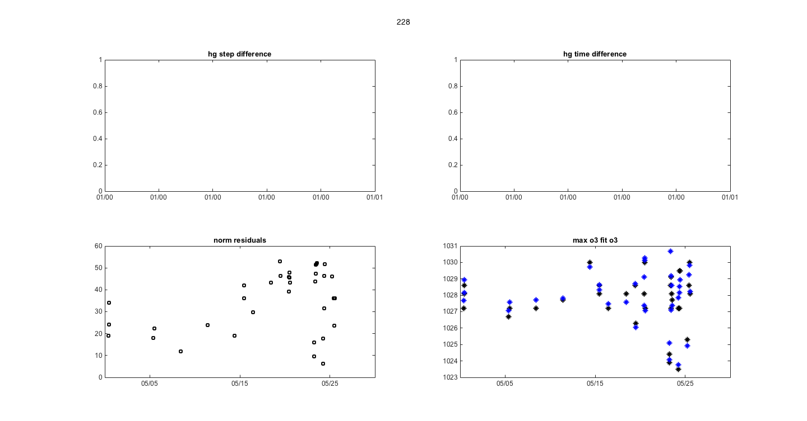

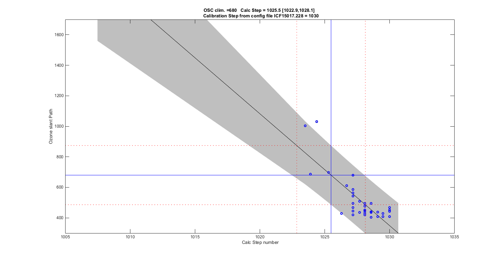
Sun_scan: Campaign
[cal_step{2},sc_avg{2},sc_raw{2},Args{2}]=sc_report(Cal.brw_str{Cal.n_inst},Cal.brw_config_files{Cal.n_inst,2},...
'date_range',datenum(Cal.Date.cal_year,1,[174 175]),...
'CSN_orig',config_def(14),'OSC',Station.OSC,...
'control_flag',1,'residual_limit',35,...
'hg_time',35,'one_flag',1);
228
ans =
'22-Jun-2019'
OK->B17419.228
ans =
'22-Jun-2019'
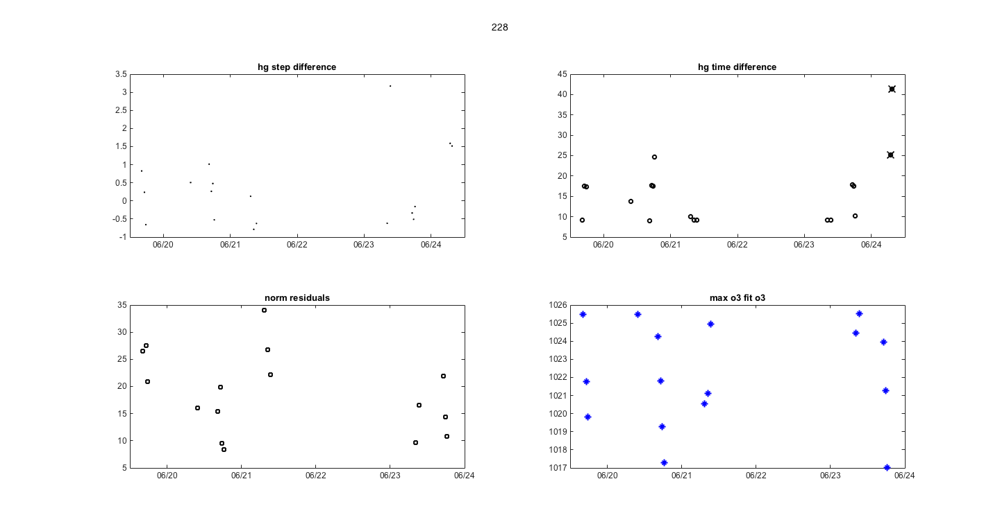 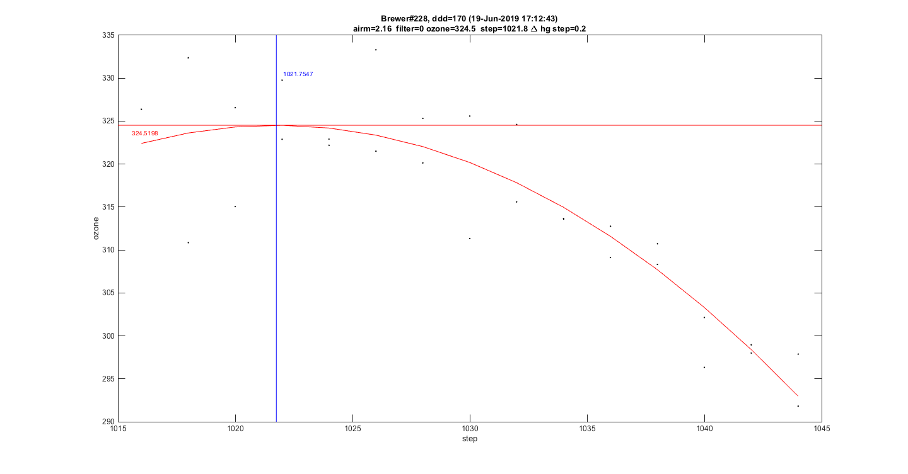 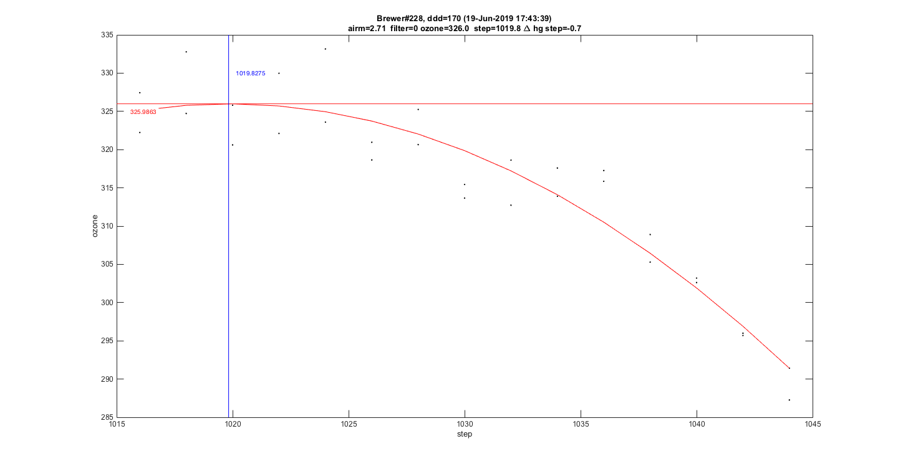 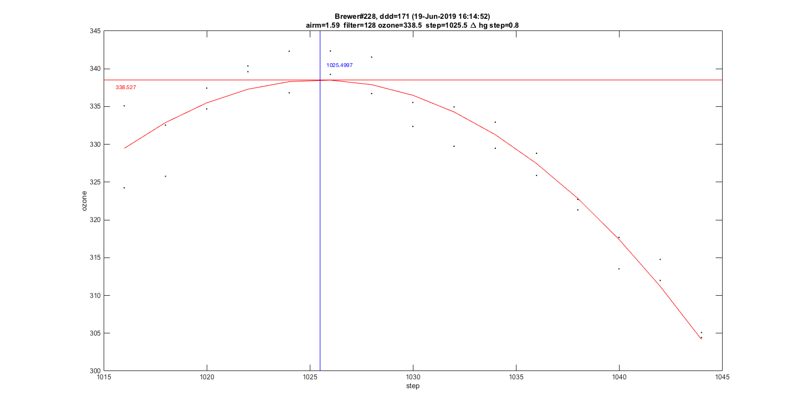 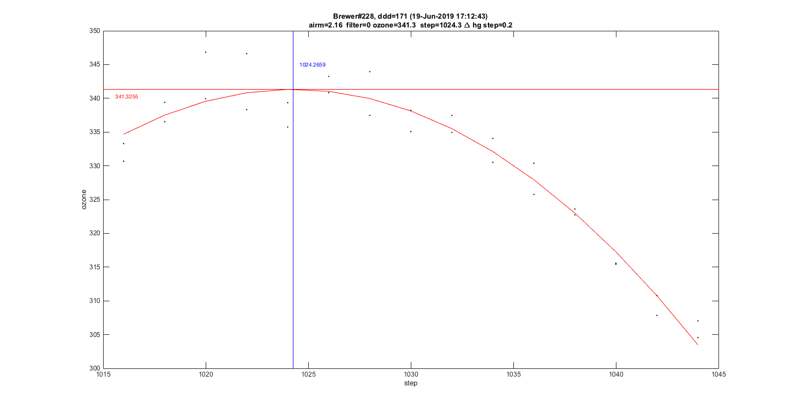 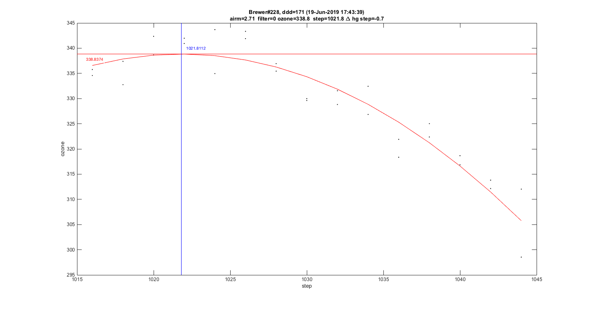 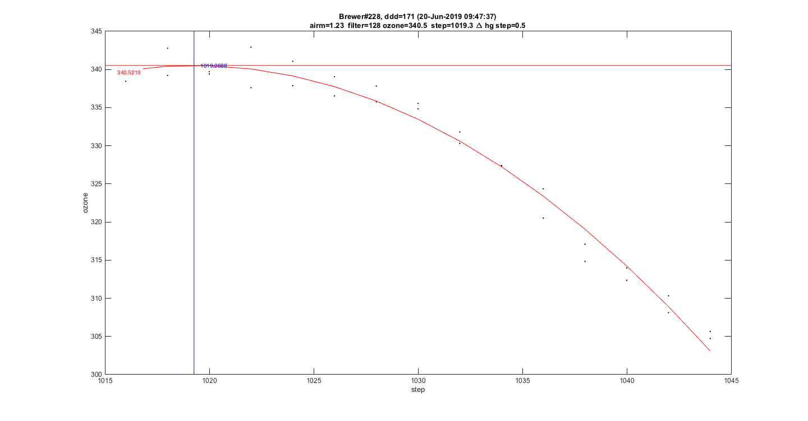 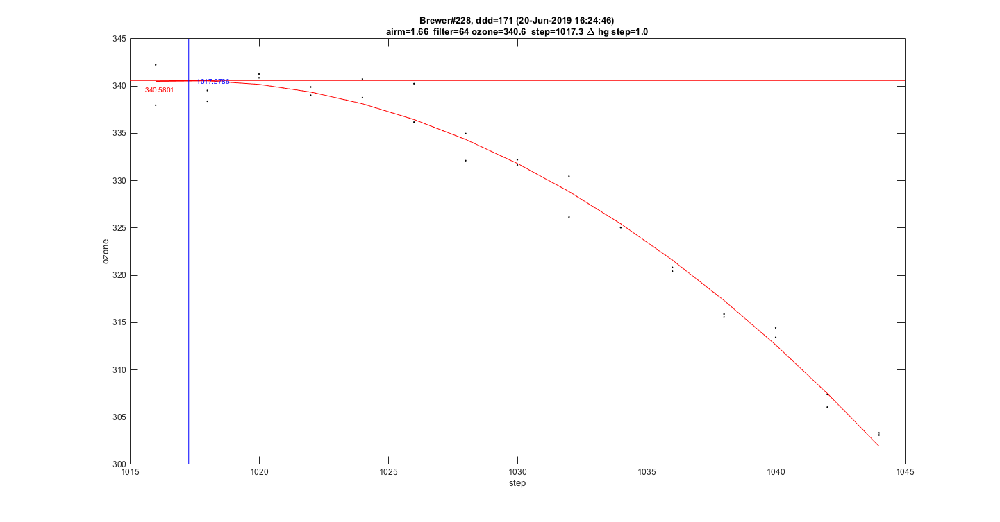 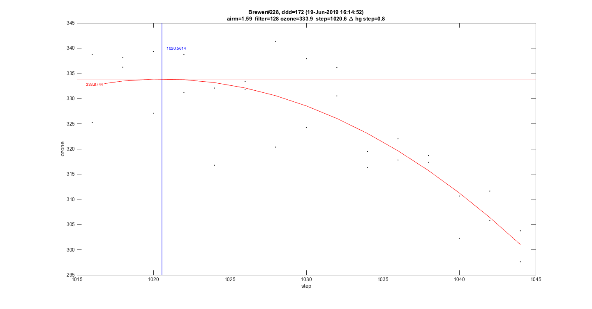
ix=sort(findobj('tag','SC_INDIVIDUAL')); figure(ix); set(get(gca,'title'),'FontSize',8);
printfiles_report(ix',Cal.dir_figs,'aux_pattern',ix,'FontSize',.9,'Width',8.5,'Height',7);
ix=sort(findobj('tag','Final_SC_Calculation'));
if length(ix)>1
Width=8; Height=6;
for i=1:length(ix), figure(ix(i)); set(get(gca,'title'),'FontSize',8); end
else
Width=13; Height=8;
end
printfiles_report(ix',Cal.dir_figs,'aux_pattern',ix,'Width',Width,'Height',Height);
close all
naux =
1
naux =
1
figura =
'228_figures_Final_SC_Calculation_1'
naux =
2
Definicion de variables: SC
if length(cal_step)>1
d_p=[length(cal_step)-1 length(cal_step)]; tags={'','new'};
else
d_p=1; tags={'new'};
end
idx=1; cal_step_error={};
for t=d_p
cal_step_error{t}=round(mean([abs(cal_step{t}(2)-cal_step{t}(3)),abs(cal_step{t}(2)-cal_step{t}(4))]));
latexcmd(fullfile(Cal.file_latex,['cal_wavelengthSC',tags{idx},'_',Cal.brw_str{Cal.n_inst}]),...
['\numSC',tags{idx}],size(sc_avg{t},1),...
['\CALCSTEP',tags{idx}],round(cal_step{t}(1)),...
['\calsteperror',tags{idx}],cal_step_error{t});
idx=idx+1;
end
load(Cal.file_save,'sunscan');sunscan{Cal.n_inst}.cal_step=cal_step;
sunscan{Cal.n_inst}.cal_step_error=cal_step_error;
sunscan{Cal.n_inst}.sc_avg=sc_avg; sunscan{Cal.n_inst}.sc_raw=sc_raw;
sunscan{Cal.n_inst}.info=Args;
save(Cal.file_save,'-APPEND','sunscan');
dsp calibration
res={}; detail={}; DSP_QUAD={}; QUAD_SUM={}; QUAD_DETAIL={};
CUBIC_SUM={}; CUBIC_DETAIL={}; salida={}; CSN_icf={};
l=dir(fullfile('DSP',[Cal.brw_str{Cal.n_inst},'*']));
ldsp=cellstr(cat(1,l.name));
for jj=1:length(ldsp)
calc_step change
if jj==length(ldsp),confign=2; else confign=1; end
try
[res{jj},detail{jj},DSP_QUAD{jj},QUAD_SUM{jj},QUAD_DETAIL{jj},...
CUBIC_SUM{jj},CUBIC_DETAIL{jj},salida{jj},CSN_icf{jj},...
]=dspreport(Cal,'dsp_dir',fullfile('DSP',ldsp{jj}),'config_n',confign);
catch
warning(sprintf('Error en %s. DSP: %s',Cal.brw_name{Cal.n_inst},ldsp{jj}));
res{jj}=NaN*ones(15,9,2); detail{jj}=NaN*ones(7,6,15,2); QUAD_DETAIL{jj}=NaN;
end
datefile =
735817
now:W1021714.228
now:W3021714.228
now:W7021714.228
now:W8021714.228
now:W9021714.228
now:W11021714.228
now:W12021714.228
now:W1121714.228
now:W3121714.228
now:W7121714.228
now:W8121714.228
now:W9121714.228
now:W11121714.228
now:W12121714.228
now:W13121714.228
now:W3221714.228
now:W7221714.228
now:W8221714.228
now:W9221714.228
now:W11221714.228
now:W12221714.228
now:W13221714.228
now:W3321714.228
now:W7321714.228
now:W8321714.228
now:W9321714.228
now:W11321714.228
now:W12321714.228
now:W13321714.228
now:W7421714.228
now:W8421714.228
now:W9421714.228
now:W11421714.228
now:W12421714.228
now:W13421714.228
now:W7521714.228
now:W8521714.228
now:W9521714.228
now:W11521714.228
now:W12521714.228
now:W13521714.228
now:W14521714.228
lines_dsp_21714__228
saving alldsp to DSP/228_14_218/alldsp_21714_228.228
eliminamos la linea slit 2 3499.952000 -0.333833
eliminamos la linea slit 6 3133.167000 -0.126214
eliminamos la linea slit 4 3499.952000 -0.198250
eliminamos la linea slit 3 3499.952000 -0.181498
eliminamos la linea slit 2 3403.652000 -0.164515
eliminamos la linea slit 1 3403.652000 -0.155497
eliminamos la linea slit 4 3080.822000 -0.121892
eliminamos la linea slit 2 2967.280000 -0.127242
eliminamos la linea slit 4 3133.167000 -0.129159
saving normaldsp to DSP/228_14_218/dspnorm_21714_228.228 as brewer compatible file
Use polyval(pwl(2,:),wl) for calculating normal wavelengths
Saving ozonecoeffs to DSP/228_14_218/opos21714_228.228
1025 WL(A) 3030.75 3061.77 3099.21 3133.47 3166.60 3198.46
Res(A) 10.58 10.59 10.42 10.64 10.42 10.28
O3abs(1/cm) 2.6413 1.8047 1.0101 0.6791 0.3751 0.3012 O3: 0.3575
Daumt O3abs(1/cm) 2.6483 1.7975 1.0027 0.6703 0.3689 0.2994 O3: 0.3649
So2abs(1/cm) 3.7338 5.1930 2.2887 2.1437 1.0294 0.6535
Bremen O3abs(1/cm) 2.6507 1.8020 1.0084 0.6807 0.3738 0.3009 O3: 0.3572
Nicolet 1e4*Rayabs(1/cm) 5059.0 4840.7 4593.0 4380.3 4186.5 4010.3 R: 10.0647
Bates(fix) 1e4*Rayabs(1/cm) 0.0 4870.0 4620.0 4410.0 4220.0 4040.0 R: -1.0000
Bodhaine 1e4*Rayabs(1/cm) 5055.5 4838.7 4592.4 4381.0 4188.0 4012.6 R: 9.6932
I0(mW m^-2nm^-1) 11795.92 9493.93 7537.87 4959.38 4222.77 3324.37 ETC: 1420
Ozone offset due to Rayleigh (RayCOeff/O3Coeff): -2.8 DU
Ozone offset due to Rayleigh (Bodhaine): -3.0 DU
Ratio Ozone for So2(A3)= 1.1933, So2/O3(A2)= 2.4812
O3 factor from Bass & Paur to Daumont = 0.9797
O3 factor from Bass & Paur to Bremen = 1.0009
1026 WL(A) 3030.83 3061.84 3099.28 3133.54 3166.67 3198.53
Res(A) 10.58 10.59 10.42 10.64 10.42 10.28
O3abs(1/cm) 2.6382 1.8035 1.0099 0.6793 0.3749 0.3011 O3: 0.3574
Daumt O3abs(1/cm) 2.6453 1.7964 1.0023 0.6705 0.3687 0.2993 O3: 0.3648
So2abs(1/cm) 3.7085 5.2263 2.2934 2.1340 1.0306 0.6521
Bremen O3abs(1/cm) 2.6478 1.8008 1.0080 0.6809 0.3736 0.3009 O3: 0.3571
Nicolet 1e4*Rayabs(1/cm) 5058.5 4840.2 4592.5 4379.9 4186.1 4009.9 R: 10.0615
Bates(fix) 1e4*Rayabs(1/cm) 0.0 4870.0 4620.0 4410.0 4220.0 4040.0 R: -1.0000
Bodhaine 1e4*Rayabs(1/cm) 5055.0 4838.2 4592.0 4380.5 4187.6 4012.2 R: 9.6888
I0(mW m^-2nm^-1) 11788.86 9486.96 7530.78 4956.47 4211.47 3318.18 ETC: 1428
Ozone offset due to Rayleigh (RayCOeff/O3Coeff): -2.8 DU
Ozone offset due to Rayleigh (Bodhaine): -3.0 DU
Ratio Ozone for So2(A3)= 1.1925, So2/O3(A2)= 2.5028
O3 factor from Bass & Paur to Daumont = 0.9796
O3 factor from Bass & Paur to Bremen = 1.0009
1027 WL(A) 3030.90 3061.91 3099.35 3133.61 3166.74 3198.60
Res(A) 10.58 10.59 10.42 10.64 10.42 10.28
O3abs(1/cm) 2.6353 1.8023 1.0096 0.6795 0.3747 0.3010 O3: 0.3571
Daumt O3abs(1/cm) 2.6423 1.7953 1.0019 0.6708 0.3684 0.2993 O3: 0.3647
So2abs(1/cm) 3.6847 5.2597 2.2980 2.1240 1.0319 0.6508
Bremen O3abs(1/cm) 2.6449 1.7996 1.0076 0.6811 0.3734 0.3008 O3: 0.3569
Nicolet 1e4*Rayabs(1/cm) 5058.0 4839.7 4592.1 4379.5 4185.7 4009.6 R: 10.0582
Bates(fix) 1e4*Rayabs(1/cm) 0.0 4870.0 4620.0 4410.0 4220.0 4040.0 R: -1.0000
Bodhaine 1e4*Rayabs(1/cm) 5054.4 4837.7 4591.5 4380.1 4187.2 4011.8 R: 9.6881
I0(mW m^-2nm^-1) 11781.81 9479.99 7524.18 4953.56 4200.19 3311.99 ETC: 1437
Ozone offset due to Rayleigh (RayCOeff/O3Coeff): -2.8 DU
Ozone offset due to Rayleigh (Bodhaine): -3.0 DU
Ratio Ozone for So2(A3)= 1.1915, So2/O3(A2)= 2.5247
O3 factor from Bass & Paur to Daumont = 0.9791
O3 factor from Bass & Paur to Bremen = 1.0005
1028 WL(A) 3030.97 3061.98 3099.42 3133.68 3166.81 3198.67
Res(A) 10.58 10.59 10.42 10.64 10.42 10.28
O3abs(1/cm) 2.6325 1.8011 1.0093 0.6797 0.3746 0.3008 O3: 0.3567
Daumt O3abs(1/cm) 2.6394 1.7941 1.0015 0.6710 0.3682 0.2993 O3: 0.3646
So2abs(1/cm) 3.6610 5.2935 2.3027 2.1135 1.0331 0.6494
Bremen O3abs(1/cm) 2.6421 1.7983 1.0072 0.6813 0.3732 0.3008 O3: 0.3567
Nicolet 1e4*Rayabs(1/cm) 5057.4 4839.2 4591.6 4379.1 4185.3 4009.2 R: 10.0549
Bates(fix) 1e4*Rayabs(1/cm) 0.0 4870.0 4620.0 4410.0 4220.0 4040.0 R: -1.0000
Bodhaine 1e4*Rayabs(1/cm) 5053.9 4837.2 4591.1 4379.7 4186.8 4011.5 R: 9.6854
I0(mW m^-2nm^-1) 11774.77 9473.04 7518.12 4950.65 4188.95 3305.82 ETC: 1447
Ozone offset due to Rayleigh (RayCOeff/O3Coeff): -2.8 DU
Ozone offset due to Rayleigh (Bodhaine): -3.0 DU
Ratio Ozone for So2(A3)= 1.1904, So2/O3(A2)= 2.5472
O3 factor from Bass & Paur to Daumont = 0.9784
O3 factor from Bass & Paur to Bremen = 1.0000
1029 WL(A) 3031.05 3062.06 3099.50 3133.75 3166.88 3198.74
Res(A) 10.58 10.59 10.42 10.64 10.42 10.28
O3abs(1/cm) 2.6296 1.7999 1.0089 0.6798 0.3745 0.3007 O3: 0.3564
Daumt O3abs(1/cm) 2.6365 1.7930 1.0011 0.6713 0.3681 0.2992 O3: 0.3644
So2abs(1/cm) 3.6370 5.3249 2.3076 2.1031 1.0344 0.6479
Bremen O3abs(1/cm) 2.6393 1.7971 1.0068 0.6815 0.3731 0.3007 O3: 0.3565
Nicolet 1e4*Rayabs(1/cm) 5056.9 4838.7 4591.1 4378.6 4184.9 4008.8 R: 10.0516
Bates(fix) 1e4*Rayabs(1/cm) 0.0 4870.0 4620.0 4410.0 4220.0 4040.0 R: -1.0000
Bodhaine 1e4*Rayabs(1/cm) 5053.4 4836.7 4590.6 4379.3 4186.5 4011.1 R: 9.6778
I0(mW m^-2nm^-1) 11767.74 9466.10 7511.90 4947.74 4177.73 3299.65 ETC: 1456
Ozone offset due to Rayleigh (RayCOeff/O3Coeff): -2.8 DU
Ozone offset due to Rayleigh (Bodhaine): -3.0 DU
Ratio Ozone for So2(A3)= 1.1893, So2/O3(A2)= 2.5678
O3 factor from Bass & Paur to Daumont = 0.9779
O3 factor from Bass & Paur to Bremen = 0.9997
1030 WL(A) 3031.12 3062.13 3099.57 3133.82 3166.95 3198.80
Res(A) 10.58 10.58 10.42 10.64 10.42 10.28
O3abs(1/cm) 2.6268 1.7987 1.0086 0.6799 0.3744 0.3006 O3: 0.3560
Daumt O3abs(1/cm) 2.6336 1.7918 1.0007 0.6715 0.3679 0.2992 O3: 0.3642
So2abs(1/cm) 3.6138 5.3559 2.3130 2.0928 1.0357 0.6464
Bremen O3abs(1/cm) 2.6365 1.7958 1.0064 0.6816 0.3729 0.3006 O3: 0.3562
Nicolet 1e4*Rayabs(1/cm) 5056.4 4838.3 4590.7 4378.2 4184.5 4008.5 R: 10.0483
Bates(fix) 1e4*Rayabs(1/cm) 0.0 4870.0 4620.0 4410.0 4220.0 4040.0 R: -1.0000
Bodhaine 1e4*Rayabs(1/cm) 5052.9 4836.2 4590.2 4378.8 4186.1 4010.7 R: 9.6785
I0(mW m^-2nm^-1) 11760.73 9459.17 7505.51 4944.83 4166.54 3293.49 ETC: 1466
Ozone offset due to Rayleigh (RayCOeff/O3Coeff): -2.8 DU
Ozone offset due to Rayleigh (Bodhaine): -3.0 DU
Ratio Ozone for So2(A3)= 1.1881, So2/O3(A2)= 2.5878
O3 factor from Bass & Paur to Daumont = 0.9776
O3 factor from Bass & Paur to Bremen = 0.9995
1031 WL(A) 3031.19 3062.20 3099.64 3133.89 3167.02 3198.87
Res(A) 10.58 10.58 10.42 10.64 10.42 10.28
O3abs(1/cm) 2.6239 1.7975 1.0083 0.6799 0.3743 0.3005 O3: 0.3556
Daumt O3abs(1/cm) 2.6308 1.7906 1.0004 0.6717 0.3678 0.2991 O3: 0.3639
So2abs(1/cm) 3.5924 5.3869 2.3185 2.0824 1.0370 0.6448
Bremen O3abs(1/cm) 2.6337 1.7946 1.0060 0.6818 0.3728 0.3005 O3: 0.3559
Nicolet 1e4*Rayabs(1/cm) 5055.8 4837.8 4590.2 4377.8 4184.1 4008.1 R: 10.0450
Bates(fix) 1e4*Rayabs(1/cm) 0.0 4870.0 4620.0 4410.0 4220.0 4040.0 R: -1.0000
Bodhaine 1e4*Rayabs(1/cm) 5052.3 4835.7 4589.7 4378.4 4185.7 4010.4 R: 9.6764
I0(mW m^-2nm^-1) 11753.72 9452.25 7498.96 4941.93 4155.39 3287.34 ETC: 1475
Ozone offset due to Rayleigh (RayCOeff/O3Coeff): -2.8 DU
Ozone offset due to Rayleigh (Bodhaine): -3.0 DU
Ratio Ozone for So2(A3)= 1.1867, So2/O3(A2)= 2.6082
O3 factor from Bass & Paur to Daumont = 0.9771
O3 factor from Bass & Paur to Bremen = 0.9992
1032 WL(A) 3031.26 3062.27 3099.71 3133.96 3167.09 3198.94
Res(A) 10.58 10.58 10.42 10.64 10.42 10.28
O3abs(1/cm) 2.6209 1.7960 1.0080 0.6799 0.3743 0.3002 O3: 0.3550
Daumt O3abs(1/cm) 2.6280 1.7894 1.0000 0.6718 0.3676 0.2990 O3: 0.3636
So2abs(1/cm) 3.5709 5.4181 2.3241 2.0713 1.0383 0.6433
Bremen O3abs(1/cm) 2.6310 1.7932 1.0057 0.6819 0.3727 0.3004 O3: 0.3555
Nicolet 1e4*Rayabs(1/cm) 5055.3 4837.3 4589.8 4377.4 4183.7 4007.7 R: 10.0417
Bates(fix) 1e4*Rayabs(1/cm) 0.0 4870.0 4620.0 4410.0 4220.0 4040.0 R: -1.0000
Bodhaine 1e4*Rayabs(1/cm) 5051.8 4835.2 4589.3 4378.0 4185.3 4010.0 R: 9.6662
I0(mW m^-2nm^-1) 11746.73 9445.34 7492.24 4939.02 4144.25 3281.20 ETC: 1483
Ozone offset due to Rayleigh (RayCOeff/O3Coeff): -2.8 DU
Ozone offset due to Rayleigh (Bodhaine): -3.0 DU
Ratio Ozone for So2(A3)= 1.1848, So2/O3(A2)= 2.6296
O3 factor from Bass & Paur to Daumont = 0.9764
O3 factor from Bass & Paur to Bremen = 0.9987
1033 WL(A) 3031.34 3062.35 3099.78 3134.03 3167.16 3199.01
Res(A) 10.58 10.58 10.42 10.64 10.42 10.28
O3abs(1/cm) 2.6181 1.7946 1.0078 0.6799 0.3742 0.3000 O3: 0.3546
Daumt O3abs(1/cm) 2.6252 1.7882 0.9997 0.6720 0.3675 0.2989 O3: 0.3633
So2abs(1/cm) 3.5493 5.4473 2.3296 2.0603 1.0396 0.6416
Bremen O3abs(1/cm) 2.6283 1.7919 1.0053 0.6820 0.3726 0.3003 O3: 0.3551
Nicolet 1e4*Rayabs(1/cm) 5054.8 4836.8 4589.3 4376.9 4183.3 4007.4 R: 10.0385
Bates(fix) 1e4*Rayabs(1/cm) 0.0 4870.0 4620.0 4410.0 4220.0 4040.0 R: -1.0000
Bodhaine 1e4*Rayabs(1/cm) 5051.3 4834.8 4588.8 4377.6 4184.9 4009.6 R: 9.6682
I0(mW m^-2nm^-1) 11739.74 9438.44 7485.33 4936.12 4133.15 3275.07 ETC: 1492
Ozone offset due to Rayleigh (RayCOeff/O3Coeff): -2.8 DU
Ozone offset due to Rayleigh (Bodhaine): -3.0 DU
Ratio Ozone for So2(A3)= 1.1830, So2/O3(A2)= 2.6490
O3 factor from Bass & Paur to Daumont = 0.9761
O3 factor from Bass & Paur to Bremen = 0.9985
1034 WL(A) 3031.41 3062.42 3099.85 3134.10 3167.23 3199.08
Res(A) 10.58 10.58 10.42 10.64 10.42 10.28
O3abs(1/cm) 2.6154 1.7933 1.0075 0.6799 0.3741 0.2997 O3: 0.3540
Daumt O3abs(1/cm) 2.6224 1.7870 0.9993 0.6721 0.3674 0.2988 O3: 0.3629
So2abs(1/cm) 3.5283 5.4757 2.3358 2.0495 1.0410 0.6398
Bremen O3abs(1/cm) 2.6257 1.7906 1.0050 0.6821 0.3725 0.3001 O3: 0.3547
Nicolet 1e4*Rayabs(1/cm) 5054.3 4836.3 4588.9 4376.5 4182.9 4007.0 R: 10.0352
Bates(fix) 1e4*Rayabs(1/cm) 0.0 4870.0 4620.0 4410.0 4220.0 4040.0 R: -1.0000
Bodhaine 1e4*Rayabs(1/cm) 5050.8 4834.3 4588.4 4377.2 4184.5 4009.3 R: 9.6670
I0(mW m^-2nm^-1) 11732.77 9431.55 7459.62 4933.22 4122.07 3268.94 ETC: 1482
Ozone offset due to Rayleigh (RayCOeff/O3Coeff): -2.8 DU
Ozone offset due to Rayleigh (Bodhaine): -3.0 DU
Ratio Ozone for So2(A3)= 1.1810, So2/O3(A2)= 2.6680
O3 factor from Bass & Paur to Daumont = 0.9756
O3 factor from Bass & Paur to Bremen = 0.9981
1035 WL(A) 3031.48 3062.49 3099.92 3134.17 3167.30 3199.15
Res(A) 10.58 10.58 10.42 10.64 10.42 10.28
O3abs(1/cm) 2.6128 1.7919 1.0073 0.6799 0.3741 0.2995 O3: 0.3533
Daumt O3abs(1/cm) 2.6197 1.7857 0.9990 0.6723 0.3673 0.2986 O3: 0.3624
So2abs(1/cm) 3.5091 5.5040 2.3422 2.0387 1.0423 0.6381
Bremen O3abs(1/cm) 2.6230 1.7892 1.0047 0.6822 0.3724 0.3000 O3: 0.3542
Nicolet 1e4*Rayabs(1/cm) 5053.7 4835.8 4588.4 4376.1 4182.5 4006.6 R: 10.0319
Bates(fix) 1e4*Rayabs(1/cm) 0.0 4870.0 4620.0 4410.0 4220.0 4040.0 R: -1.0000
Bodhaine 1e4*Rayabs(1/cm) 5050.2 4833.8 4587.9 4376.7 4184.1 4008.9 R: 9.6589
I0(mW m^-2nm^-1) 11725.81 9424.67 7431.02 4930.33 4111.03 3262.83 ETC: 1468
Ozone offset due to Rayleigh (RayCOeff/O3Coeff): -2.8 DU
Ozone offset due to Rayleigh (Bodhaine): -3.0 DU
Ratio Ozone for So2(A3)= 1.1789, So2/O3(A2)= 2.6875
O3 factor from Bass & Paur to Daumont = 0.9749
O3 factor from Bass & Paur to Bremen = 0.9976
saving powfiu7 to DSP/228_14_218/dsp_21714_228.228
freecoef =
4
freecoef =
9
freecoef =
9
freecoef =
9
freecoef =
9
freecoef =
9
freecoef =
9
freecoef =
9
freecoef =
9
freecoef =
9
saving data to file:DSP/228_14_218/dsp_21714_228.228
Use brstps2 to calculate steps and wavelengths
Saving ozonecoeffs to DSP/228_14_218/opos_pow7_21714_228.228
1025 WL(A) 3030.89 3061.90 3099.32 3133.78 3166.72 3198.64
Res(A) 10.57 10.57 10.41 10.63 10.43 10.28
O3abs(1/cm) 2.6355 1.8025 1.0097 0.6798 0.3748 0.3009 O3: 0.3568
Daumt O3abs(1/cm) 2.6425 1.7954 1.0020 0.6714 0.3685 0.2993 O3: 0.3644
So2abs(1/cm) 3.6862 5.2560 2.2959 2.0988 1.0314 0.6499
Bremen O3abs(1/cm) 2.6451 1.7998 1.0077 0.6816 0.3735 0.3008 O3: 0.3566
Nicolet 1e4*Rayabs(1/cm) 5058.0 4839.8 4592.3 4378.5 4185.8 4009.3 R: 10.0564
Bates(fix) 1e4*Rayabs(1/cm) 0.0 4870.0 4620.0 4410.0 4220.0 4040.0 R: -1.0000
Bodhaine 1e4*Rayabs(1/cm) 5054.5 4837.8 4591.7 4379.1 4187.4 4011.6 R: 9.6845
I0(mW m^-2nm^-1) 11782.71 9481.09 7526.59 4946.39 4203.87 3307.95 ETC: 1428
Ozone offset due to Rayleigh (RayCOeff/O3Coeff): -2.8 DU
Ozone offset due to Rayleigh (Bodhaine): -3.0 DU
Ratio Ozone for So2(A3)= 1.1912, So2/O3(A2)= 2.5214
O3 factor from Bass & Paur to Daumont = 0.9792
O3 factor from Bass & Paur to Bremen = 1.0005
1026 WL(A) 3030.97 3061.98 3099.39 3133.85 3166.78 3198.71
Res(A) 10.57 10.57 10.41 10.63 10.43 10.28
O3abs(1/cm) 2.6327 1.8013 1.0094 0.6799 0.3747 0.3008 O3: 0.3565
Daumt O3abs(1/cm) 2.6396 1.7943 1.0016 0.6716 0.3683 0.2993 O3: 0.3642
So2abs(1/cm) 3.6624 5.2898 2.3006 2.0885 1.0327 0.6484
Bremen O3abs(1/cm) 2.6423 1.7985 1.0073 0.6817 0.3733 0.3007 O3: 0.3564
Nicolet 1e4*Rayabs(1/cm) 5057.5 4839.3 4591.8 4378.0 4185.4 4009.0 R: 10.0540
Bates(fix) 1e4*Rayabs(1/cm) 0.0 4870.0 4620.0 4410.0 4220.0 4040.0 R: -1.0000
Bodhaine 1e4*Rayabs(1/cm) 5054.0 4837.3 4591.3 4378.7 4187.0 4011.2 R: 9.6795
I0(mW m^-2nm^-1) 11775.66 9474.13 7520.58 4943.48 4192.63 3301.78 ETC: 1438
Ozone offset due to Rayleigh (RayCOeff/O3Coeff): -2.8 DU
Ozone offset due to Rayleigh (Bodhaine): -3.0 DU
Ratio Ozone for So2(A3)= 1.1902, So2/O3(A2)= 2.5437
O3 factor from Bass & Paur to Daumont = 0.9788
O3 factor from Bass & Paur to Bremen = 1.0003
1027 WL(A) 3031.04 3062.05 3099.46 3133.92 3166.85 3198.78
Res(A) 10.57 10.57 10.41 10.62 10.43 10.28
O3abs(1/cm) 2.6298 1.8001 1.0091 0.6799 0.3746 0.3007 O3: 0.3562
Daumt O3abs(1/cm) 2.6367 1.7932 1.0012 0.6718 0.3682 0.2992 O3: 0.3641
So2abs(1/cm) 3.6385 5.3214 2.3054 2.0778 1.0340 0.6469
Bremen O3abs(1/cm) 2.6395 1.7973 1.0069 0.6818 0.3731 0.3006 O3: 0.3562
Nicolet 1e4*Rayabs(1/cm) 5056.9 4838.8 4591.3 4377.6 4185.0 4008.6 R: 10.0516
Bates(fix) 1e4*Rayabs(1/cm) 0.0 4870.0 4620.0 4410.0 4220.0 4040.0 R: -1.0000
Bodhaine 1e4*Rayabs(1/cm) 5053.4 4836.8 4590.8 4378.2 4186.6 4010.9 R: 9.6808
I0(mW m^-2nm^-1) 11768.63 9467.18 7514.43 4940.57 4181.42 3295.62 ETC: 1448
Ozone offset due to Rayleigh (RayCOeff/O3Coeff): -2.8 DU
Ozone offset due to Rayleigh (Bodhaine): -3.0 DU
Ratio Ozone for So2(A3)= 1.1890, So2/O3(A2)= 2.5643
O3 factor from Bass & Paur to Daumont = 0.9784
O3 factor from Bass & Paur to Bremen = 1.0001
1028 WL(A) 3031.11 3062.12 3099.54 3133.99 3166.92 3198.85
Res(A) 10.57 10.57 10.41 10.62 10.43 10.28
O3abs(1/cm) 2.6270 1.7989 1.0088 0.6799 0.3745 0.3005 O3: 0.3559
Daumt O3abs(1/cm) 2.6339 1.7920 1.0009 0.6719 0.3680 0.2991 O3: 0.3639
So2abs(1/cm) 3.6152 5.3525 2.3106 2.0667 1.0353 0.6454
Bremen O3abs(1/cm) 2.6367 1.7960 1.0066 0.6820 0.3730 0.3005 O3: 0.3559
Nicolet 1e4*Rayabs(1/cm) 5056.4 4838.3 4590.9 4377.2 4184.6 4008.2 R: 10.0492
Bates(fix) 1e4*Rayabs(1/cm) 0.0 4870.0 4620.0 4410.0 4220.0 4040.0 R: -1.0000
Bodhaine 1e4*Rayabs(1/cm) 5052.9 4836.3 4590.4 4377.8 4186.2 4010.5 R: 9.6786
I0(mW m^-2nm^-1) 11761.60 9460.23 7508.11 4937.67 4170.23 3289.47 ETC: 1457
Ozone offset due to Rayleigh (RayCOeff/O3Coeff): -2.8 DU
Ozone offset due to Rayleigh (Bodhaine): -3.0 DU
Ratio Ozone for So2(A3)= 1.1878, So2/O3(A2)= 2.5844
O3 factor from Bass & Paur to Daumont = 0.9780
O3 factor from Bass & Paur to Bremen = 0.9998
1029 WL(A) 3031.18 3062.19 3099.61 3134.06 3166.99 3198.92
Res(A) 10.57 10.57 10.41 10.62 10.43 10.28
O3abs(1/cm) 2.6241 1.7976 1.0084 0.6799 0.3744 0.3003 O3: 0.3553
Daumt O3abs(1/cm) 2.6310 1.7908 1.0005 0.6721 0.3678 0.2990 O3: 0.3636
So2abs(1/cm) 3.5937 5.3835 2.3161 2.0558 1.0366 0.6438
Bremen O3abs(1/cm) 2.6339 1.7948 1.0062 0.6821 0.3729 0.3004 O3: 0.3556
Nicolet 1e4*Rayabs(1/cm) 5055.9 4837.8 4590.4 4376.8 4184.3 4007.9 R: 10.0468
Bates(fix) 1e4*Rayabs(1/cm) 0.0 4870.0 4620.0 4410.0 4220.0 4040.0 R: -1.0000
Bodhaine 1e4*Rayabs(1/cm) 5052.4 4835.8 4589.9 4377.4 4185.8 4010.1 R: 9.6722
I0(mW m^-2nm^-1) 11754.59 9453.30 7501.63 4934.76 4159.07 3283.32 ETC: 1466
Ozone offset due to Rayleigh (RayCOeff/O3Coeff): -2.8 DU
Ozone offset due to Rayleigh (Bodhaine): -3.0 DU
Ratio Ozone for So2(A3)= 1.1861, So2/O3(A2)= 2.6053
O3 factor from Bass & Paur to Daumont = 0.9772
O3 factor from Bass & Paur to Bremen = 0.9991
1030 WL(A) 3031.26 3062.26 3099.68 3134.13 3167.06 3198.99
Res(A) 10.57 10.57 10.41 10.62 10.43 10.28
O3abs(1/cm) 2.6212 1.7963 1.0081 0.6800 0.3743 0.3000 O3: 0.3548
Daumt O3abs(1/cm) 2.6282 1.7896 1.0001 0.6722 0.3677 0.2989 O3: 0.3633
So2abs(1/cm) 3.5722 5.4147 2.3216 2.0450 1.0379 0.6422
Bremen O3abs(1/cm) 2.6312 1.7935 1.0058 0.6821 0.3727 0.3003 O3: 0.3553
Nicolet 1e4*Rayabs(1/cm) 5055.4 4837.3 4590.0 4376.3 4183.9 4007.5 R: 10.0444
Bates(fix) 1e4*Rayabs(1/cm) 0.0 4870.0 4620.0 4410.0 4220.0 4040.0 R: -1.0000
Bodhaine 1e4*Rayabs(1/cm) 5051.9 4835.3 4589.5 4377.0 4185.4 4009.8 R: 9.6729
I0(mW m^-2nm^-1) 11747.58 9446.38 7494.97 4931.86 4147.94 3277.18 ETC: 1475
Ozone offset due to Rayleigh (RayCOeff/O3Coeff): -2.8 DU
Ozone offset due to Rayleigh (Bodhaine): -3.0 DU
Ratio Ozone for So2(A3)= 1.1844, So2/O3(A2)= 2.6264
O3 factor from Bass & Paur to Daumont = 0.9764
O3 factor from Bass & Paur to Bremen = 0.9985
1031 WL(A) 3031.33 3062.34 3099.75 3134.20 3167.13 3199.06
Res(A) 10.57 10.57 10.41 10.62 10.43 10.28
O3abs(1/cm) 2.6183 1.7949 1.0079 0.6800 0.3742 0.2998 O3: 0.3543
Daumt O3abs(1/cm) 2.6254 1.7884 0.9998 0.6723 0.3676 0.2988 O3: 0.3630
So2abs(1/cm) 3.5507 5.4442 2.3271 2.0340 1.0392 0.6404
Bremen O3abs(1/cm) 2.6285 1.7922 1.0055 0.6822 0.3726 0.3002 O3: 0.3549
Nicolet 1e4*Rayabs(1/cm) 5054.8 4836.8 4589.5 4375.9 4183.5 4007.1 R: 10.0420
Bates(fix) 1e4*Rayabs(1/cm) 0.0 4870.0 4620.0 4410.0 4220.0 4040.0 R: -1.0000
Bodhaine 1e4*Rayabs(1/cm) 5051.3 4834.8 4589.0 4376.6 4185.0 4009.4 R: 9.6727
I0(mW m^-2nm^-1) 11740.59 9439.47 7488.13 4928.96 4136.84 3271.06 ETC: 1483
Ozone offset due to Rayleigh (RayCOeff/O3Coeff): -2.8 DU
Ozone offset due to Rayleigh (Bodhaine): -3.0 DU
Ratio Ozone for So2(A3)= 1.1825, So2/O3(A2)= 2.6459
O3 factor from Bass & Paur to Daumont = 0.9760
O3 factor from Bass & Paur to Bremen = 0.9983
1032 WL(A) 3031.40 3062.41 3099.82 3134.27 3167.20 3199.12
Res(A) 10.57 10.57 10.41 10.62 10.43 10.28
O3abs(1/cm) 2.6156 1.7935 1.0076 0.6799 0.3742 0.2996 O3: 0.3538
Daumt O3abs(1/cm) 2.6227 1.7872 0.9995 0.6724 0.3675 0.2987 O3: 0.3626
So2abs(1/cm) 3.5296 5.4726 2.3330 2.0224 1.0405 0.6387
Bremen O3abs(1/cm) 2.6259 1.7908 1.0051 0.6822 0.3726 0.3000 O3: 0.3545
Nicolet 1e4*Rayabs(1/cm) 5054.3 4836.3 4589.1 4375.5 4183.1 4006.7 R: 10.0395
Bates(fix) 1e4*Rayabs(1/cm) 0.0 4870.0 4620.0 4410.0 4220.0 4040.0 R: -1.0000
Bodhaine 1e4*Rayabs(1/cm) 5050.8 4834.3 4588.6 4376.1 4184.6 4009.0 R: 9.6665
I0(mW m^-2nm^-1) 11733.61 9432.57 7472.60 4926.06 4125.76 3264.94 ETC: 1483
Ozone offset due to Rayleigh (RayCOeff/O3Coeff): -2.8 DU
Ozone offset due to Rayleigh (Bodhaine): -3.0 DU
Ratio Ozone for So2(A3)= 1.1807, So2/O3(A2)= 2.6647
O3 factor from Bass & Paur to Daumont = 0.9758
O3 factor from Bass & Paur to Bremen = 0.9982
1033 WL(A) 3031.48 3062.48 3099.89 3134.34 3167.27 3199.19
Res(A) 10.57 10.57 10.41 10.62 10.43 10.28
O3abs(1/cm) 2.6130 1.7921 1.0074 0.6798 0.3741 0.2993 O3: 0.3532
Daumt O3abs(1/cm) 2.6199 1.7859 0.9991 0.6725 0.3674 0.2986 O3: 0.3622
So2abs(1/cm) 3.5104 5.5010 2.3393 2.0110 1.0418 0.6369
Bremen O3abs(1/cm) 2.6232 1.7895 1.0048 0.6823 0.3725 0.2999 O3: 0.3540
Nicolet 1e4*Rayabs(1/cm) 5053.8 4835.9 4588.6 4375.1 4182.7 4006.4 R: 10.0371
Bates(fix) 1e4*Rayabs(1/cm) 0.0 4870.0 4620.0 4410.0 4220.0 4040.0 R: -1.0000
Bodhaine 1e4*Rayabs(1/cm) 5050.3 4833.8 4588.1 4375.7 4184.2 4008.7 R: 9.6649
I0(mW m^-2nm^-1) 11726.64 9425.68 7443.89 4923.40 4114.72 3258.82 ETC: 1470
Ozone offset due to Rayleigh (RayCOeff/O3Coeff): -2.8 DU
Ozone offset due to Rayleigh (Bodhaine): -3.0 DU
Ratio Ozone for So2(A3)= 1.1785, So2/O3(A2)= 2.6842
O3 factor from Bass & Paur to Daumont = 0.9752
O3 factor from Bass & Paur to Bremen = 0.9978
1034 WL(A) 3031.55 3062.55 3099.96 3134.41 3167.34 3199.26
Res(A) 10.57 10.57 10.41 10.62 10.43 10.28
O3abs(1/cm) 2.6104 1.7907 1.0071 0.6797 0.3741 0.2991 O3: 0.3526
Daumt O3abs(1/cm) 2.6172 1.7847 0.9988 0.6725 0.3673 0.2984 O3: 0.3617
So2abs(1/cm) 3.4912 5.5293 2.3457 1.9998 1.0432 0.6352
Bremen O3abs(1/cm) 2.6206 1.7881 1.0045 0.6823 0.3724 0.2997 O3: 0.3535
Nicolet 1e4*Rayabs(1/cm) 5053.3 4835.4 4588.2 4374.6 4182.3 4006.0 R: 10.0347
Bates(fix) 1e4*Rayabs(1/cm) 0.0 4870.0 4620.0 4410.0 4220.0 4040.0 R: -1.0000
Bodhaine 1e4*Rayabs(1/cm) 5049.8 4833.4 4587.7 4375.3 4183.8 4008.3 R: 9.6664
I0(mW m^-2nm^-1) 11719.68 9418.81 7415.37 4920.96 4103.70 3252.72 ETC: 1456
Ozone offset due to Rayleigh (RayCOeff/O3Coeff): -2.8 DU
Ozone offset due to Rayleigh (Bodhaine): -3.0 DU
Ratio Ozone for So2(A3)= 1.1763, So2/O3(A2)= 2.7037
O3 factor from Bass & Paur to Daumont = 0.9747
O3 factor from Bass & Paur to Bremen = 0.9975
1035 WL(A) 3031.62 3062.62 3100.04 3134.48 3167.41 3199.33
Res(A) 10.57 10.57 10.41 10.62 10.43 10.28
O3abs(1/cm) 2.6077 1.7893 1.0068 0.6796 0.3742 0.2988 O3: 0.3519
Daumt O3abs(1/cm) 2.6146 1.7834 0.9985 0.6726 0.3673 0.2982 O3: 0.3612
So2abs(1/cm) 3.4720 5.5562 2.3521 1.9886 1.0445 0.6333
Bremen O3abs(1/cm) 2.6180 1.7867 1.0042 0.6822 0.3724 0.2995 O3: 0.3529
Nicolet 1e4*Rayabs(1/cm) 5052.7 4834.9 4587.7 4374.2 4181.9 4005.6 R: 10.0323
Bates(fix) 1e4*Rayabs(1/cm) 0.0 4870.0 4620.0 4410.0 4220.0 4040.0 R: -1.0000
Bodhaine 1e4*Rayabs(1/cm) 5049.3 4832.9 4587.2 4374.9 4183.4 4007.9 R: 9.6611
I0(mW m^-2nm^-1) 11712.73 9411.94 7387.04 4918.46 4092.71 3246.63 ETC: 1443
Ozone offset due to Rayleigh (RayCOeff/O3Coeff): -2.9 DU
Ozone offset due to Rayleigh (Bodhaine): -3.0 DU
Ratio Ozone for So2(A3)= 1.1741, So2/O3(A2)= 2.7218
O3 factor from Bass & Paur to Daumont = 0.9742
O3 factor from Bass & Paur to Bremen = 0.9972
Warning: The EraseMode property is no longer supported
and will error in a future release.
Warning: The EraseMode property is no longer supported
and will error in a future release.
Warning: The EraseMode property is no longer supported
and will error in a future release.
Warning: The EraseMode property is no longer supported
and will error in a future release.
Warning: The EraseMode property is no longer supported
and will error in a future release.
Warning: The EraseMode property is no longer supported
and will error in a future release.
Warning: The EraseMode property is no longer supported
and will error in a future release.
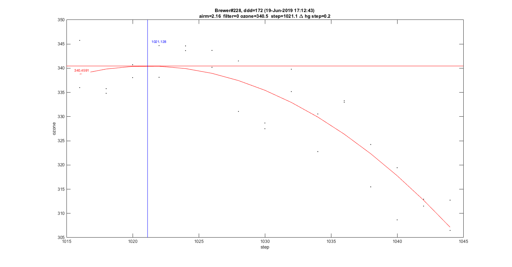 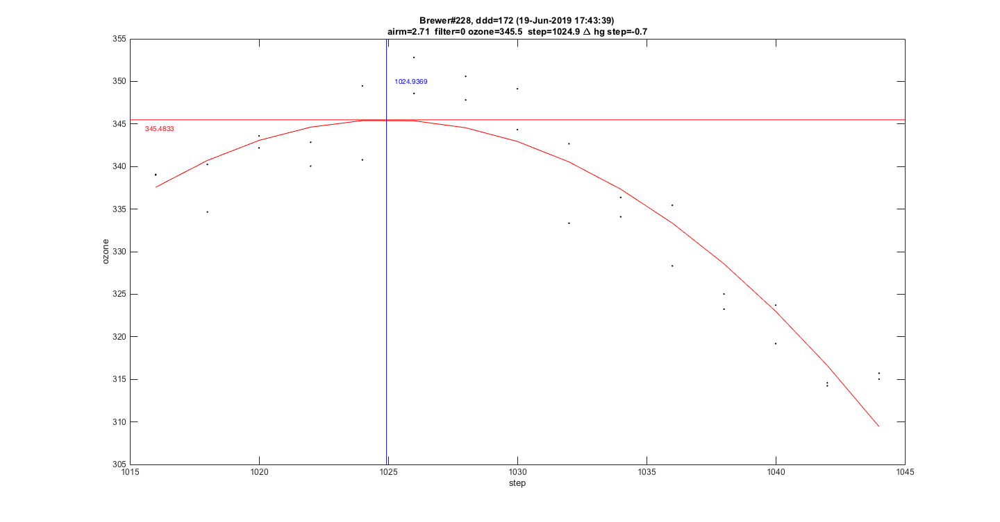 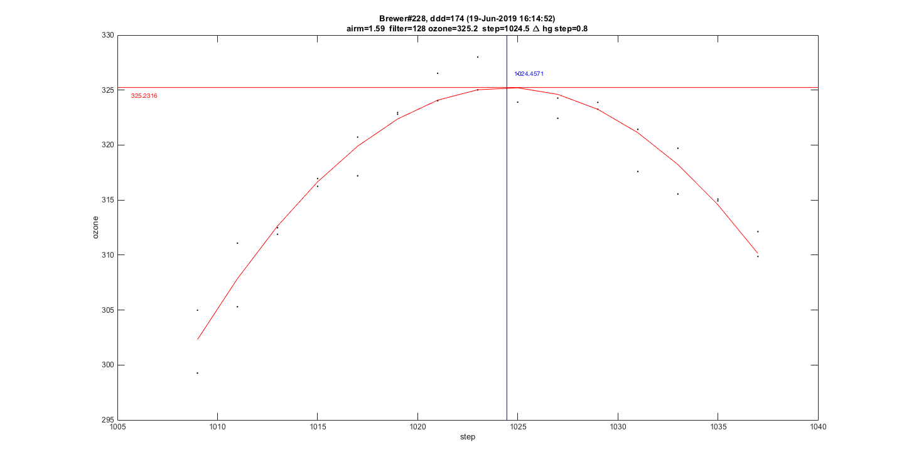 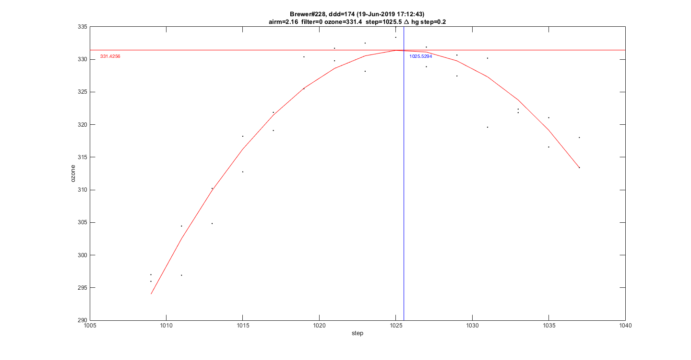 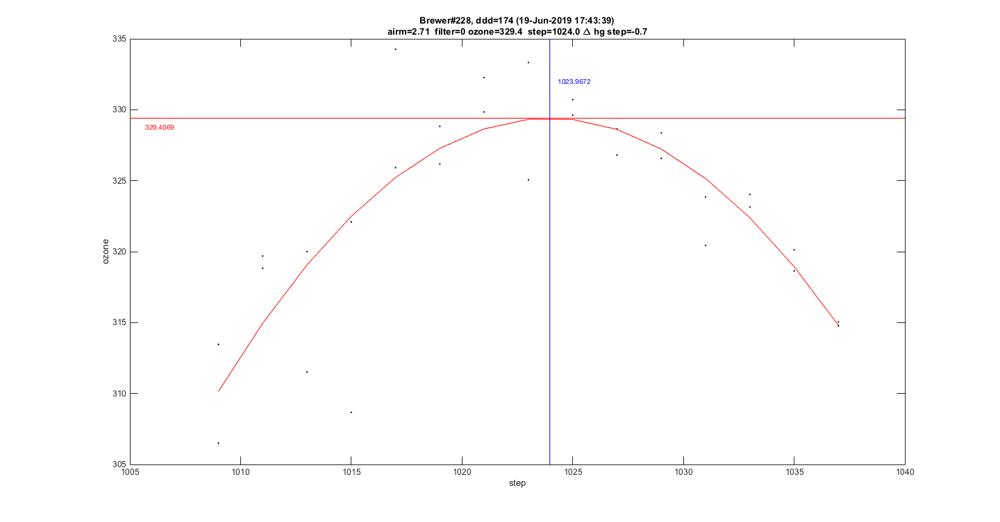 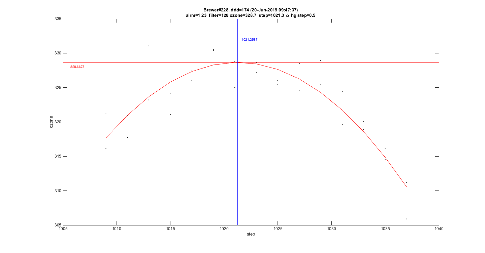 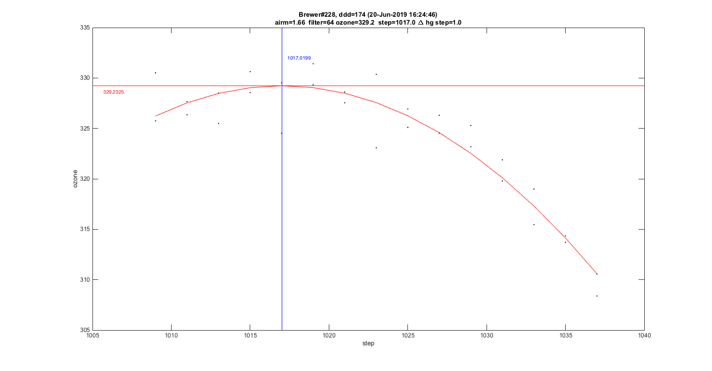

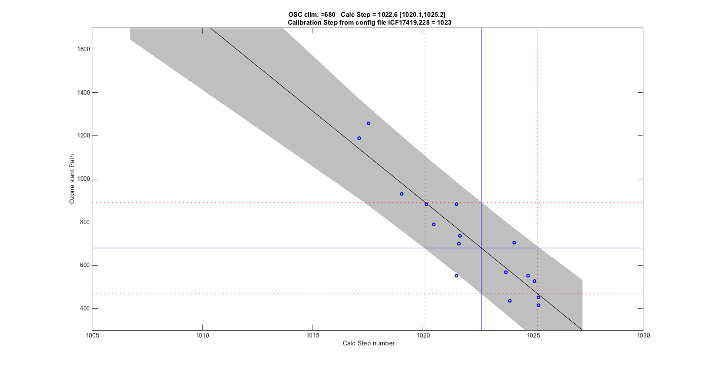 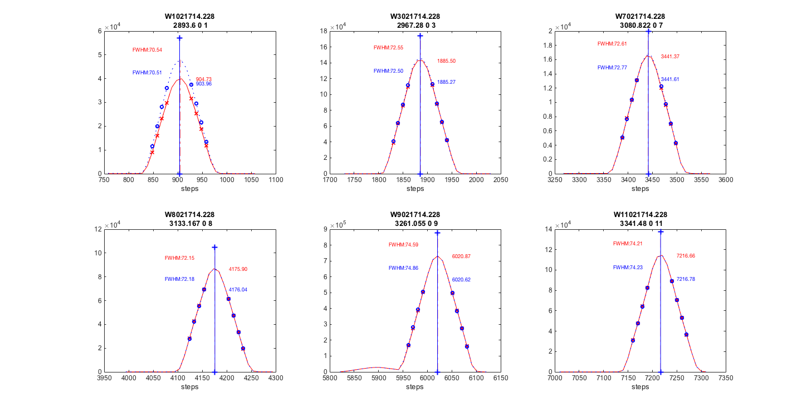
datefile =
736114
now:W1015015.228
now:W3015015.228
now:W7015015.228
now:W8015015.228
now:W9015015.228
now:W11015015.228
now:W12015015.228
now:W1115015.228
now:W3115015.228
now:W7115015.228
now:W8115015.228
now:W9115015.228
now:W11115015.228
now:W12115015.228
now:W13115015.228
now:W3215015.228
now:W7215015.228
now:W8215015.228
now:W9215015.228
now:W11215015.228
now:W12215015.228
now:W13215015.228
now:W3315015.228
now:W7315015.228
now:W8315015.228
now:W9315015.228
now:W11315015.228
now:W12315015.228
now:W13315015.228
now:W7415015.228
now:W8415015.228
now:W9415015.228
now:W11415015.228
now:W12415015.228
now:W13415015.228
now:W7515015.228
now:W8515015.228
now:W9515015.228
now:W11515015.228
now:W12515015.228
now:W13515015.228
now:W14515015.228
lines_dsp_14915__228
saving alldsp to DSP/228_15_150/alldsp_14915_228.228
eliminamos la linea slit 2 3499.952000 -0.337631
eliminamos la linea slit 4 3499.952000 -0.148461
eliminamos la linea slit 3 3499.952000 -0.159958
eliminamos la linea slit 2 3403.652000 -0.121074
eliminamos la linea slit 1 3261.055000 0.129711
eliminamos la linea slit 2 3261.055000 0.129484
eliminamos la linea slit 2 2967.280000 -0.172968
saving normaldsp to DSP/228_15_150/dspnorm_14915_228.228 as brewer compatible file
Use polyval(pwl(2,:),wl) for calculating normal wavelengths
Saving ozonecoeffs to DSP/228_15_150/opos14915_228.228
1025 WL(A) 3031.69 3062.74 3100.17 3134.60 3167.51 3199.47
Res(A) 10.38 10.45 10.31 10.49 10.28 10.12
O3abs(1/cm) 2.6044 1.7872 1.0064 0.6798 0.3740 0.2985 O3: 0.3512
Daumt O3abs(1/cm) 2.6115 1.7815 0.9979 0.6729 0.3669 0.2981 O3: 0.3610
So2abs(1/cm) 3.4455 5.6063 2.3627 1.9696 1.0465 0.6299
Bremen O3abs(1/cm) 2.6151 1.7846 1.0036 0.6825 0.3721 0.2993 O3: 0.3526
Nicolet 1e4*Rayabs(1/cm) 5052.2 4834.1 4586.9 4373.5 4181.3 4004.9 R: 9.4565
Bates(fix) 1e4*Rayabs(1/cm) 0.0 4870.0 4620.0 4410.0 4220.0 4040.0 R: -1.0000
Bodhaine 1e4*Rayabs(1/cm) 5048.7 4832.1 4586.4 4374.2 4182.9 4007.2 R: 9.0868
I0(mW m^-2nm^-1) 11708.71 9400.22 7342.74 4911.95 4077.55 3230.09 ETC: 1407
Ozone offset due to Rayleigh (RayCOeff/O3Coeff): -2.7 DU
Ozone offset due to Rayleigh (Bodhaine): -2.9 DU
Ratio Ozone for So2(A3)= 1.1717, So2/O3(A2)= 2.7541
O3 factor from Bass & Paur to Daumont = 0.9728
O3 factor from Bass & Paur to Bremen = 0.9960
1026 WL(A) 3031.77 3062.81 3100.24 3134.67 3167.58 3199.54
Res(A) 10.38 10.45 10.31 10.49 10.28 10.12
O3abs(1/cm) 2.6020 1.7858 1.0062 0.6796 0.3740 0.2981 O3: 0.3503
Daumt O3abs(1/cm) 2.6089 1.7801 0.9976 0.6729 0.3669 0.2979 O3: 0.3604
So2abs(1/cm) 3.4279 5.6323 2.3700 1.9578 1.0478 0.6280
Bremen O3abs(1/cm) 2.6126 1.7832 1.0033 0.6824 0.3721 0.2991 O3: 0.3519
Nicolet 1e4*Rayabs(1/cm) 5051.7 4833.6 4586.4 4373.1 4180.9 4004.5 R: 9.4536
Bates(fix) 1e4*Rayabs(1/cm) 0.0 4870.0 4620.0 4410.0 4220.0 4040.0 R: -1.0000
Bodhaine 1e4*Rayabs(1/cm) 5048.2 4831.6 4585.9 4373.8 4182.5 4006.8 R: 9.0856
I0(mW m^-2nm^-1) 11701.54 9393.23 7323.42 4909.18 4066.34 3224.36 ETC: 1404
Ozone offset due to Rayleigh (RayCOeff/O3Coeff): -2.7 DU
Ozone offset due to Rayleigh (Bodhaine): -2.9 DU
Ratio Ozone for So2(A3)= 1.1689, So2/O3(A2)= 2.7726
O3 factor from Bass & Paur to Daumont = 0.9722
O3 factor from Bass & Paur to Bremen = 0.9956
1027 WL(A) 3031.84 3062.89 3100.31 3134.74 3167.65 3199.61
Res(A) 10.38 10.45 10.31 10.49 10.28 10.12
O3abs(1/cm) 2.5995 1.7842 1.0060 0.6795 0.3740 0.2977 O3: 0.3495
Daumt O3abs(1/cm) 2.6063 1.7788 0.9973 0.6728 0.3669 0.2977 O3: 0.3597
So2abs(1/cm) 3.4105 5.6563 2.3773 1.9460 1.0492 0.6259
Bremen O3abs(1/cm) 2.6101 1.7817 1.0030 0.6823 0.3721 0.2989 O3: 0.3512
Nicolet 1e4*Rayabs(1/cm) 5051.2 4833.1 4586.0 4372.7 4180.6 4004.1 R: 9.4506
Bates(fix) 1e4*Rayabs(1/cm) 0.0 4870.0 4620.0 4410.0 4220.0 4040.0 R: -1.0000
Bodhaine 1e4*Rayabs(1/cm) 5047.7 4831.1 4585.5 4373.3 4182.1 4006.4 R: 9.0839
I0(mW m^-2nm^-1) 11694.37 9386.26 7304.73 4906.34 4055.15 3218.47 ETC: 1402
Ozone offset due to Rayleigh (RayCOeff/O3Coeff): -2.7 DU
Ozone offset due to Rayleigh (Bodhaine): -2.9 DU
Ratio Ozone for So2(A3)= 1.1661, So2/O3(A2)= 2.7893
O3 factor from Bass & Paur to Daumont = 0.9718
O3 factor from Bass & Paur to Bremen = 0.9954
1028 WL(A) 3031.91 3062.96 3100.38 3134.81 3167.72 3199.68
Res(A) 10.38 10.45 10.31 10.49 10.28 10.12
O3abs(1/cm) 2.5969 1.7827 1.0057 0.6792 0.3741 0.2973 O3: 0.3486
Daumt O3abs(1/cm) 2.6038 1.7774 0.9970 0.6728 0.3670 0.2974 O3: 0.3590
So2abs(1/cm) 3.3937 5.6791 2.3846 1.9342 1.0505 0.6238
Bremen O3abs(1/cm) 2.6076 1.7803 1.0027 0.6822 0.3722 0.2986 O3: 0.3504
Nicolet 1e4*Rayabs(1/cm) 5050.6 4832.6 4585.5 4372.3 4180.2 4003.8 R: 9.4477
Bates(fix) 1e4*Rayabs(1/cm) 0.0 4870.0 4620.0 4410.0 4220.0 4040.0 R: -1.0000
Bodhaine 1e4*Rayabs(1/cm) 5047.2 4830.6 4585.0 4372.9 4181.7 4006.1 R: 9.0794
I0(mW m^-2nm^-1) 11687.22 9379.29 7286.65 4902.13 4044.00 3212.43 ETC: 1400
Ozone offset due to Rayleigh (RayCOeff/O3Coeff): -2.7 DU
Ozone offset due to Rayleigh (Bodhaine): -2.9 DU
Ratio Ozone for So2(A3)= 1.1630, So2/O3(A2)= 2.8057
O3 factor from Bass & Paur to Daumont = 0.9712
O3 factor from Bass & Paur to Bremen = 0.9950
1029 WL(A) 3031.98 3063.03 3100.45 3134.88 3167.79 3199.75
Res(A) 10.38 10.45 10.31 10.49 10.28 10.12
O3abs(1/cm) 2.5944 1.7811 1.0055 0.6789 0.3742 0.2969 O3: 0.3476
Daumt O3abs(1/cm) 2.6012 1.7760 0.9968 0.6727 0.3670 0.2971 O3: 0.3582
So2abs(1/cm) 3.3783 5.7018 2.3920 1.9224 1.0519 0.6217
Bremen O3abs(1/cm) 2.6052 1.7788 1.0024 0.6820 0.3722 0.2983 O3: 0.3496
Nicolet 1e4*Rayabs(1/cm) 5050.1 4832.1 4585.0 4371.8 4179.8 4003.4 R: 9.4448
Bates(fix) 1e4*Rayabs(1/cm) 0.0 4870.0 4620.0 4410.0 4220.0 4040.0 R: -1.0000
Bodhaine 1e4*Rayabs(1/cm) 5046.7 4830.1 4584.6 4372.5 4181.3 4005.7 R: 9.0761
I0(mW m^-2nm^-1) 11680.08 9372.34 7269.14 4897.57 4032.87 3206.21 ETC: 1399
Ozone offset due to Rayleigh (RayCOeff/O3Coeff): -2.7 DU
Ozone offset due to Rayleigh (Bodhaine): -2.9 DU
Ratio Ozone for So2(A3)= 1.1598, So2/O3(A2)= 2.8223
O3 factor from Bass & Paur to Daumont = 0.9705
O3 factor from Bass & Paur to Bremen = 0.9945
1030 WL(A) 3032.06 3063.10 3100.52 3134.95 3167.85 3199.81
Res(A) 10.38 10.45 10.31 10.49 10.28 10.12
O3abs(1/cm) 2.5918 1.7796 1.0052 0.6785 0.3742 0.2965 O3: 0.3467
Daumt O3abs(1/cm) 2.5987 1.7746 0.9965 0.6725 0.3670 0.2968 O3: 0.3574
So2abs(1/cm) 3.3632 5.7243 2.4002 1.9104 1.0532 0.6195
Bremen O3abs(1/cm) 2.6028 1.7772 1.0021 0.6819 0.3723 0.2980 O3: 0.3487
Nicolet 1e4*Rayabs(1/cm) 5049.6 4831.6 4584.6 4371.4 4179.4 4003.0 R: 9.4419
Bates(fix) 1e4*Rayabs(1/cm) 0.0 4870.0 4620.0 4410.0 4220.0 4040.0 R: -1.0000
Bodhaine 1e4*Rayabs(1/cm) 5046.1 4829.6 4584.1 4372.1 4180.9 4005.3 R: 9.0735
I0(mW m^-2nm^-1) 11672.95 9365.40 7252.19 4893.02 4021.77 3199.82 ETC: 1397
Ozone offset due to Rayleigh (RayCOeff/O3Coeff): -2.7 DU
Ozone offset due to Rayleigh (Bodhaine): -2.9 DU
Ratio Ozone for So2(A3)= 1.1567, So2/O3(A2)= 2.8387
O3 factor from Bass & Paur to Daumont = 0.9701
O3 factor from Bass & Paur to Bremen = 0.9942
1031 WL(A) 3032.13 3063.18 3100.59 3135.02 3167.92 3199.88
Res(A) 10.38 10.45 10.31 10.49 10.28 10.12
O3abs(1/cm) 2.5893 1.7781 1.0049 0.6782 0.3743 0.2961 O3: 0.3457
Daumt O3abs(1/cm) 2.5963 1.7731 0.9962 0.6724 0.3671 0.2965 O3: 0.3565
So2abs(1/cm) 3.3483 5.7453 2.4083 1.8985 1.0545 0.6173
Bremen O3abs(1/cm) 2.6004 1.7757 1.0018 0.6817 0.3724 0.2977 O3: 0.3477
Nicolet 1e4*Rayabs(1/cm) 5049.1 4831.1 4584.1 4371.0 4179.0 4002.7 R: 9.4389
Bates(fix) 1e4*Rayabs(1/cm) 0.0 4870.0 4620.0 4410.0 4220.0 4040.0 R: -1.0000
Bodhaine 1e4*Rayabs(1/cm) 5045.6 4829.1 4583.7 4371.6 4180.5 4005.0 R: 9.0719
I0(mW m^-2nm^-1) 11665.83 9358.47 7235.76 4888.47 4010.70 3193.25 ETC: 1397
Ozone offset due to Rayleigh (RayCOeff/O3Coeff): -2.7 DU
Ozone offset due to Rayleigh (Bodhaine): -2.9 DU
Ratio Ozone for So2(A3)= 1.1534, So2/O3(A2)= 2.8540
O3 factor from Bass & Paur to Daumont = 0.9697
O3 factor from Bass & Paur to Bremen = 0.9940
1032 WL(A) 3032.20 3063.25 3100.66 3135.09 3167.99 3199.95
Res(A) 10.38 10.45 10.31 10.49 10.28 10.12
O3abs(1/cm) 2.5867 1.7765 1.0046 0.6779 0.3744 0.2957 O3: 0.3446
Daumt O3abs(1/cm) 2.5938 1.7716 0.9959 0.6722 0.3672 0.2962 O3: 0.3555
So2abs(1/cm) 3.3339 5.7647 2.4164 1.8865 1.0558 0.6151
Bremen O3abs(1/cm) 2.5980 1.7741 1.0015 0.6814 0.3725 0.2973 O3: 0.3468
Nicolet 1e4*Rayabs(1/cm) 5048.5 4830.6 4583.7 4370.6 4178.6 4002.3 R: 9.4360
Bates(fix) 1e4*Rayabs(1/cm) 0.0 4870.0 4620.0 4410.0 4220.0 4040.0 R: -1.0000
Bodhaine 1e4*Rayabs(1/cm) 5045.1 4828.6 4583.2 4371.2 4180.1 4004.6 R: 9.0670
I0(mW m^-2nm^-1) 11658.73 9351.55 7219.83 4883.93 3999.65 3185.61 ETC: 1394
Ozone offset due to Rayleigh (RayCOeff/O3Coeff): -2.7 DU
Ozone offset due to Rayleigh (Bodhaine): -2.9 DU
Ratio Ozone for So2(A3)= 1.1501, So2/O3(A2)= 2.8681
O3 factor from Bass & Paur to Daumont = 0.9693
O3 factor from Bass & Paur to Bremen = 0.9938
1033 WL(A) 3032.27 3063.32 3100.74 3135.16 3168.06 3200.02
Res(A) 10.38 10.45 10.31 10.49 10.28 10.12
O3abs(1/cm) 2.5845 1.7748 1.0044 0.6775 0.3745 0.2951 O3: 0.3435
Daumt O3abs(1/cm) 2.5914 1.7702 0.9956 0.6720 0.3673 0.2959 O3: 0.3546
So2abs(1/cm) 3.3209 5.7836 2.4245 1.8746 1.0571 0.6128
Bremen O3abs(1/cm) 2.5957 1.7725 1.0012 0.6812 0.3726 0.2969 O3: 0.3457
Nicolet 1e4*Rayabs(1/cm) 5048.0 4830.1 4583.2 4370.1 4178.2 4001.9 R: 9.4331
Bates(fix) 1e4*Rayabs(1/cm) 0.0 4870.0 4620.0 4410.0 4220.0 4040.0 R: -1.0000
Bodhaine 1e4*Rayabs(1/cm) 5044.6 4828.1 4582.8 4370.8 4179.8 4004.2 R: 9.0645
I0(mW m^-2nm^-1) 11651.63 9344.64 7201.55 4879.39 3988.64 3174.05 ETC: 1383
Ozone offset due to Rayleigh (RayCOeff/O3Coeff): -2.7 DU
Ozone offset due to Rayleigh (Bodhaine): -2.9 DU
Ratio Ozone for So2(A3)= 1.1464, So2/O3(A2)= 2.8826
O3 factor from Bass & Paur to Daumont = 0.9688
O3 factor from Bass & Paur to Bremen = 0.9935
1034 WL(A) 3032.35 3063.39 3100.81 3135.23 3168.13 3200.09
Res(A) 10.38 10.45 10.31 10.49 10.28 10.12
O3abs(1/cm) 2.5821 1.7731 1.0042 0.6772 0.3746 0.2946 O3: 0.3424
Daumt O3abs(1/cm) 2.5890 1.7686 0.9953 0.6718 0.3674 0.2955 O3: 0.3535
So2abs(1/cm) 3.3082 5.8026 2.4334 1.8625 1.0584 0.6105
Bremen O3abs(1/cm) 2.5933 1.7709 1.0009 0.6809 0.3727 0.2965 O3: 0.3447
Nicolet 1e4*Rayabs(1/cm) 5047.5 4829.6 4582.8 4369.7 4177.8 4001.6 R: 9.4302
Bates(fix) 1e4*Rayabs(1/cm) 0.0 4870.0 4620.0 4410.0 4220.0 4040.0 R: -1.0000
Bodhaine 1e4*Rayabs(1/cm) 5044.0 4827.7 4582.3 4370.4 4179.4 4003.9 R: 9.0642
I0(mW m^-2nm^-1) 11644.55 9337.74 7183.12 4874.85 3977.65 3165.54 ETC: 1376
Ozone offset due to Rayleigh (RayCOeff/O3Coeff): -2.8 DU
Ozone offset due to Rayleigh (Bodhaine): -2.9 DU
Ratio Ozone for So2(A3)= 1.1427, So2/O3(A2)= 2.8975
O3 factor from Bass & Paur to Daumont = 0.9685
O3 factor from Bass & Paur to Bremen = 0.9934
1035 WL(A) 3032.42 3063.46 3100.88 3135.30 3168.20 3200.16
Res(A) 10.38 10.45 10.31 10.49 10.28 10.12
O3abs(1/cm) 2.5797 1.7714 1.0039 0.6766 0.3747 0.2941 O3: 0.3412
Daumt O3abs(1/cm) 2.5866 1.7671 0.9950 0.6715 0.3675 0.2951 O3: 0.3524
So2abs(1/cm) 3.2960 5.8203 2.4423 1.8506 1.0596 0.6082
Bremen O3abs(1/cm) 2.5910 1.7693 1.0006 0.6806 0.3728 0.2961 O3: 0.3435
Nicolet 1e4*Rayabs(1/cm) 5047.0 4829.1 4582.3 4369.3 4177.4 4001.2 R: 9.4272
Bates(fix) 1e4*Rayabs(1/cm) 0.0 4870.0 4620.0 4410.0 4220.0 4040.0 R: -1.0000
Bodhaine 1e4*Rayabs(1/cm) 5043.5 4827.2 4581.8 4370.0 4179.0 4003.5 R: 9.0586
I0(mW m^-2nm^-1) 11637.48 9330.85 7164.77 4873.14 3966.69 3161.24 ETC: 1376
Ozone offset due to Rayleigh (RayCOeff/O3Coeff): -2.8 DU
Ozone offset due to Rayleigh (Bodhaine): -2.9 DU
Ratio Ozone for So2(A3)= 1.1388, So2/O3(A2)= 2.9120
O3 factor from Bass & Paur to Daumont = 0.9681
O3 factor from Bass & Paur to Bremen = 0.9931
saving powfiu7 to DSP/228_15_150/dsp_14915_228.228
freecoef =
4
freecoef =
9
freecoef =
9
freecoef =
9
freecoef =
9
freecoef =
9
freecoef =
9
freecoef =
9
freecoef =
9
freecoef =
9
saving data to file:DSP/228_15_150/dsp_14915_228.228
Use brstps2 to calculate steps and wavelengths
Saving ozonecoeffs to DSP/228_15_150/opos_pow7_14915_228.228
1025 WL(A) 3031.83 3062.87 3100.27 3134.70 3167.62 3199.56
Res(A) 10.37 10.44 10.31 10.48 10.29 10.12
O3abs(1/cm) 2.5997 1.7847 1.0061 0.6796 0.3740 0.2980 O3: 0.3501
Daumt O3abs(1/cm) 2.6065 1.7791 0.9975 0.6729 0.3669 0.2978 O3: 0.3601
So2abs(1/cm) 3.4114 5.6515 2.3730 1.9528 1.0486 0.6275
Bremen O3abs(1/cm) 2.6103 1.7822 1.0032 0.6824 0.3721 0.2991 O3: 0.3516
Nicolet 1e4*Rayabs(1/cm) 5051.2 4833.2 4586.2 4372.9 4180.7 4004.4 R: 9.7123
Bates(fix) 1e4*Rayabs(1/cm) 0.0 4870.0 4620.0 4410.0 4220.0 4040.0 R: -1.0000
Bodhaine 1e4*Rayabs(1/cm) 5047.7 4831.2 4585.7 4373.6 4182.3 4006.7 R: 9.3423
I0(mW m^-2nm^-1) 11694.96 9387.91 7315.81 4907.75 4059.77 3222.90 ETC: 1409
Ozone offset due to Rayleigh (RayCOeff/O3Coeff): -2.8 DU
Ozone offset due to Rayleigh (Bodhaine): -3.0 DU
Ratio Ozone for So2(A3)= 1.1675, So2/O3(A2)= 2.7884
O3 factor from Bass & Paur to Daumont = 0.9721
O3 factor from Bass & Paur to Bremen = 0.9956
1026 WL(A) 3031.91 3062.94 3100.34 3134.77 3167.69 3199.62
Res(A) 10.37 10.44 10.31 10.48 10.29 10.12
O3abs(1/cm) 2.5971 1.7831 1.0059 0.6794 0.3740 0.2976 O3: 0.3492
Daumt O3abs(1/cm) 2.6039 1.7778 0.9972 0.6728 0.3670 0.2976 O3: 0.3594
So2abs(1/cm) 3.3946 5.6747 2.3804 1.9410 1.0500 0.6254
Bremen O3abs(1/cm) 2.6078 1.7807 1.0029 0.6823 0.3722 0.2988 O3: 0.3509
Nicolet 1e4*Rayabs(1/cm) 5050.7 4832.7 4585.8 4372.5 4180.3 4004.1 R: 9.7099
Bates(fix) 1e4*Rayabs(1/cm) 0.0 4870.0 4620.0 4410.0 4220.0 4040.0 R: -1.0000
Bodhaine 1e4*Rayabs(1/cm) 5047.2 4830.7 4585.3 4373.1 4181.9 4006.3 R: 9.3408
I0(mW m^-2nm^-1) 11687.80 9380.93 7297.37 4904.65 4048.60 3216.97 ETC: 1407
Ozone offset due to Rayleigh (RayCOeff/O3Coeff): -2.8 DU
Ozone offset due to Rayleigh (Bodhaine): -3.0 DU
Ratio Ozone for So2(A3)= 1.1645, So2/O3(A2)= 2.8047
O3 factor from Bass & Paur to Daumont = 0.9716
O3 factor from Bass & Paur to Bremen = 0.9953
1027 WL(A) 3031.98 3063.01 3100.41 3134.84 3167.76 3199.69
Res(A) 10.37 10.44 10.31 10.48 10.29 10.12
O3abs(1/cm) 2.5945 1.7816 1.0056 0.6791 0.3741 0.2972 O3: 0.3483
Daumt O3abs(1/cm) 2.6014 1.7764 0.9969 0.6727 0.3670 0.2974 O3: 0.3587
So2abs(1/cm) 3.3791 5.6974 2.3877 1.9291 1.0513 0.6233
Bremen O3abs(1/cm) 2.6053 1.7792 1.0026 0.6822 0.3722 0.2985 O3: 0.3501
Nicolet 1e4*Rayabs(1/cm) 5050.2 4832.2 4585.3 4372.1 4179.9 4003.7 R: 9.7075
Bates(fix) 1e4*Rayabs(1/cm) 0.0 4870.0 4620.0 4410.0 4220.0 4040.0 R: -1.0000
Bodhaine 1e4*Rayabs(1/cm) 5046.7 4830.2 4584.8 4372.7 4181.5 4006.0 R: 9.3374
I0(mW m^-2nm^-1) 11680.65 9373.96 7279.53 4900.08 4037.47 3210.89 ETC: 1406
Ozone offset due to Rayleigh (RayCOeff/O3Coeff): -2.8 DU
Ozone offset due to Rayleigh (Bodhaine): -3.0 DU
Ratio Ozone for So2(A3)= 1.1614, So2/O3(A2)= 2.8211
O3 factor from Bass & Paur to Daumont = 0.9710
O3 factor from Bass & Paur to Bremen = 0.9948
1028 WL(A) 3032.05 3063.08 3100.48 3134.91 3167.83 3199.76
Res(A) 10.37 10.44 10.31 10.48 10.29 10.12
O3abs(1/cm) 2.5920 1.7800 1.0053 0.6788 0.3742 0.2968 O3: 0.3473
Daumt O3abs(1/cm) 2.5989 1.7750 0.9966 0.6726 0.3670 0.2971 O3: 0.3579
So2abs(1/cm) 3.3639 5.7200 2.3954 1.9172 1.0526 0.6212
Bremen O3abs(1/cm) 2.6029 1.7777 1.0023 0.6820 0.3723 0.2982 O3: 0.3492
Nicolet 1e4*Rayabs(1/cm) 5049.6 4831.7 4584.9 4371.6 4179.5 4003.3 R: 9.7052
Bates(fix) 1e4*Rayabs(1/cm) 0.0 4870.0 4620.0 4410.0 4220.0 4040.0 R: -1.0000
Bodhaine 1e4*Rayabs(1/cm) 5046.2 4829.7 4584.4 4372.3 4181.1 4005.6 R: 9.3358
I0(mW m^-2nm^-1) 11673.52 9367.01 7262.25 4895.51 4026.37 3204.63 ETC: 1404
Ozone offset due to Rayleigh (RayCOeff/O3Coeff): -2.8 DU
Ozone offset due to Rayleigh (Bodhaine): -3.0 DU
Ratio Ozone for So2(A3)= 1.1582, So2/O3(A2)= 2.8378
O3 factor from Bass & Paur to Daumont = 0.9704
O3 factor from Bass & Paur to Bremen = 0.9945
1029 WL(A) 3032.12 3063.16 3100.55 3134.98 3167.90 3199.83
Res(A) 10.37 10.44 10.31 10.48 10.29 10.12
O3abs(1/cm) 2.5894 1.7785 1.0051 0.6784 0.3743 0.2964 O3: 0.3463
Daumt O3abs(1/cm) 2.5964 1.7735 0.9963 0.6725 0.3671 0.2968 O3: 0.3570
So2abs(1/cm) 3.3491 5.7414 2.4036 1.9053 1.0540 0.6190
Bremen O3abs(1/cm) 2.6005 1.7761 1.0020 0.6818 0.3724 0.2979 O3: 0.3483
Nicolet 1e4*Rayabs(1/cm) 5049.1 4831.2 4584.4 4371.2 4179.1 4002.9 R: 9.7028
Bates(fix) 1e4*Rayabs(1/cm) 0.0 4870.0 4620.0 4410.0 4220.0 4040.0 R: -1.0000
Bodhaine 1e4*Rayabs(1/cm) 5045.7 4829.3 4583.9 4371.9 4180.7 4005.2 R: 9.3339
I0(mW m^-2nm^-1) 11666.40 9360.07 7245.51 4890.95 4015.29 3198.19 ETC: 1403
Ozone offset due to Rayleigh (RayCOeff/O3Coeff): -2.8 DU
Ozone offset due to Rayleigh (Bodhaine): -3.0 DU
Ratio Ozone for So2(A3)= 1.1550, So2/O3(A2)= 2.8532
O3 factor from Bass & Paur to Daumont = 0.9700
O3 factor from Bass & Paur to Bremen = 0.9942
1030 WL(A) 3032.20 3063.23 3100.62 3135.05 3167.97 3199.90
Res(A) 10.37 10.44 10.31 10.48 10.29 10.12
O3abs(1/cm) 2.5869 1.7769 1.0048 0.6781 0.3744 0.2960 O3: 0.3453
Daumt O3abs(1/cm) 2.5940 1.7721 0.9961 0.6723 0.3672 0.2965 O3: 0.3561
So2abs(1/cm) 3.3345 5.7611 2.4117 1.8934 1.0553 0.6168
Bremen O3abs(1/cm) 2.5982 1.7746 1.0017 0.6816 0.3724 0.2976 O3: 0.3474
Nicolet 1e4*Rayabs(1/cm) 5048.6 4830.7 4583.9 4370.8 4178.7 4002.6 R: 9.7005
Bates(fix) 1e4*Rayabs(1/cm) 0.0 4870.0 4620.0 4410.0 4220.0 4040.0 R: -1.0000
Bodhaine 1e4*Rayabs(1/cm) 5045.1 4828.8 4583.5 4371.5 4180.3 4004.9 R: 9.3303
I0(mW m^-2nm^-1) 11659.28 9353.13 7229.29 4886.39 4004.24 3191.57 ETC: 1402
Ozone offset due to Rayleigh (RayCOeff/O3Coeff): -2.8 DU
Ozone offset due to Rayleigh (Bodhaine): -3.0 DU
Ratio Ozone for So2(A3)= 1.1518, So2/O3(A2)= 2.8677
O3 factor from Bass & Paur to Daumont = 0.9696
O3 factor from Bass & Paur to Bremen = 0.9940
1031 WL(A) 3032.27 3063.30 3100.70 3135.12 3168.03 3199.97
Res(A) 10.37 10.44 10.31 10.48 10.29 10.12
O3abs(1/cm) 2.5846 1.7754 1.0046 0.6778 0.3745 0.2955 O3: 0.3443
Daumt O3abs(1/cm) 2.5915 1.7706 0.9958 0.6722 0.3672 0.2961 O3: 0.3552
So2abs(1/cm) 3.3215 5.7802 2.4198 1.8814 1.0566 0.6146
Bremen O3abs(1/cm) 2.5958 1.7730 1.0014 0.6814 0.3725 0.2972 O3: 0.3464
Nicolet 1e4*Rayabs(1/cm) 5048.1 4830.2 4583.5 4370.4 4178.3 4002.2 R: 9.6981
Bates(fix) 1e4*Rayabs(1/cm) 0.0 4870.0 4620.0 4410.0 4220.0 4040.0 R: -1.0000
Bodhaine 1e4*Rayabs(1/cm) 5044.6 4828.3 4583.0 4371.0 4179.9 4004.5 R: 9.3298
I0(mW m^-2nm^-1) 11652.18 9346.21 7212.52 4881.84 3993.22 3182.86 ETC: 1397
Ozone offset due to Rayleigh (RayCOeff/O3Coeff): -2.8 DU
Ozone offset due to Rayleigh (Bodhaine): -3.0 DU
Ratio Ozone for So2(A3)= 1.1483, So2/O3(A2)= 2.8817
O3 factor from Bass & Paur to Daumont = 0.9693
O3 factor from Bass & Paur to Bremen = 0.9938
1032 WL(A) 3032.34 3063.37 3100.77 3135.19 3168.10 3200.04
Res(A) 10.37 10.44 10.31 10.48 10.29 10.12
O3abs(1/cm) 2.5823 1.7736 1.0043 0.6774 0.3745 0.2950 O3: 0.3431
Daumt O3abs(1/cm) 2.5892 1.7691 0.9955 0.6720 0.3673 0.2958 O3: 0.3542
So2abs(1/cm) 3.3087 5.7992 2.4282 1.8695 1.0579 0.6123
Bremen O3abs(1/cm) 2.5935 1.7714 1.0011 0.6811 0.3726 0.2969 O3: 0.3454
Nicolet 1e4*Rayabs(1/cm) 5047.5 4829.8 4583.0 4370.0 4178.0 4001.8 R: 9.6958
Bates(fix) 1e4*Rayabs(1/cm) 0.0 4870.0 4620.0 4410.0 4220.0 4040.0 R: -1.0000
Bodhaine 1e4*Rayabs(1/cm) 5044.1 4827.8 4582.6 4370.6 4179.5 4004.1 R: 9.3278
I0(mW m^-2nm^-1) 11645.10 9339.30 7194.04 4877.29 3982.22 3171.29 ETC: 1386
Ozone offset due to Rayleigh (RayCOeff/O3Coeff): -2.8 DU
Ozone offset due to Rayleigh (Bodhaine): -3.0 DU
Ratio Ozone for So2(A3)= 1.1446, So2/O3(A2)= 2.8966
O3 factor from Bass & Paur to Daumont = 0.9688
O3 factor from Bass & Paur to Bremen = 0.9936
1033 WL(A) 3032.41 3063.44 3100.84 3135.26 3168.17 3200.11
Res(A) 10.37 10.44 10.31 10.48 10.29 10.12
O3abs(1/cm) 2.5799 1.7719 1.0041 0.6770 0.3747 0.2945 O3: 0.3420
Daumt O3abs(1/cm) 2.5868 1.7676 0.9952 0.6717 0.3674 0.2954 O3: 0.3531
So2abs(1/cm) 3.2965 5.8172 2.4372 1.8575 1.0591 0.6100
Bremen O3abs(1/cm) 2.5912 1.7698 1.0008 0.6808 0.3728 0.2965 O3: 0.3443
Nicolet 1e4*Rayabs(1/cm) 5047.0 4829.3 4582.6 4369.5 4177.6 4001.5 R: 9.6934
Bates(fix) 1e4*Rayabs(1/cm) 0.0 4870.0 4620.0 4410.0 4220.0 4040.0 R: -1.0000
Bodhaine 1e4*Rayabs(1/cm) 5043.6 4827.3 4582.1 4370.2 4179.1 4003.8 R: 9.3236
I0(mW m^-2nm^-1) 11638.02 9332.40 7175.63 4873.92 3971.26 3164.59 ETC: 1382
Ozone offset due to Rayleigh (RayCOeff/O3Coeff): -2.8 DU
Ozone offset due to Rayleigh (Bodhaine): -3.0 DU
Ratio Ozone for So2(A3)= 1.1408, So2/O3(A2)= 2.9111
O3 factor from Bass & Paur to Daumont = 0.9685
O3 factor from Bass & Paur to Bremen = 0.9934
1034 WL(A) 3032.49 3063.52 3100.91 3135.33 3168.24 3200.17
Res(A) 10.37 10.44 10.31 10.48 10.29 10.12
O3abs(1/cm) 2.5775 1.7701 1.0037 0.6765 0.3748 0.2940 O3: 0.3407
Daumt O3abs(1/cm) 2.5845 1.7660 0.9949 0.6715 0.3676 0.2950 O3: 0.3520
So2abs(1/cm) 3.2844 5.8334 2.4461 1.8455 1.0604 0.6077
Bremen O3abs(1/cm) 2.5889 1.7681 1.0005 0.6805 0.3729 0.2960 O3: 0.3431
Nicolet 1e4*Rayabs(1/cm) 5046.5 4828.8 4582.1 4369.1 4177.2 4001.1 R: 9.6911
Bates(fix) 1e4*Rayabs(1/cm) 0.0 4870.0 4620.0 4410.0 4220.0 4040.0 R: -1.0000
Bodhaine 1e4*Rayabs(1/cm) 5043.0 4826.8 4581.7 4369.8 4178.7 4003.4 R: 9.3235
I0(mW m^-2nm^-1) 11630.95 9325.50 7157.31 4872.73 3960.31 3160.31 ETC: 1381
Ozone offset due to Rayleigh (RayCOeff/O3Coeff): -2.8 DU
Ozone offset due to Rayleigh (Bodhaine): -3.0 DU
Ratio Ozone for So2(A3)= 1.1367, So2/O3(A2)= 2.9245
O3 factor from Bass & Paur to Daumont = 0.9679
O3 factor from Bass & Paur to Bremen = 0.9930
1035 WL(A) 3032.56 3063.59 3100.98 3135.40 3168.31 3200.24
Res(A) 10.37 10.44 10.31 10.48 10.29 10.12
O3abs(1/cm) 2.5751 1.7684 1.0034 0.6759 0.3750 0.2935 O3: 0.3394
Daumt O3abs(1/cm) 2.5822 1.7645 0.9946 0.6712 0.3677 0.2946 O3: 0.3509
So2abs(1/cm) 3.2739 5.8485 2.4550 1.8335 1.0616 0.6053
Bremen O3abs(1/cm) 2.5866 1.7665 1.0002 0.6802 0.3730 0.2956 O3: 0.3419
Nicolet 1e4*Rayabs(1/cm) 5046.0 4828.3 4581.7 4368.7 4176.8 4000.7 R: 9.6887
Bates(fix) 1e4*Rayabs(1/cm) 0.0 4870.0 4620.0 4410.0 4220.0 4040.0 R: -1.0000
Bodhaine 1e4*Rayabs(1/cm) 5042.5 4826.3 4581.2 4369.4 4178.3 4003.0 R: 9.3215
I0(mW m^-2nm^-1) 11623.90 9318.62 7139.06 4871.57 3949.40 3156.16 ETC: 1380
Ozone offset due to Rayleigh (RayCOeff/O3Coeff): -2.9 DU
Ozone offset due to Rayleigh (Bodhaine): -3.0 DU
Ratio Ozone for So2(A3)= 1.1326, So2/O3(A2)= 2.9372
O3 factor from Bass & Paur to Daumont = 0.9673
O3 factor from Bass & Paur to Bremen = 0.9926
Warning: The EraseMode property is no longer supported and will error in a
future release.
Warning: The EraseMode property is no longer supported and will error in a
future release.
Warning: The EraseMode property is no longer supported and will error in a
future release.
Warning: The EraseMode property is no longer supported and will error in a
future release.
Warning: The EraseMode property is no longer supported and will error in a
future release.
Warning: The EraseMode property is no longer supported and will error in a
future release.
Warning: The EraseMode property is no longer supported and will error in a
future release.
Warning: The EraseMode property is no longer supported and will error in a
future release.
Warning: The EraseMode property is no longer supported and will error in a
future release.
Warning: The EraseMode property is no longer supported and will error in a
future release.
Warning: The EraseMode property is no longer supported and will error in a
future release.
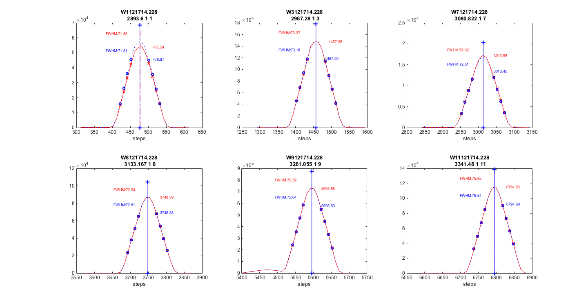 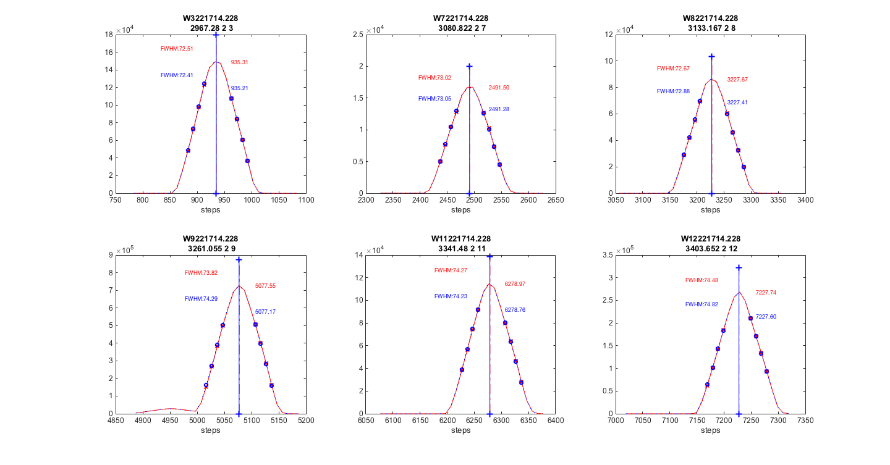 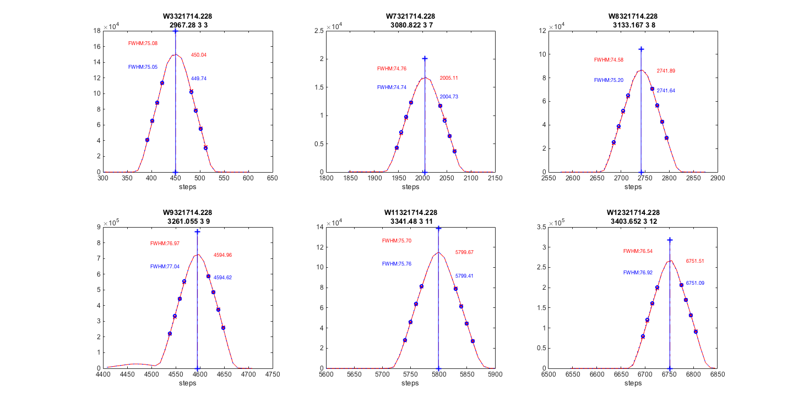 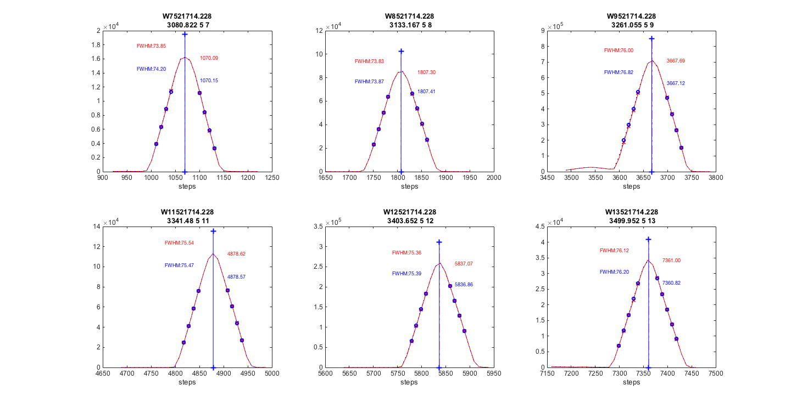 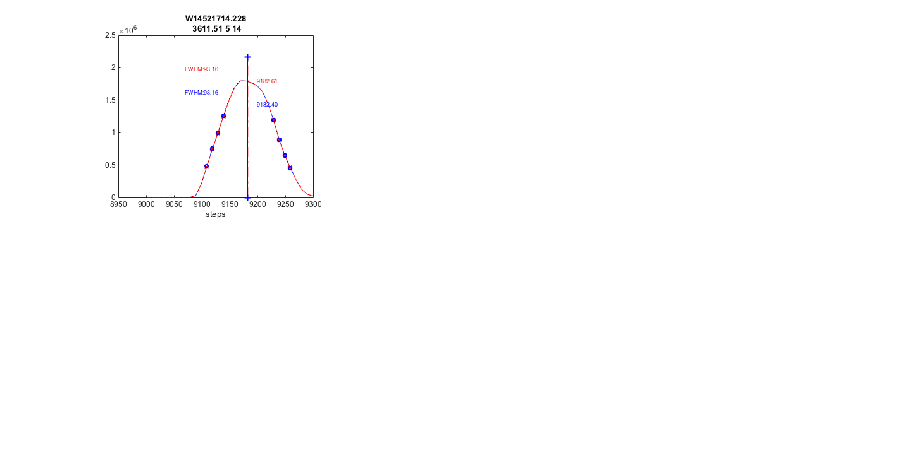 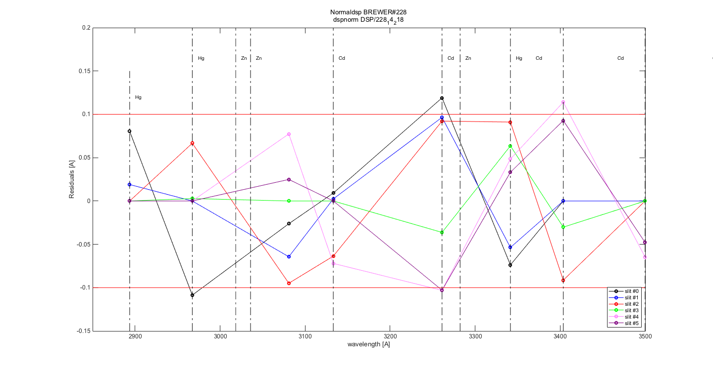 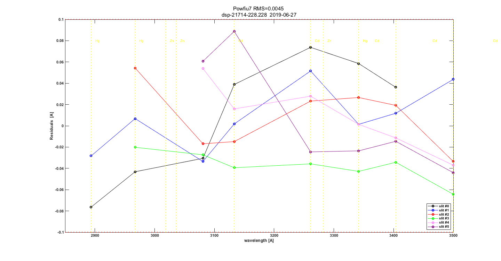 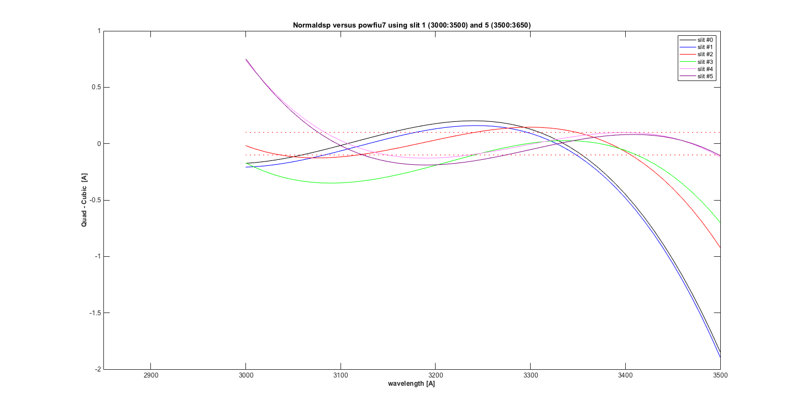 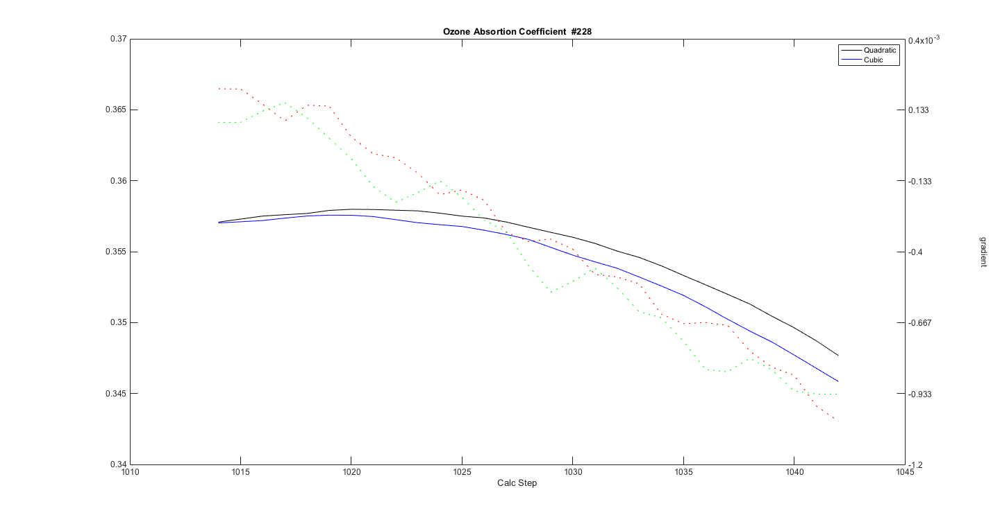 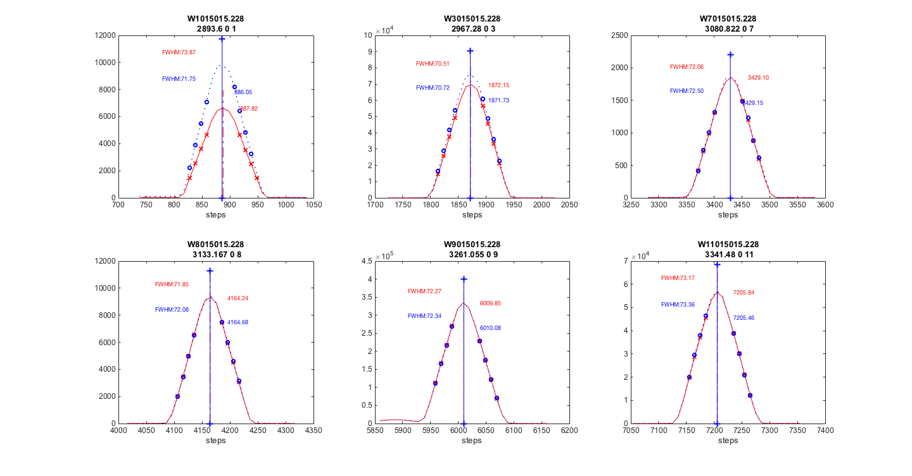
datefile =
736848
now:W1015317.228
now:W3015317.228
now:W7015317.228
now:W8015317.228
now:W9015317.228
now:W11015317.228
now:W12015317.228
now:W1115317.228
now:W3115317.228
now:W7115317.228
now:W8115317.228
now:W9115317.228
now:W11115317.228
now:W12115317.228
now:W13115317.228
now:W3215317.228
now:W7215317.228
now:W8215317.228
now:W9215317.228
now:W11215317.228
now:W12215317.228
now:W13215317.228
now:W3315317.228
now:W7315317.228
now:W8315317.228
now:W9315317.228
now:W11315317.228
now:W12315317.228
now:W13315317.228
now:W7415317.228
now:W8415317.228
now:W9415317.228
now:W11415317.228
now:W12415317.228
now:W13415317.228
now:W7515317.228
now:W8515317.228
now:W9515317.228
now:W11515317.228
now:W12515317.228
now:W13515317.228
now:W14515317.228
lines_dsp_15217__228
saving alldsp to DSP/228_17_153/alldsp_15217_228.228
eliminamos la linea slit 5 3261.055000 -0.139068
eliminamos la linea slit 3 3499.952000 -0.120188
eliminamos la linea slit 2 3499.952000 -0.176643
saving normaldsp to DSP/228_17_153/dspnorm_15217_228.228 as brewer compatible file
Use polyval(pwl(2,:),wl) for calculating normal wavelengths
Saving ozonecoeffs to DSP/228_17_153/opos15217_228.228
1025 WL(A) 3031.90 3063.04 3100.48 3134.83 3167.76 3199.76
Res(A) 10.46 10.52 10.37 10.52 10.34 10.19
O3abs(1/cm) 2.5973 1.7809 1.0053 0.6790 0.3742 0.2967 O3: 0.3470
Daumt O3abs(1/cm) 2.6042 1.7757 0.9966 0.6727 0.3671 0.2970 O3: 0.3575
So2abs(1/cm) 3.3993 5.6983 2.3969 1.9311 1.0513 0.6211
Bremen O3abs(1/cm) 2.6081 1.7785 1.0022 0.6821 0.3723 0.2981 O3: 0.3489
Nicolet 1e4*Rayabs(1/cm) 5050.7 4832.0 4584.8 4372.1 4179.9 4003.4 R: 8.6766
Bates(fix) 1e4*Rayabs(1/cm) 0.0 4870.0 4620.0 4410.0 4220.0 4040.0 R: -1.0000
Bodhaine 1e4*Rayabs(1/cm) 5047.2 4830.1 4584.4 4372.8 4181.5 4005.6 R: 8.3121
I0(mW m^-2nm^-1) 11687.10 9372.36 7255.40 4901.14 4037.33 3208.09 ETC: 1376
Ozone offset due to Rayleigh (RayCOeff/O3Coeff): -2.5 DU
Ozone offset due to Rayleigh (Bodhaine): -2.7 DU
Ratio Ozone for So2(A3)= 1.1587, So2/O3(A2)= 2.8223
O3 factor from Bass & Paur to Daumont = 0.9704
O3 factor from Bass & Paur to Bremen = 0.9945
1026 WL(A) 3031.98 3063.11 3100.56 3134.90 3167.83 3199.83
Res(A) 10.46 10.52 10.37 10.52 10.34 10.19
O3abs(1/cm) 2.5948 1.7793 1.0050 0.6787 0.3743 0.2963 O3: 0.3460
Daumt O3abs(1/cm) 2.6017 1.7743 0.9963 0.6725 0.3671 0.2967 O3: 0.3567
So2abs(1/cm) 3.3834 5.7207 2.4050 1.9190 1.0526 0.6190
Bremen O3abs(1/cm) 2.6056 1.7769 1.0019 0.6819 0.3724 0.2978 O3: 0.3480
Nicolet 1e4*Rayabs(1/cm) 5050.2 4831.6 4584.4 4371.7 4179.5 4003.0 R: 8.6735
Bates(fix) 1e4*Rayabs(1/cm) 0.0 4870.0 4620.0 4410.0 4220.0 4040.0 R: -1.0000
Bodhaine 1e4*Rayabs(1/cm) 5046.7 4829.6 4583.9 4372.4 4181.1 4005.3 R: 8.3072
I0(mW m^-2nm^-1) 11680.04 9365.48 7238.91 4896.61 4026.31 3201.77 ETC: 1376
Ozone offset due to Rayleigh (RayCOeff/O3Coeff): -2.5 DU
Ozone offset due to Rayleigh (Bodhaine): -2.7 DU
Ratio Ozone for So2(A3)= 1.1556, So2/O3(A2)= 2.8386
O3 factor from Bass & Paur to Daumont = 0.9700
O3 factor from Bass & Paur to Bremen = 0.9942
1027 WL(A) 3032.05 3063.18 3100.63 3134.97 3167.90 3199.89
Res(A) 10.46 10.52 10.37 10.52 10.34 10.19
O3abs(1/cm) 2.5923 1.7778 1.0048 0.6784 0.3744 0.2959 O3: 0.3450
Daumt O3abs(1/cm) 2.5991 1.7728 0.9960 0.6724 0.3672 0.2963 O3: 0.3558
So2abs(1/cm) 3.3685 5.7419 2.4130 1.9071 1.0540 0.6168
Bremen O3abs(1/cm) 2.6032 1.7754 1.0016 0.6817 0.3724 0.2974 O3: 0.3471
Nicolet 1e4*Rayabs(1/cm) 5049.6 4831.1 4583.9 4371.3 4179.1 4002.6 R: 8.6705
Bates(fix) 1e4*Rayabs(1/cm) 0.0 4870.0 4620.0 4410.0 4220.0 4040.0 R: -1.0000
Bodhaine 1e4*Rayabs(1/cm) 5046.2 4829.1 4583.4 4372.0 4180.7 4004.9 R: 8.3064
I0(mW m^-2nm^-1) 11672.99 9358.62 7222.92 4892.08 4015.31 3195.27 ETC: 1375
Ozone offset due to Rayleigh (RayCOeff/O3Coeff): -2.5 DU
Ozone offset due to Rayleigh (Bodhaine): -2.7 DU
Ratio Ozone for So2(A3)= 1.1524, So2/O3(A2)= 2.8541
O3 factor from Bass & Paur to Daumont = 0.9696
O3 factor from Bass & Paur to Bremen = 0.9940
1028 WL(A) 3032.12 3063.25 3100.70 3135.04 3167.97 3199.96
Res(A) 10.46 10.52 10.37 10.52 10.34 10.19
O3abs(1/cm) 2.5898 1.7762 1.0045 0.6780 0.3744 0.2954 O3: 0.3439
Daumt O3abs(1/cm) 2.5967 1.7713 0.9957 0.6723 0.3672 0.2960 O3: 0.3549
So2abs(1/cm) 3.3539 5.7609 2.4211 1.8952 1.0553 0.6145
Bremen O3abs(1/cm) 2.6008 1.7738 1.0013 0.6815 0.3725 0.2971 O3: 0.3461
Nicolet 1e4*Rayabs(1/cm) 5049.1 4830.6 4583.5 4370.9 4178.7 4002.2 R: 8.6674
Bates(fix) 1e4*Rayabs(1/cm) 0.0 4870.0 4620.0 4410.0 4220.0 4040.0 R: -1.0000
Bodhaine 1e4*Rayabs(1/cm) 5045.7 4828.6 4583.0 4371.5 4180.3 4004.5 R: 8.3051
I0(mW m^-2nm^-1) 11665.95 9351.77 7206.40 4887.56 4004.35 3184.73 ETC: 1367
Ozone offset due to Rayleigh (RayCOeff/O3Coeff): -2.5 DU
Ozone offset due to Rayleigh (Bodhaine): -2.7 DU
Ratio Ozone for So2(A3)= 1.1488, So2/O3(A2)= 2.8684
O3 factor from Bass & Paur to Daumont = 0.9690
O3 factor from Bass & Paur to Bremen = 0.9936
1029 WL(A) 3032.20 3063.33 3100.77 3135.11 3168.04 3200.03
Res(A) 10.46 10.52 10.37 10.52 10.34 10.19
O3abs(1/cm) 2.5872 1.7745 1.0042 0.6777 0.3745 0.2949 O3: 0.3427
Daumt O3abs(1/cm) 2.5942 1.7699 0.9954 0.6721 0.3673 0.2956 O3: 0.3539
So2abs(1/cm) 3.3392 5.7797 2.4298 1.8833 1.0566 0.6122
Bremen O3abs(1/cm) 2.5984 1.7722 1.0010 0.6813 0.3726 0.2967 O3: 0.3451
Nicolet 1e4*Rayabs(1/cm) 5048.6 4830.1 4583.0 4370.4 4178.3 4001.9 R: 8.6644
Bates(fix) 1e4*Rayabs(1/cm) 0.0 4870.0 4620.0 4410.0 4220.0 4040.0 R: -1.0000
Bodhaine 1e4*Rayabs(1/cm) 5045.1 4828.1 4582.5 4371.1 4179.9 4004.2 R: 8.2988
I0(mW m^-2nm^-1) 11658.92 9344.92 7188.09 4883.04 3993.40 3173.37 ETC: 1356
Ozone offset due to Rayleigh (RayCOeff/O3Coeff): -2.5 DU
Ozone offset due to Rayleigh (Bodhaine): -2.7 DU
Ratio Ozone for So2(A3)= 1.1451, So2/O3(A2)= 2.8830
O3 factor from Bass & Paur to Daumont = 0.9686
O3 factor from Bass & Paur to Bremen = 0.9933
1030 WL(A) 3032.27 3063.40 3100.84 3135.18 3168.11 3200.10
Res(A) 10.46 10.52 10.37 10.52 10.34 10.19
O3abs(1/cm) 2.5848 1.7727 1.0040 0.6774 0.3746 0.2944 O3: 0.3416
Daumt O3abs(1/cm) 2.5918 1.7683 0.9951 0.6719 0.3674 0.2953 O3: 0.3528
So2abs(1/cm) 3.3256 5.7985 2.4387 1.8712 1.0579 0.6100
Bremen O3abs(1/cm) 2.5960 1.7706 1.0007 0.6810 0.3727 0.2963 O3: 0.3440
Nicolet 1e4*Rayabs(1/cm) 5048.1 4829.6 4582.6 4370.0 4177.9 4001.5 R: 8.6614
Bates(fix) 1e4*Rayabs(1/cm) 0.0 4870.0 4620.0 4410.0 4220.0 4040.0 R: -1.0000
Bodhaine 1e4*Rayabs(1/cm) 5044.6 4827.6 4582.1 4370.7 4179.5 4003.8 R: 8.2972
I0(mW m^-2nm^-1) 11651.91 9338.09 7169.85 4878.53 3982.49 3162.83 ETC: 1346
Ozone offset due to Rayleigh (RayCOeff/O3Coeff): -2.5 DU
Ozone offset due to Rayleigh (Bodhaine): -2.7 DU
Ratio Ozone for So2(A3)= 1.1414, So2/O3(A2)= 2.8976
O3 factor from Bass & Paur to Daumont = 0.9682
O3 factor from Bass & Paur to Bremen = 0.9931
1031 WL(A) 3032.34 3063.47 3100.91 3135.25 3168.18 3200.17
Res(A) 10.46 10.52 10.37 10.52 10.34 10.19
O3abs(1/cm) 2.5824 1.7710 1.0037 0.6769 0.3747 0.2939 O3: 0.3404
Daumt O3abs(1/cm) 2.5894 1.7668 0.9948 0.6716 0.3675 0.2949 O3: 0.3517
So2abs(1/cm) 3.3133 5.8163 2.4476 1.8592 1.0591 0.6076
Bremen O3abs(1/cm) 2.5937 1.7690 1.0004 0.6808 0.3728 0.2959 O3: 0.3428
Nicolet 1e4*Rayabs(1/cm) 5047.5 4829.1 4582.1 4369.6 4177.5 4001.1 R: 8.6583
Bates(fix) 1e4*Rayabs(1/cm) 0.0 4870.0 4620.0 4410.0 4220.0 4040.0 R: -1.0000
Bodhaine 1e4*Rayabs(1/cm) 5044.1 4827.1 4581.6 4370.3 4179.1 4003.4 R: 8.2974
I0(mW m^-2nm^-1) 11644.91 9331.27 7151.69 4874.02 3971.60 3158.61 ETC: 1347
Ozone offset due to Rayleigh (RayCOeff/O3Coeff): -2.5 DU
Ozone offset due to Rayleigh (Bodhaine): -2.7 DU
Ratio Ozone for So2(A3)= 1.1377, So2/O3(A2)= 2.9117
O3 factor from Bass & Paur to Daumont = 0.9679
O3 factor from Bass & Paur to Bremen = 0.9929
1032 WL(A) 3032.41 3063.54 3100.98 3135.32 3168.25 3200.24
Res(A) 10.45 10.52 10.37 10.52 10.34 10.19
O3abs(1/cm) 2.5801 1.7693 1.0033 0.6764 0.3748 0.2933 O3: 0.3391
Daumt O3abs(1/cm) 2.5870 1.7652 0.9945 0.6714 0.3676 0.2944 O3: 0.3506
So2abs(1/cm) 3.3012 5.8317 2.4564 1.8473 1.0604 0.6052
Bremen O3abs(1/cm) 2.5914 1.7673 1.0001 0.6804 0.3730 0.2955 O3: 0.3417
Nicolet 1e4*Rayabs(1/cm) 5047.0 4828.6 4581.6 4369.2 4177.1 4000.8 R: 8.6553
Bates(fix) 1e4*Rayabs(1/cm) 0.0 4870.0 4620.0 4410.0 4220.0 4040.0 R: -1.0000
Bodhaine 1e4*Rayabs(1/cm) 5043.6 4826.6 4581.2 4369.8 4178.7 4003.1 R: 8.2902
I0(mW m^-2nm^-1) 11637.91 9324.45 7133.61 4872.60 3960.74 3154.53 ETC: 1346
Ozone offset due to Rayleigh (RayCOeff/O3Coeff): -2.6 DU
Ozone offset due to Rayleigh (Bodhaine): -2.7 DU
Ratio Ozone for So2(A3)= 1.1336, So2/O3(A2)= 2.9244
O3 factor from Bass & Paur to Daumont = 0.9673
O3 factor from Bass & Paur to Bremen = 0.9925
1033 WL(A) 3032.49 3063.62 3101.06 3135.39 3168.32 3200.31
Res(A) 10.45 10.52 10.37 10.52 10.34 10.19
O3abs(1/cm) 2.5777 1.7676 1.0030 0.6759 0.3750 0.2928 O3: 0.3378
Daumt O3abs(1/cm) 2.5846 1.7637 0.9942 0.6711 0.3677 0.2940 O3: 0.3494
So2abs(1/cm) 3.2891 5.8466 2.4658 1.8354 1.0616 0.6029
Bremen O3abs(1/cm) 2.5891 1.7656 0.9998 0.6801 0.3731 0.2950 O3: 0.3404
Nicolet 1e4*Rayabs(1/cm) 5046.5 4828.1 4581.2 4368.7 4176.7 4000.4 R: 8.6523
Bates(fix) 1e4*Rayabs(1/cm) 0.0 4870.0 4620.0 4410.0 4220.0 4040.0 R: -1.0000
Bodhaine 1e4*Rayabs(1/cm) 5043.0 4826.1 4580.7 4369.4 4178.3 4002.7 R: 8.2880
I0(mW m^-2nm^-1) 11630.93 9317.65 7115.60 4871.45 3949.91 3150.56 ETC: 1346
Ozone offset due to Rayleigh (RayCOeff/O3Coeff): -2.6 DU
Ozone offset due to Rayleigh (Bodhaine): -2.7 DU
Ratio Ozone for So2(A3)= 1.1295, So2/O3(A2)= 2.9369
O3 factor from Bass & Paur to Daumont = 0.9668
O3 factor from Bass & Paur to Bremen = 0.9923
1034 WL(A) 3032.56 3063.69 3101.13 3135.46 3168.39 3200.38
Res(A) 10.45 10.52 10.37 10.52 10.34 10.19
O3abs(1/cm) 2.5753 1.7659 1.0027 0.6753 0.3751 0.2922 O3: 0.3365
Daumt O3abs(1/cm) 2.5823 1.7621 0.9938 0.6708 0.3679 0.2935 O3: 0.3481
So2abs(1/cm) 3.2779 5.8616 2.4754 1.8232 1.0628 0.6004
Bremen O3abs(1/cm) 2.5868 1.7639 0.9994 0.6797 0.3732 0.2945 O3: 0.3392
Nicolet 1e4*Rayabs(1/cm) 5045.9 4827.6 4580.7 4368.3 4176.3 4000.0 R: 8.6492
Bates(fix) 1e4*Rayabs(1/cm) 0.0 4870.0 4620.0 4410.0 4220.0 4040.0 R: -1.0000
Bodhaine 1e4*Rayabs(1/cm) 5042.5 4825.6 4580.3 4369.0 4177.9 4002.3 R: 8.2873
I0(mW m^-2nm^-1) 11623.96 9310.86 7097.66 4870.32 3939.10 3146.71 ETC: 1346
Ozone offset due to Rayleigh (RayCOeff/O3Coeff): -2.6 DU
Ozone offset due to Rayleigh (Bodhaine): -2.8 DU
Ratio Ozone for So2(A3)= 1.1254, So2/O3(A2)= 2.9492
O3 factor from Bass & Paur to Daumont = 0.9666
O3 factor from Bass & Paur to Bremen = 0.9922
1035 WL(A) 3032.63 3063.76 3101.20 3135.54 3168.46 3200.45
Res(A) 10.45 10.52 10.37 10.52 10.34 10.19
O3abs(1/cm) 2.5729 1.7640 1.0023 0.6748 0.3753 0.2916 O3: 0.3352
Daumt O3abs(1/cm) 2.5800 1.7604 0.9935 0.6704 0.3680 0.2931 O3: 0.3469
So2abs(1/cm) 3.2682 5.8759 2.4851 1.8113 1.0640 0.5980
Bremen O3abs(1/cm) 2.5845 1.7622 0.9991 0.6793 0.3734 0.2940 O3: 0.3378
Nicolet 1e4*Rayabs(1/cm) 5045.4 4827.1 4580.3 4367.9 4176.0 3999.7 R: 8.6462
Bates(fix) 1e4*Rayabs(1/cm) 0.0 4870.0 4620.0 4410.0 4220.0 4040.0 R: -1.0000
Bodhaine 1e4*Rayabs(1/cm) 5042.0 4825.2 4579.8 4368.6 4177.5 4002.0 R: 8.2834
I0(mW m^-2nm^-1) 11617.00 9304.08 7079.79 4869.23 3928.32 3142.97 ETC: 1346
Ozone offset due to Rayleigh (RayCOeff/O3Coeff): -2.6 DU
Ozone offset due to Rayleigh (Bodhaine): -2.8 DU
Ratio Ozone for So2(A3)= 1.1211, So2/O3(A2)= 2.9621
O3 factor from Bass & Paur to Daumont = 0.9663
O3 factor from Bass & Paur to Bremen = 0.9920
saving powfiu7 to DSP/228_17_153/dsp_15217_228.228
freecoef =
4
freecoef =
9
freecoef =
9
freecoef =
9
freecoef =
9
freecoef =
9
freecoef =
9
freecoef =
9
freecoef =
9
freecoef =
9
saving data to file:DSP/228_17_153/dsp_15217_228.228
Use brstps2 to calculate steps and wavelengths
Saving ozonecoeffs to DSP/228_17_153/opos_pow7_15217_228.228
1025 WL(A) 3032.03 3063.10 3100.52 3134.95 3167.86 3199.80
Res(A) 10.45 10.51 10.37 10.52 10.35 10.19
O3abs(1/cm) 2.5930 1.7795 1.0052 0.6784 0.3743 0.2965 O3: 0.3464
Daumt O3abs(1/cm) 2.5998 1.7745 0.9965 0.6725 0.3672 0.2968 O3: 0.3570
So2abs(1/cm) 3.3723 5.7184 2.4008 1.9101 1.0532 0.6197
Bremen O3abs(1/cm) 2.6038 1.7772 1.0021 0.6818 0.3724 0.2979 O3: 0.3484
Nicolet 1e4*Rayabs(1/cm) 5049.8 4831.6 4584.6 4371.4 4179.3 4003.1 R: 9.6677
Bates(fix) 1e4*Rayabs(1/cm) 0.0 4870.0 4620.0 4410.0 4220.0 4040.0 R: -1.0000
Bodhaine 1e4*Rayabs(1/cm) 5046.3 4829.6 4584.1 4372.1 4180.9 4005.4 R: 9.3011
I0(mW m^-2nm^-1) 11675.00 9366.27 7247.55 4893.21 4021.59 3203.96 ETC: 1400
Ozone offset due to Rayleigh (RayCOeff/O3Coeff): -2.8 DU
Ozone offset due to Rayleigh (Bodhaine): -3.0 DU
Ratio Ozone for So2(A3)= 1.1561, So2/O3(A2)= 2.8355
O3 factor from Bass & Paur to Daumont = 0.9703
O3 factor from Bass & Paur to Bremen = 0.9944
1026 WL(A) 3032.10 3063.17 3100.59 3135.02 3167.93 3199.87
Res(A) 10.45 10.51 10.37 10.52 10.35 10.19
O3abs(1/cm) 2.5904 1.7780 1.0049 0.6781 0.3744 0.2960 O3: 0.3454
Daumt O3abs(1/cm) 2.5973 1.7730 0.9962 0.6723 0.3672 0.2965 O3: 0.3561
So2abs(1/cm) 3.3576 5.7400 2.4089 1.8982 1.0545 0.6176
Bremen O3abs(1/cm) 2.6014 1.7756 1.0018 0.6816 0.3725 0.2976 O3: 0.3474
Nicolet 1e4*Rayabs(1/cm) 5049.3 4831.1 4584.2 4371.0 4178.9 4002.7 R: 9.6653
Bates(fix) 1e4*Rayabs(1/cm) 0.0 4870.0 4620.0 4410.0 4220.0 4040.0 R: -1.0000
Bodhaine 1e4*Rayabs(1/cm) 5045.8 4829.1 4583.7 4371.6 4180.5 4005.0 R: 9.2932
I0(mW m^-2nm^-1) 11667.95 9359.40 7231.30 4888.68 4010.62 3197.52 ETC: 1399
Ozone offset due to Rayleigh (RayCOeff/O3Coeff): -2.8 DU
Ozone offset due to Rayleigh (Bodhaine): -3.0 DU
Ratio Ozone for So2(A3)= 1.1529, So2/O3(A2)= 2.8513
O3 factor from Bass & Paur to Daumont = 0.9700
O3 factor from Bass & Paur to Bremen = 0.9943
1027 WL(A) 3032.17 3063.25 3100.66 3135.09 3168.00 3199.94
Res(A) 10.45 10.51 10.37 10.52 10.35 10.19
O3abs(1/cm) 2.5879 1.7764 1.0046 0.6778 0.3745 0.2956 O3: 0.3444
Daumt O3abs(1/cm) 2.5949 1.7716 0.9959 0.6721 0.3673 0.2961 O3: 0.3552
So2abs(1/cm) 3.3430 5.7591 2.4169 1.8863 1.0558 0.6153
Bremen O3abs(1/cm) 2.5990 1.7740 1.0015 0.6814 0.3726 0.2972 O3: 0.3465
Nicolet 1e4*Rayabs(1/cm) 5048.7 4830.6 4583.7 4370.5 4178.5 4002.4 R: 9.6629
Bates(fix) 1e4*Rayabs(1/cm) 0.0 4870.0 4620.0 4410.0 4220.0 4040.0 R: -1.0000
Bodhaine 1e4*Rayabs(1/cm) 5045.3 4828.7 4583.2 4371.2 4180.1 4004.7 R: 9.2939
I0(mW m^-2nm^-1) 11660.92 9352.54 7215.54 4884.16 3999.67 3188.74 ETC: 1395
Ozone offset due to Rayleigh (RayCOeff/O3Coeff): -2.8 DU
Ozone offset due to Rayleigh (Bodhaine): -3.0 DU
Ratio Ozone for So2(A3)= 1.1495, So2/O3(A2)= 2.8654
O3 factor from Bass & Paur to Daumont = 0.9695
O3 factor from Bass & Paur to Bremen = 0.9940
1028 WL(A) 3032.25 3063.32 3100.73 3135.17 3168.07 3200.01
Res(A) 10.45 10.51 10.37 10.52 10.35 10.19
O3abs(1/cm) 2.5854 1.7747 1.0044 0.6774 0.3746 0.2951 O3: 0.3432
Daumt O3abs(1/cm) 2.5924 1.7701 0.9956 0.6719 0.3674 0.2958 O3: 0.3542
So2abs(1/cm) 3.3289 5.7779 2.4252 1.8742 1.0571 0.6130
Bremen O3abs(1/cm) 2.5967 1.7724 1.0012 0.6811 0.3727 0.2969 O3: 0.3454
Nicolet 1e4*Rayabs(1/cm) 5048.2 4830.1 4583.2 4370.1 4178.1 4002.0 R: 9.6606
Bates(fix) 1e4*Rayabs(1/cm) 0.0 4870.0 4620.0 4410.0 4220.0 4040.0 R: -1.0000
Bodhaine 1e4*Rayabs(1/cm) 5044.8 4828.2 4582.8 4370.8 4179.7 4004.3 R: 9.2958
I0(mW m^-2nm^-1) 11653.90 9345.69 7197.69 4879.65 3988.74 3177.36 ETC: 1384
Ozone offset due to Rayleigh (RayCOeff/O3Coeff): -2.8 DU
Ozone offset due to Rayleigh (Bodhaine): -3.0 DU
Ratio Ozone for So2(A3)= 1.1457, So2/O3(A2)= 2.8799
O3 factor from Bass & Paur to Daumont = 0.9690
O3 factor from Bass & Paur to Bremen = 0.9936
1029 WL(A) 3032.32 3063.39 3100.80 3135.24 3168.14 3200.08
Res(A) 10.45 10.51 10.37 10.52 10.35 10.18
O3abs(1/cm) 2.5831 1.7730 1.0041 0.6771 0.3746 0.2945 O3: 0.3421
Daumt O3abs(1/cm) 2.5900 1.7685 0.9953 0.6717 0.3675 0.2954 O3: 0.3532
So2abs(1/cm) 3.3163 5.7967 2.4341 1.8622 1.0584 0.6108
Bremen O3abs(1/cm) 2.5943 1.7708 1.0009 0.6808 0.3728 0.2965 O3: 0.3444
Nicolet 1e4*Rayabs(1/cm) 5047.7 4829.6 4582.8 4369.7 4177.8 4001.6 R: 9.6582
Bates(fix) 1e4*Rayabs(1/cm) 0.0 4870.0 4620.0 4410.0 4220.0 4040.0 R: -1.0000
Bodhaine 1e4*Rayabs(1/cm) 5044.2 4827.7 4582.3 4370.4 4179.3 4003.9 R: 9.2880
I0(mW m^-2nm^-1) 11646.89 9338.86 7179.41 4875.14 3977.85 3166.01 ETC: 1373
Ozone offset due to Rayleigh (RayCOeff/O3Coeff): -2.8 DU
Ozone offset due to Rayleigh (Bodhaine): -3.0 DU
Ratio Ozone for So2(A3)= 1.1420, So2/O3(A2)= 2.8947
O3 factor from Bass & Paur to Daumont = 0.9687
O3 factor from Bass & Paur to Bremen = 0.9935
1030 WL(A) 3032.39 3063.46 3100.88 3135.31 3168.21 3200.15
Res(A) 10.45 10.51 10.37 10.52 10.35 10.18
O3abs(1/cm) 2.5807 1.7713 1.0038 0.6765 0.3748 0.2941 O3: 0.3410
Daumt O3abs(1/cm) 2.5876 1.7670 0.9950 0.6714 0.3676 0.2950 O3: 0.3521
So2abs(1/cm) 3.3043 5.8149 2.4430 1.8502 1.0596 0.6085
Bremen O3abs(1/cm) 2.5920 1.7692 1.0006 0.6805 0.3729 0.2961 O3: 0.3432
Nicolet 1e4*Rayabs(1/cm) 5047.2 4829.1 4582.3 4369.3 4177.4 4001.3 R: 9.6559
Bates(fix) 1e4*Rayabs(1/cm) 0.0 4870.0 4620.0 4410.0 4220.0 4040.0 R: -1.0000
Bodhaine 1e4*Rayabs(1/cm) 5043.7 4827.2 4581.9 4369.9 4178.9 4003.6 R: 9.2855
I0(mW m^-2nm^-1) 11639.89 9332.03 7161.21 4872.89 3966.98 3160.14 ETC: 1370
Ozone offset due to Rayleigh (RayCOeff/O3Coeff): -2.8 DU
Ozone offset due to Rayleigh (Bodhaine): -3.0 DU
Ratio Ozone for So2(A3)= 1.1382, So2/O3(A2)= 2.9094
O3 factor from Bass & Paur to Daumont = 0.9683
O3 factor from Bass & Paur to Bremen = 0.9933
1031 WL(A) 3032.47 3063.53 3100.95 3135.38 3168.28 3200.21
Res(A) 10.45 10.51 10.37 10.52 10.35 10.18
O3abs(1/cm) 2.5783 1.7695 1.0035 0.6760 0.3749 0.2935 O3: 0.3397
Daumt O3abs(1/cm) 2.5853 1.7655 0.9947 0.6712 0.3677 0.2946 O3: 0.3510
So2abs(1/cm) 3.2922 5.8303 2.4519 1.8383 1.0609 0.6061
Bremen O3abs(1/cm) 2.5897 1.7675 1.0003 0.6802 0.3730 0.2956 O3: 0.3421
Nicolet 1e4*Rayabs(1/cm) 5046.6 4828.7 4581.9 4368.9 4177.0 4000.9 R: 9.6535
Bates(fix) 1e4*Rayabs(1/cm) 0.0 4870.0 4620.0 4410.0 4220.0 4040.0 R: -1.0000
Bodhaine 1e4*Rayabs(1/cm) 5043.2 4826.7 4581.4 4369.5 4178.5 4003.2 R: 9.2885
I0(mW m^-2nm^-1) 11632.90 9325.21 7143.08 4871.73 3956.13 3156.01 ETC: 1369
Ozone offset due to Rayleigh (RayCOeff/O3Coeff): -2.8 DU
Ozone offset due to Rayleigh (Bodhaine): -3.0 DU
Ratio Ozone for So2(A3)= 1.1341, So2/O3(A2)= 2.9222
O3 factor from Bass & Paur to Daumont = 0.9677
O3 factor from Bass & Paur to Bremen = 0.9929
1032 WL(A) 3032.54 3063.61 3101.02 3135.45 3168.35 3200.28
Res(A) 10.45 10.51 10.37 10.52 10.35 10.18
O3abs(1/cm) 2.5760 1.7678 1.0032 0.6754 0.3751 0.2930 O3: 0.3384
Daumt O3abs(1/cm) 2.5830 1.7639 0.9943 0.6708 0.3678 0.2942 O3: 0.3498
So2abs(1/cm) 3.2805 5.8453 2.4607 1.8263 1.0621 0.6037
Bremen O3abs(1/cm) 2.5874 1.7659 0.9999 0.6798 0.3732 0.2952 O3: 0.3409
Nicolet 1e4*Rayabs(1/cm) 5046.1 4828.2 4581.4 4368.4 4176.6 4000.5 R: 9.6512
Bates(fix) 1e4*Rayabs(1/cm) 0.0 4870.0 4620.0 4410.0 4220.0 4040.0 R: -1.0000
Bodhaine 1e4*Rayabs(1/cm) 5042.7 4826.2 4581.0 4369.1 4178.1 4002.8 R: 9.2829
I0(mW m^-2nm^-1) 11625.92 9318.40 7125.03 4870.60 3945.32 3152.00 ETC: 1368
Ozone offset due to Rayleigh (RayCOeff/O3Coeff): -2.9 DU
Ozone offset due to Rayleigh (Bodhaine): -3.0 DU
Ratio Ozone for So2(A3)= 1.1301, So2/O3(A2)= 2.9346
O3 factor from Bass & Paur to Daumont = 0.9673
O3 factor from Bass & Paur to Bremen = 0.9927
1033 WL(A) 3032.61 3063.68 3101.09 3135.52 3168.42 3200.35
Res(A) 10.45 10.51 10.37 10.52 10.35 10.18
O3abs(1/cm) 2.5736 1.7661 1.0028 0.6749 0.3752 0.2924 O3: 0.3371
Daumt O3abs(1/cm) 2.5807 1.7623 0.9940 0.6705 0.3680 0.2937 O3: 0.3486
So2abs(1/cm) 3.2705 5.8603 2.4704 1.8142 1.0633 0.6013
Bremen O3abs(1/cm) 2.5852 1.7642 0.9996 0.6794 0.3733 0.2947 O3: 0.3396
Nicolet 1e4*Rayabs(1/cm) 5045.6 4827.7 4581.0 4368.0 4176.2 4000.2 R: 9.6488
Bates(fix) 1e4*Rayabs(1/cm) 0.0 4870.0 4620.0 4410.0 4220.0 4040.0 R: -1.0000
Bodhaine 1e4*Rayabs(1/cm) 5042.1 4825.7 4580.5 4368.7 4177.8 4002.5 R: 9.2778
I0(mW m^-2nm^-1) 11618.95 9311.61 7107.05 4869.50 3934.53 3148.11 ETC: 1368
Ozone offset due to Rayleigh (RayCOeff/O3Coeff): -2.9 DU
Ozone offset due to Rayleigh (Bodhaine): -3.0 DU
Ratio Ozone for So2(A3)= 1.1261, So2/O3(A2)= 2.9471
O3 factor from Bass & Paur to Daumont = 0.9671
O3 factor from Bass & Paur to Bremen = 0.9926
1034 WL(A) 3032.69 3063.75 3101.16 3135.59 3168.49 3200.42
Res(A) 10.45 10.51 10.37 10.52 10.35 10.18
O3abs(1/cm) 2.5712 1.7643 1.0025 0.6743 0.3753 0.2919 O3: 0.3358
Daumt O3abs(1/cm) 2.5784 1.7607 0.9937 0.6701 0.3681 0.2932 O3: 0.3473
So2abs(1/cm) 3.2611 5.8749 2.4801 1.8024 1.0645 0.5989
Bremen O3abs(1/cm) 2.5829 1.7625 0.9993 0.6790 0.3735 0.2942 O3: 0.3383
Nicolet 1e4*Rayabs(1/cm) 5045.0 4827.2 4580.5 4367.6 4175.8 3999.8 R: 9.6465
Bates(fix) 1e4*Rayabs(1/cm) 0.0 4870.0 4620.0 4410.0 4220.0 4040.0 R: -1.0000
Bodhaine 1e4*Rayabs(1/cm) 5041.6 4825.2 4580.1 4368.3 4177.4 4002.1 R: 9.2800
I0(mW m^-2nm^-1) 11612.00 9304.82 7089.14 4868.43 3923.76 3144.32 ETC: 1368
Ozone offset due to Rayleigh (RayCOeff/O3Coeff): -2.9 DU
Ozone offset due to Rayleigh (Bodhaine): -3.1 DU
Ratio Ozone for So2(A3)= 1.1219, So2/O3(A2)= 2.9598
O3 factor from Bass & Paur to Daumont = 0.9668
O3 factor from Bass & Paur to Bremen = 0.9925
1035 WL(A) 3032.76 3063.82 3101.23 3135.66 3168.56 3200.49
Res(A) 10.45 10.51 10.37 10.52 10.35 10.18
O3abs(1/cm) 2.5689 1.7623 1.0022 0.6738 0.3755 0.2912 O3: 0.3344
Daumt O3abs(1/cm) 2.5761 1.7590 0.9934 0.6697 0.3682 0.2927 O3: 0.3460
So2abs(1/cm) 3.2518 5.8865 2.4897 1.7905 1.0656 0.5964
Bremen O3abs(1/cm) 2.5807 1.7607 0.9990 0.6786 0.3736 0.2937 O3: 0.3370
Nicolet 1e4*Rayabs(1/cm) 5044.5 4826.7 4580.1 4367.2 4175.4 3999.4 R: 9.6441
Bates(fix) 1e4*Rayabs(1/cm) 0.0 4870.0 4620.0 4410.0 4220.0 4040.0 R: -1.0000
Bodhaine 1e4*Rayabs(1/cm) 5041.1 4824.7 4579.6 4367.8 4177.0 4001.7 R: 9.2767
I0(mW m^-2nm^-1) 11605.05 9298.04 7071.30 4867.38 3913.03 3140.65 ETC: 1368
Ozone offset due to Rayleigh (RayCOeff/O3Coeff): -2.9 DU
Ozone offset due to Rayleigh (Bodhaine): -3.1 DU
Ratio Ozone for So2(A3)= 1.1173, So2/O3(A2)= 2.9708
O3 factor from Bass & Paur to Daumont = 0.9664
O3 factor from Bass & Paur to Bremen = 0.9922
Warning: The EraseMode property is no longer supported and will error in a
future release.
Warning: The EraseMode property is no longer supported and will error in a
future release.
Warning: The EraseMode property is no longer supported and will error in a
future release.
Warning: The EraseMode property is no longer supported and will error in a
future release.
Warning: The EraseMode property is no longer supported and will error in a
future release.
Warning: The EraseMode property is no longer supported and will error in a
future release.
Warning: The EraseMode property is no longer supported and will error in a
future release.
Warning: The EraseMode property is no longer supported and will error in a
future release.
Warning: The EraseMode property is no longer supported and will error in a
future release.
Warning: The EraseMode property is no longer supported and will error in a
future release.
Warning: The EraseMode property is no longer supported and will error in a
future release.
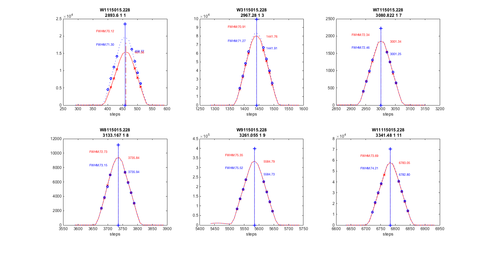 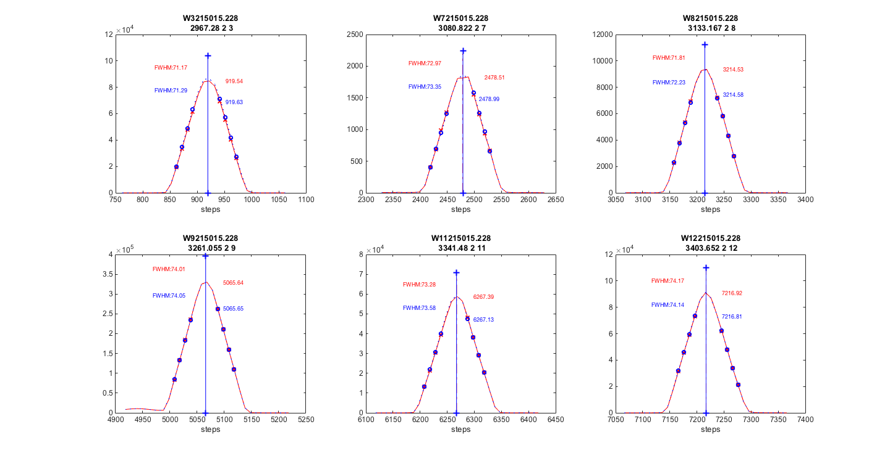 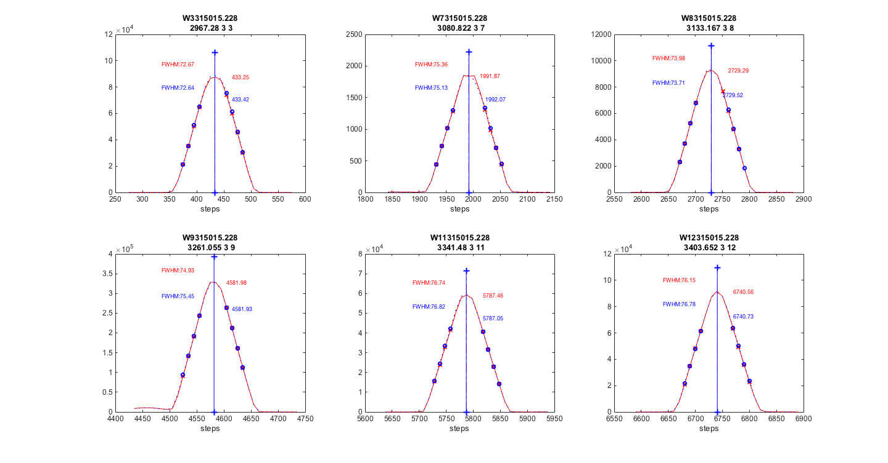 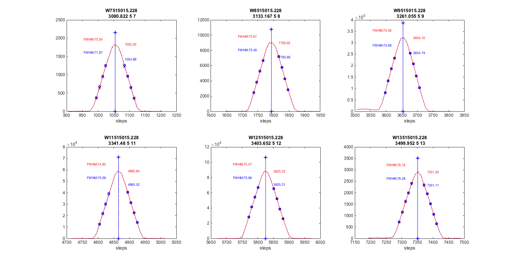 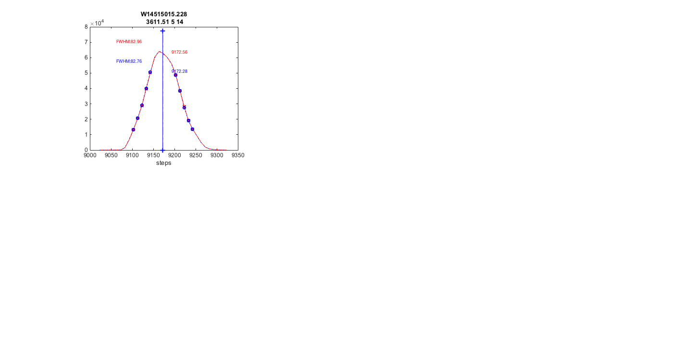 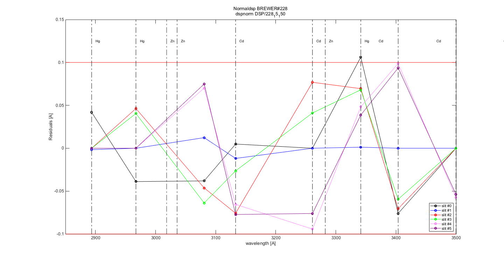 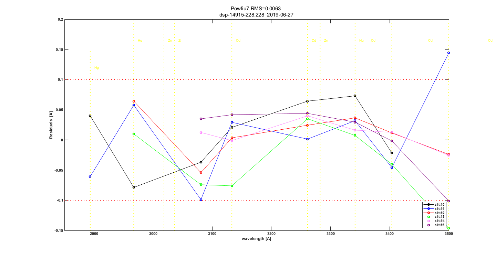 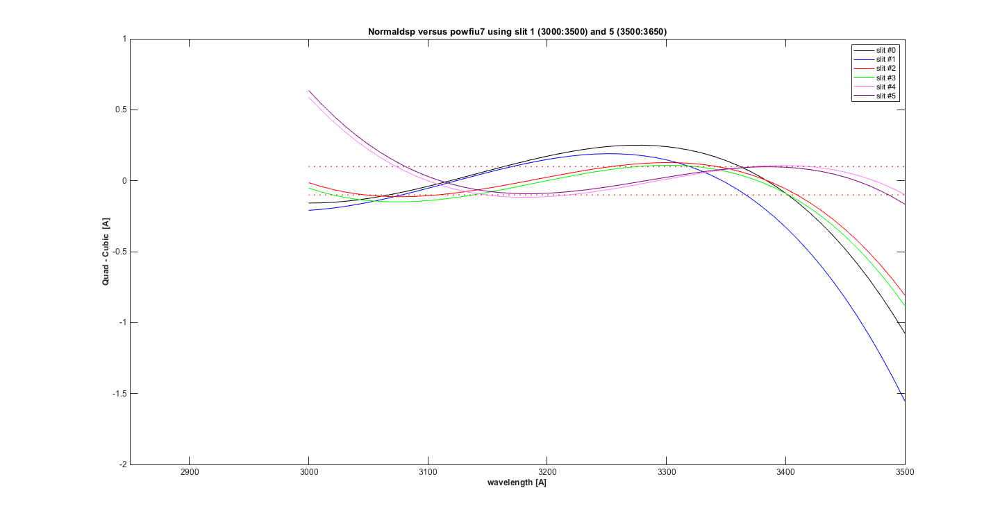 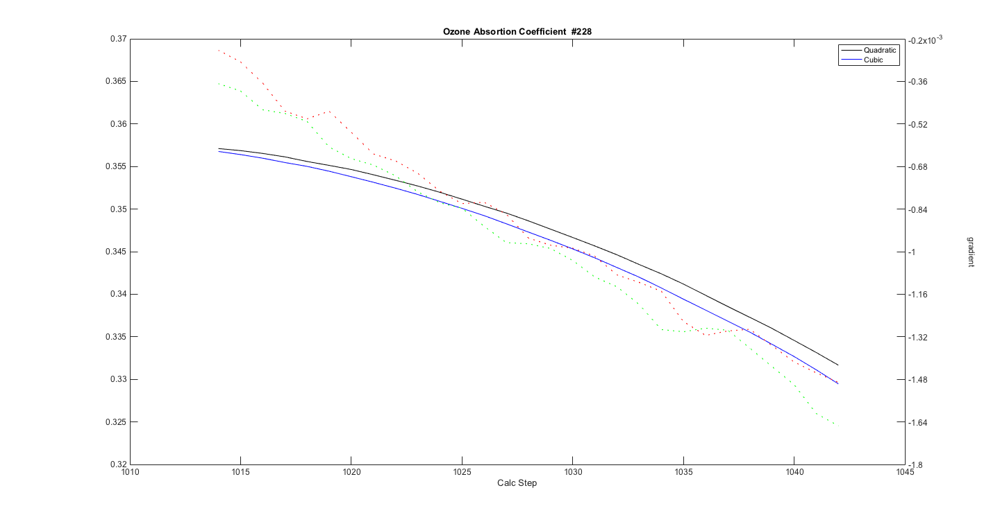 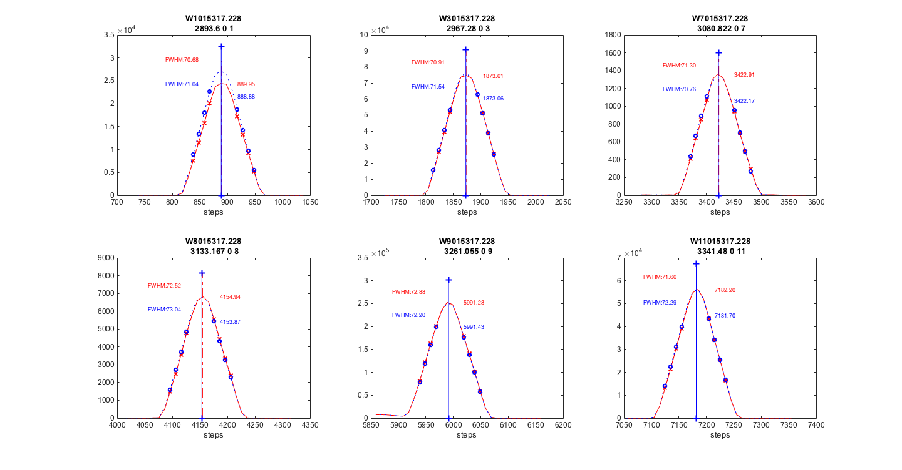
datefile =
736854
now:W1015917.228
now:W3015917.228
now:W7015917.228
now:W8015917.228
now:W9015917.228
now:W11015917.228
now:W12015917.228
now:W1115917.228
Warning: DSP: Not enough or too many points on either side of the maximum of the
line
now:W3115917.228
now:W7115917.228
now:W8115917.228
now:W9115917.228
now:W11115917.228
now:W12115917.228
now:W13115917.228
now:W3215917.228
now:W7215917.228
now:W8215917.228
now:W9215917.228
now:W11215917.228
now:W12215917.228
now:W13215917.228
now:W3315917.228
Warning: DSP: Not enough or too many points on either side of the maximum of the
line
now:W7315917.228
now:W8315917.228
now:W9315917.228
now:W11315917.228
now:W12315917.228
now:W13315917.228
now:W7415917.228
now:W8415917.228
now:W9415917.228
now:W11415917.228
now:W12415917.228
now:W13415917.228
now:W7515917.228
now:W8515917.228
now:W9515917.228
now:W11515917.228
now:W12515917.228
now:W13515917.228
now:W14515917.228
lines_dsp_15817__228
saving alldsp to DSP/228_17_159/alldsp_15817_228.228
eliminamos la linea slit 6 3261.055000 -0.125319
eliminamos la linea slit 5 3261.055000 -0.139588
eliminamos la linea slit 4 3261.055000 -0.124268
eliminamos la linea slit 3 3133.167000 -0.132457
eliminamos la linea slit 2 3499.952000 -0.122795
saving normaldsp to DSP/228_17_159/dspnorm_15817_228.228 as brewer compatible file
Use polyval(pwl(2,:),wl) for calculating normal wavelengths
Saving ozonecoeffs to DSP/228_17_159/opos15817_228.228
1025 WL(A) 3031.90 3063.04 3100.36 3134.80 3167.73 3199.70
Res(A) 10.44 10.46 10.29 10.53 10.36 10.15
O3abs(1/cm) 2.5973 1.7810 1.0058 0.6791 0.3742 0.2972 O3: 0.3482
Daumt O3abs(1/cm) 2.6041 1.7759 0.9971 0.6727 0.3671 0.2973 O3: 0.3586
So2abs(1/cm) 3.3981 5.7024 2.3824 1.9358 1.0508 0.6232
Bremen O3abs(1/cm) 2.6080 1.7786 1.0028 0.6821 0.3723 0.2984 O3: 0.3500
Nicolet 1e4*Rayabs(1/cm) 5050.7 4832.1 4585.6 4372.3 4180.1 4003.7 R: 9.5941
Bates(fix) 1e4*Rayabs(1/cm) 0.0 4870.0 4620.0 4410.0 4220.0 4040.0 R: -1.0000
Bodhaine 1e4*Rayabs(1/cm) 5047.2 4830.1 4585.1 4373.0 4181.6 4006.0 R: 9.2235
I0(mW m^-2nm^-1) 11687.09 9372.00 7294.21 4903.05 4041.59 3211.93 ETC: 1411
Ozone offset due to Rayleigh (RayCOeff/O3Coeff): -2.8 DU
Ozone offset due to Rayleigh (Bodhaine): -2.9 DU
Ratio Ozone for So2(A3)= 1.1604, So2/O3(A2)= 2.8294
O3 factor from Bass & Paur to Daumont = 0.9712
O3 factor from Bass & Paur to Bremen = 0.9950
1026 WL(A) 3031.98 3063.11 3100.43 3134.87 3167.80 3199.76
Res(A) 10.44 10.46 10.29 10.53 10.36 10.15
O3abs(1/cm) 2.5947 1.7795 1.0055 0.6788 0.3743 0.2968 O3: 0.3472
Daumt O3abs(1/cm) 2.6016 1.7744 0.9968 0.6726 0.3671 0.2970 O3: 0.3578
So2abs(1/cm) 3.3824 5.7249 2.3897 1.9238 1.0521 0.6210
Bremen O3abs(1/cm) 2.6055 1.7771 1.0025 0.6819 0.3724 0.2981 O3: 0.3491
Nicolet 1e4*Rayabs(1/cm) 5050.2 4831.6 4585.2 4371.9 4179.7 4003.3 R: 9.5915
Bates(fix) 1e4*Rayabs(1/cm) 0.0 4870.0 4620.0 4410.0 4220.0 4040.0 R: -1.0000
Bodhaine 1e4*Rayabs(1/cm) 5046.7 4829.6 4584.7 4372.5 4181.2 4005.6 R: 9.2196
I0(mW m^-2nm^-1) 11680.01 9365.05 7276.37 4898.53 4030.59 3205.69 ETC: 1409
Ozone offset due to Rayleigh (RayCOeff/O3Coeff): -2.8 DU
Ozone offset due to Rayleigh (Bodhaine): -2.9 DU
Ratio Ozone for So2(A3)= 1.1572, So2/O3(A2)= 2.8459
O3 factor from Bass & Paur to Daumont = 0.9706
O3 factor from Bass & Paur to Bremen = 0.9946
1027 WL(A) 3032.05 3063.18 3100.51 3134.94 3167.87 3199.83
Res(A) 10.44 10.46 10.29 10.53 10.36 10.15
O3abs(1/cm) 2.5922 1.7779 1.0053 0.6785 0.3743 0.2964 O3: 0.3463
Daumt O3abs(1/cm) 2.5991 1.7730 0.9965 0.6724 0.3672 0.2967 O3: 0.3569
So2abs(1/cm) 3.3675 5.7458 2.3977 1.9118 1.0534 0.6188
Bremen O3abs(1/cm) 2.6031 1.7756 1.0022 0.6818 0.3724 0.2978 O3: 0.3483
Nicolet 1e4*Rayabs(1/cm) 5049.6 4831.1 4584.7 4371.5 4179.3 4002.9 R: 9.5888
Bates(fix) 1e4*Rayabs(1/cm) 0.0 4870.0 4620.0 4410.0 4220.0 4040.0 R: -1.0000
Bodhaine 1e4*Rayabs(1/cm) 5046.2 4829.1 4584.2 4372.1 4180.8 4005.2 R: 9.2218
I0(mW m^-2nm^-1) 11672.95 9358.12 7259.10 4894.02 4019.62 3199.28 ETC: 1408
Ozone offset due to Rayleigh (RayCOeff/O3Coeff): -2.8 DU
Ozone offset due to Rayleigh (Bodhaine): -3.0 DU
Ratio Ozone for So2(A3)= 1.1540, So2/O3(A2)= 2.8610
O3 factor from Bass & Paur to Daumont = 0.9702
O3 factor from Bass & Paur to Bremen = 0.9943
1028 WL(A) 3032.12 3063.25 3100.58 3135.01 3167.94 3199.90
Res(A) 10.44 10.46 10.29 10.53 10.36 10.15
O3abs(1/cm) 2.5896 1.7764 1.0050 0.6781 0.3744 0.2959 O3: 0.3453
Daumt O3abs(1/cm) 2.5966 1.7715 0.9963 0.6723 0.3672 0.2964 O3: 0.3560
So2abs(1/cm) 3.3528 5.7651 2.4058 1.9000 1.0548 0.6166
Bremen O3abs(1/cm) 2.6007 1.7740 1.0019 0.6816 0.3725 0.2975 O3: 0.3473
Nicolet 1e4*Rayabs(1/cm) 5049.1 4830.6 4584.2 4371.0 4178.9 4002.6 R: 9.5861
Bates(fix) 1e4*Rayabs(1/cm) 0.0 4870.0 4620.0 4410.0 4220.0 4040.0 R: -1.0000
Bodhaine 1e4*Rayabs(1/cm) 5045.6 4828.6 4583.8 4371.7 4180.4 4004.9 R: 9.2167
I0(mW m^-2nm^-1) 11665.89 9351.20 7242.37 4889.52 4008.68 3192.69 ETC: 1406
Ozone offset due to Rayleigh (RayCOeff/O3Coeff): -2.8 DU
Ozone offset due to Rayleigh (Bodhaine): -3.0 DU
Ratio Ozone for So2(A3)= 1.1507, So2/O3(A2)= 2.8751
O3 factor from Bass & Paur to Daumont = 0.9698
O3 factor from Bass & Paur to Bremen = 0.9941
1029 WL(A) 3032.20 3063.33 3100.65 3135.08 3168.01 3199.97
Res(A) 10.44 10.46 10.29 10.53 10.36 10.15
O3abs(1/cm) 2.5871 1.7747 1.0047 0.6778 0.3745 0.2954 O3: 0.3442
Daumt O3abs(1/cm) 2.5941 1.7700 0.9960 0.6721 0.3673 0.2960 O3: 0.3551
So2abs(1/cm) 3.3381 5.7841 2.4140 1.8882 1.0561 0.6144
Bremen O3abs(1/cm) 2.5983 1.7724 1.0016 0.6814 0.3726 0.2971 O3: 0.3463
Nicolet 1e4*Rayabs(1/cm) 5048.6 4830.1 4583.8 4370.6 4178.5 4002.2 R: 9.5834
Bates(fix) 1e4*Rayabs(1/cm) 0.0 4870.0 4620.0 4410.0 4220.0 4040.0 R: -1.0000
Bodhaine 1e4*Rayabs(1/cm) 5045.1 4828.1 4583.3 4371.3 4180.0 4004.5 R: 9.2102
I0(mW m^-2nm^-1) 11658.85 9344.29 7226.16 4885.02 3997.77 3182.78 ETC: 1399
Ozone offset due to Rayleigh (RayCOeff/O3Coeff): -2.8 DU
Ozone offset due to Rayleigh (Bodhaine): -3.0 DU
Ratio Ozone for So2(A3)= 1.1471, So2/O3(A2)= 2.8895
O3 factor from Bass & Paur to Daumont = 0.9692
O3 factor from Bass & Paur to Bremen = 0.9937
1030 WL(A) 3032.27 3063.40 3100.72 3135.15 3168.08 3200.04
Res(A) 10.44 10.46 10.29 10.53 10.36 10.15
O3abs(1/cm) 2.5847 1.7730 1.0045 0.6774 0.3746 0.2949 O3: 0.3430
Daumt O3abs(1/cm) 2.5917 1.7685 0.9957 0.6719 0.3674 0.2957 O3: 0.3541
So2abs(1/cm) 3.3246 5.8030 2.4222 1.8761 1.0574 0.6121
Bremen O3abs(1/cm) 2.5959 1.7708 1.0013 0.6811 0.3727 0.2968 O3: 0.3453
Nicolet 1e4*Rayabs(1/cm) 5048.0 4829.6 4583.3 4370.2 4178.1 4001.8 R: 9.5808
Bates(fix) 1e4*Rayabs(1/cm) 0.0 4870.0 4620.0 4410.0 4220.0 4040.0 R: -1.0000
Bodhaine 1e4*Rayabs(1/cm) 5044.6 4827.6 4582.9 4370.9 4179.6 4004.1 R: 9.2141
I0(mW m^-2nm^-1) 11651.81 9337.39 7208.29 4880.52 3986.88 3171.29 ETC: 1388
Ozone offset due to Rayleigh (RayCOeff/O3Coeff): -2.8 DU
Ozone offset due to Rayleigh (Bodhaine): -3.0 DU
Ratio Ozone for So2(A3)= 1.1434, So2/O3(A2)= 2.9043
O3 factor from Bass & Paur to Daumont = 0.9687
O3 factor from Bass & Paur to Bremen = 0.9934
1031 WL(A) 3032.34 3063.47 3100.79 3135.22 3168.15 3200.11
Res(A) 10.44 10.46 10.29 10.53 10.36 10.15
O3abs(1/cm) 2.5824 1.7712 1.0042 0.6771 0.3747 0.2944 O3: 0.3419
Daumt O3abs(1/cm) 2.5893 1.7670 0.9954 0.6717 0.3675 0.2953 O3: 0.3531
So2abs(1/cm) 3.3122 5.8207 2.4308 1.8640 1.0586 0.6098
Bremen O3abs(1/cm) 2.5936 1.7692 1.0010 0.6808 0.3728 0.2964 O3: 0.3442
Nicolet 1e4*Rayabs(1/cm) 5047.5 4829.1 4582.9 4369.8 4177.7 4001.5 R: 9.5781
Bates(fix) 1e4*Rayabs(1/cm) 0.0 4870.0 4620.0 4410.0 4220.0 4040.0 R: -1.0000
Bodhaine 1e4*Rayabs(1/cm) 5044.1 4827.1 4582.4 4370.4 4179.3 4003.8 R: 9.2096
I0(mW m^-2nm^-1) 11644.79 9330.50 7189.69 4876.03 3976.02 3163.45 ETC: 1382
Ozone offset due to Rayleigh (RayCOeff/O3Coeff): -2.8 DU
Ozone offset due to Rayleigh (Bodhaine): -3.0 DU
Ratio Ozone for So2(A3)= 1.1397, So2/O3(A2)= 2.9182
O3 factor from Bass & Paur to Daumont = 0.9685
O3 factor from Bass & Paur to Bremen = 0.9934
1032 WL(A) 3032.42 3063.54 3100.86 3135.30 3168.22 3200.18
Res(A) 10.44 10.46 10.29 10.53 10.36 10.15
O3abs(1/cm) 2.5800 1.7695 1.0040 0.6766 0.3748 0.2939 O3: 0.3408
Daumt O3abs(1/cm) 2.5869 1.7654 0.9951 0.6714 0.3676 0.2949 O3: 0.3520
So2abs(1/cm) 3.3001 5.8362 2.4398 1.8521 1.0599 0.6075
Bremen O3abs(1/cm) 2.5913 1.7675 1.0007 0.6805 0.3729 0.2959 O3: 0.3431
Nicolet 1e4*Rayabs(1/cm) 5047.0 4828.6 4582.4 4369.3 4177.3 4001.1 R: 9.5754
Bates(fix) 1e4*Rayabs(1/cm) 0.0 4870.0 4620.0 4410.0 4220.0 4040.0 R: -1.0000
Bodhaine 1e4*Rayabs(1/cm) 5043.6 4826.6 4582.0 4370.0 4178.9 4003.4 R: 9.2031
I0(mW m^-2nm^-1) 11637.78 9323.62 7171.17 4872.98 3965.19 3159.21 ETC: 1382
Ozone offset due to Rayleigh (RayCOeff/O3Coeff): -2.8 DU
Ozone offset due to Rayleigh (Bodhaine): -3.0 DU
Ratio Ozone for So2(A3)= 1.1358, So2/O3(A2)= 2.9308
O3 factor from Bass & Paur to Daumont = 0.9682
O3 factor from Bass & Paur to Bremen = 0.9932
1033 WL(A) 3032.49 3063.61 3100.93 3135.37 3168.29 3200.25
Res(A) 10.44 10.46 10.29 10.53 10.36 10.15
O3abs(1/cm) 2.5776 1.7677 1.0037 0.6760 0.3750 0.2934 O3: 0.3394
Daumt O3abs(1/cm) 2.5846 1.7638 0.9948 0.6712 0.3677 0.2945 O3: 0.3508
So2abs(1/cm) 3.2881 5.8513 2.4488 1.8403 1.0611 0.6051
Bremen O3abs(1/cm) 2.5890 1.7658 1.0004 0.6802 0.3731 0.2955 O3: 0.3419
Nicolet 1e4*Rayabs(1/cm) 5046.5 4828.1 4582.0 4368.9 4176.9 4000.7 R: 9.5728
Bates(fix) 1e4*Rayabs(1/cm) 0.0 4870.0 4620.0 4410.0 4220.0 4040.0 R: -1.0000
Bodhaine 1e4*Rayabs(1/cm) 5043.0 4826.2 4581.5 4369.6 4178.5 4003.0 R: 9.2047
I0(mW m^-2nm^-1) 11630.78 9316.76 7152.72 4871.82 3954.38 3155.09 ETC: 1381
Ozone offset due to Rayleigh (RayCOeff/O3Coeff): -2.8 DU
Ozone offset due to Rayleigh (Bodhaine): -3.0 DU
Ratio Ozone for So2(A3)= 1.1317, So2/O3(A2)= 2.9435
O3 factor from Bass & Paur to Daumont = 0.9675
O3 factor from Bass & Paur to Bremen = 0.9928
1034 WL(A) 3032.56 3063.69 3101.00 3135.44 3168.36 3200.32
Res(A) 10.44 10.46 10.29 10.53 10.36 10.15
O3abs(1/cm) 2.5752 1.7660 1.0033 0.6755 0.3751 0.2928 O3: 0.3381
Daumt O3abs(1/cm) 2.5822 1.7622 0.9945 0.6709 0.3679 0.2940 O3: 0.3496
So2abs(1/cm) 3.2770 5.8664 2.4578 1.8283 1.0623 0.6027
Bremen O3abs(1/cm) 2.5867 1.7641 1.0001 0.6799 0.3732 0.2950 O3: 0.3407
Nicolet 1e4*Rayabs(1/cm) 5045.9 4827.6 4581.5 4368.5 4176.5 4000.3 R: 9.5701
Bates(fix) 1e4*Rayabs(1/cm) 0.0 4870.0 4620.0 4410.0 4220.0 4040.0 R: -1.0000
Bodhaine 1e4*Rayabs(1/cm) 5042.5 4825.7 4581.0 4369.2 4178.1 4002.6 R: 9.2026
I0(mW m^-2nm^-1) 11623.79 9309.90 7134.35 4870.69 3943.60 3151.10 ETC: 1380
Ozone offset due to Rayleigh (RayCOeff/O3Coeff): -2.8 DU
Ozone offset due to Rayleigh (Bodhaine): -3.0 DU
Ratio Ozone for So2(A3)= 1.1276, So2/O3(A2)= 2.9561
O3 factor from Bass & Paur to Daumont = 0.9672
O3 factor from Bass & Paur to Bremen = 0.9926
1035 WL(A) 3032.63 3063.76 3101.08 3135.51 3168.43 3200.38
Res(A) 10.44 10.46 10.28 10.53 10.36 10.15
O3abs(1/cm) 2.5728 1.7642 1.0030 0.6749 0.3752 0.2923 O3: 0.3369
Daumt O3abs(1/cm) 2.5799 1.7606 0.9941 0.6705 0.3680 0.2936 O3: 0.3484
So2abs(1/cm) 3.2672 5.8805 2.4670 1.8162 1.0635 0.6002
Bremen O3abs(1/cm) 2.5845 1.7624 0.9997 0.6795 0.3733 0.2946 O3: 0.3394
Nicolet 1e4*Rayabs(1/cm) 5045.4 4827.1 4581.1 4368.1 4176.1 4000.0 R: 9.5674
Bates(fix) 1e4*Rayabs(1/cm) 0.0 4870.0 4620.0 4410.0 4220.0 4040.0 R: -1.0000
Bodhaine 1e4*Rayabs(1/cm) 5042.0 4825.2 4580.6 4368.8 4177.7 4002.3 R: 9.1964
I0(mW m^-2nm^-1) 11616.81 9303.05 7116.06 4869.59 3932.84 3147.22 ETC: 1379
Ozone offset due to Rayleigh (RayCOeff/O3Coeff): -2.8 DU
Ozone offset due to Rayleigh (Bodhaine): -3.0 DU
Ratio Ozone for So2(A3)= 1.1235, So2/O3(A2)= 2.9681
O3 factor from Bass & Paur to Daumont = 0.9669
O3 factor from Bass & Paur to Bremen = 0.9925
saving powfiu7 to DSP/228_17_159/dsp_15817_228.228
freecoef =
4
freecoef =
9
freecoef =
9
freecoef =
9
freecoef =
9
freecoef =
9
freecoef =
9
freecoef =
9
freecoef =
9
freecoef =
9
saving data to file:DSP/228_17_159/dsp_15817_228.228
Use brstps2 to calculate steps and wavelengths
Saving ozonecoeffs to DSP/228_17_159/opos_pow7_15817_228.228
1025 WL(A) 3032.04 3063.10 3100.51 3134.93 3167.85 3199.79
Res(A) 10.44 10.46 10.29 10.54 10.37 10.15
O3abs(1/cm) 2.5925 1.7797 1.0052 0.6785 0.3743 0.2966 O3: 0.3467
Daumt O3abs(1/cm) 2.5994 1.7747 0.9965 0.6724 0.3672 0.2969 O3: 0.3572
So2abs(1/cm) 3.3694 5.7212 2.3985 1.9141 1.0529 0.6200
Bremen O3abs(1/cm) 2.6034 1.7774 1.0022 0.6818 0.3724 0.2980 O3: 0.3485
Nicolet 1e4*Rayabs(1/cm) 5049.7 4831.6 4584.7 4371.5 4179.4 4003.1 R: 9.5289
Bates(fix) 1e4*Rayabs(1/cm) 0.0 4870.0 4620.0 4410.0 4220.0 4040.0 R: -1.0000
Bodhaine 1e4*Rayabs(1/cm) 5046.2 4829.7 4584.2 4372.2 4181.0 4005.4 R: 9.1582
I0(mW m^-2nm^-1) 11673.99 9366.20 7257.14 4895.01 4023.96 3203.10 ETC: 1402
Ozone offset due to Rayleigh (RayCOeff/O3Coeff): -2.7 DU
Ozone offset due to Rayleigh (Bodhaine): -2.9 DU
Ratio Ozone for So2(A3)= 1.1566, So2/O3(A2)= 2.8385
O3 factor from Bass & Paur to Daumont = 0.9705
O3 factor from Bass & Paur to Bremen = 0.9946
1026 WL(A) 3032.11 3063.17 3100.58 3135.00 3167.92 3199.86
Res(A) 10.44 10.46 10.29 10.54 10.37 10.15
O3abs(1/cm) 2.5900 1.7782 1.0050 0.6782 0.3744 0.2962 O3: 0.3457
Daumt O3abs(1/cm) 2.5969 1.7732 0.9962 0.6723 0.3672 0.2966 O3: 0.3563
So2abs(1/cm) 3.3547 5.7426 2.4066 1.9023 1.0542 0.6179
Bremen O3abs(1/cm) 2.6010 1.7758 1.0019 0.6816 0.3725 0.2977 O3: 0.3476
Nicolet 1e4*Rayabs(1/cm) 5049.2 4831.2 4584.2 4371.1 4179.0 4002.8 R: 9.5265
Bates(fix) 1e4*Rayabs(1/cm) 0.0 4870.0 4620.0 4410.0 4220.0 4040.0 R: -1.0000
Bodhaine 1e4*Rayabs(1/cm) 5045.7 4829.2 4583.7 4371.8 4180.6 4005.1 R: 9.1546
I0(mW m^-2nm^-1) 11666.93 9359.27 7240.47 4890.52 4013.02 3196.62 ETC: 1401
Ozone offset due to Rayleigh (RayCOeff/O3Coeff): -2.8 DU
Ozone offset due to Rayleigh (Bodhaine): -2.9 DU
Ratio Ozone for So2(A3)= 1.1534, So2/O3(A2)= 2.8542
O3 factor from Bass & Paur to Daumont = 0.9701
O3 factor from Bass & Paur to Bremen = 0.9944
1027 WL(A) 3032.19 3063.24 3100.65 3135.07 3167.99 3199.93
Res(A) 10.44 10.46 10.29 10.54 10.37 10.15
O3abs(1/cm) 2.5875 1.7766 1.0047 0.6778 0.3745 0.2957 O3: 0.3447
Daumt O3abs(1/cm) 2.5945 1.7718 0.9959 0.6721 0.3673 0.2962 O3: 0.3554
So2abs(1/cm) 3.3400 5.7620 2.4148 1.8905 1.0555 0.6157
Bremen O3abs(1/cm) 2.5986 1.7743 1.0016 0.6814 0.3726 0.2973 O3: 0.3467
Nicolet 1e4*Rayabs(1/cm) 5048.6 4830.7 4583.8 4370.7 4178.6 4002.4 R: 9.5242
Bates(fix) 1e4*Rayabs(1/cm) 0.0 4870.0 4620.0 4410.0 4220.0 4040.0 R: -1.0000
Bodhaine 1e4*Rayabs(1/cm) 5045.2 4828.7 4583.3 4371.4 4180.2 4004.7 R: 9.1598
I0(mW m^-2nm^-1) 11659.88 9352.34 7224.31 4886.03 4002.10 3189.36 ETC: 1399
Ozone offset due to Rayleigh (RayCOeff/O3Coeff): -2.8 DU
Ozone offset due to Rayleigh (Bodhaine): -2.9 DU
Ratio Ozone for So2(A3)= 1.1501, So2/O3(A2)= 2.8684
O3 factor from Bass & Paur to Daumont = 0.9697
O3 factor from Bass & Paur to Bremen = 0.9941
1028 WL(A) 3032.26 3063.31 3100.73 3135.14 3168.06 3200.00
Res(A) 10.44 10.46 10.29 10.54 10.37 10.15
O3abs(1/cm) 2.5850 1.7750 1.0045 0.6775 0.3746 0.2952 O3: 0.3435
Daumt O3abs(1/cm) 2.5920 1.7703 0.9956 0.6719 0.3674 0.2959 O3: 0.3545
So2abs(1/cm) 3.3263 5.7810 2.4230 1.8785 1.0568 0.6134
Bremen O3abs(1/cm) 2.5963 1.7727 1.0013 0.6811 0.3727 0.2970 O3: 0.3457
Nicolet 1e4*Rayabs(1/cm) 5048.1 4830.2 4583.3 4370.3 4178.2 4002.0 R: 9.5219
Bates(fix) 1e4*Rayabs(1/cm) 0.0 4870.0 4620.0 4410.0 4220.0 4040.0 R: -1.0000
Bodhaine 1e4*Rayabs(1/cm) 5044.7 4828.2 4582.8 4370.9 4179.8 4004.3 R: 9.1527
I0(mW m^-2nm^-1) 11652.84 9345.43 7206.26 4881.54 3991.20 3177.86 ETC: 1387
Ozone offset due to Rayleigh (RayCOeff/O3Coeff): -2.8 DU
Ozone offset due to Rayleigh (Bodhaine): -3.0 DU
Ratio Ozone for So2(A3)= 1.1465, So2/O3(A2)= 2.8828
O3 factor from Bass & Paur to Daumont = 0.9692
O3 factor from Bass & Paur to Bremen = 0.9938
1029 WL(A) 3032.33 3063.39 3100.80 3135.21 3168.13 3200.07
Res(A) 10.44 10.46 10.29 10.54 10.37 10.15
O3abs(1/cm) 2.5827 1.7732 1.0042 0.6771 0.3746 0.2947 O3: 0.3424
Daumt O3abs(1/cm) 2.5896 1.7688 0.9953 0.6717 0.3675 0.2955 O3: 0.3534
So2abs(1/cm) 3.3138 5.8000 2.4317 1.8663 1.0581 0.6111
Bremen O3abs(1/cm) 2.5939 1.7711 1.0010 0.6809 0.3728 0.2966 O3: 0.3446
Nicolet 1e4*Rayabs(1/cm) 5047.6 4829.7 4582.8 4369.8 4177.8 4001.7 R: 9.5195
Bates(fix) 1e4*Rayabs(1/cm) 0.0 4870.0 4620.0 4410.0 4220.0 4040.0 R: -1.0000
Bodhaine 1e4*Rayabs(1/cm) 5044.2 4827.7 4582.4 4370.5 4179.4 4004.0 R: 9.1476
I0(mW m^-2nm^-1) 11645.82 9338.53 7187.67 4877.06 3980.34 3166.39 ETC: 1375
Ozone offset due to Rayleigh (RayCOeff/O3Coeff): -2.8 DU
Ozone offset due to Rayleigh (Bodhaine): -3.0 DU
Ratio Ozone for So2(A3)= 1.1427, So2/O3(A2)= 2.8977
O3 factor from Bass & Paur to Daumont = 0.9688
O3 factor from Bass & Paur to Bremen = 0.9936
1030 WL(A) 3032.41 3063.46 3100.87 3135.28 3168.20 3200.14
Res(A) 10.44 10.46 10.29 10.54 10.37 10.15
O3abs(1/cm) 2.5803 1.7715 1.0040 0.6766 0.3747 0.2942 O3: 0.3413
Daumt O3abs(1/cm) 2.5872 1.7672 0.9950 0.6715 0.3676 0.2951 O3: 0.3524
So2abs(1/cm) 3.3017 5.8180 2.4406 1.8544 1.0594 0.6088
Bremen O3abs(1/cm) 2.5916 1.7694 1.0007 0.6806 0.3729 0.2962 O3: 0.3435
Nicolet 1e4*Rayabs(1/cm) 5047.1 4829.2 4582.4 4369.4 4177.4 4001.3 R: 9.5172
Bates(fix) 1e4*Rayabs(1/cm) 0.0 4870.0 4620.0 4410.0 4220.0 4040.0 R: -1.0000
Bodhaine 1e4*Rayabs(1/cm) 5043.6 4827.2 4581.9 4370.1 4179.0 4003.6 R: 9.1508
I0(mW m^-2nm^-1) 11638.80 9331.64 7169.17 4873.12 3969.50 3161.49 ETC: 1374
Ozone offset due to Rayleigh (RayCOeff/O3Coeff): -2.8 DU
Ozone offset due to Rayleigh (Bodhaine): -3.0 DU
Ratio Ozone for So2(A3)= 1.1390, So2/O3(A2)= 2.9121
O3 factor from Bass & Paur to Daumont = 0.9686
O3 factor from Bass & Paur to Bremen = 0.9935
1031 WL(A) 3032.48 3063.53 3100.94 3135.35 3168.27 3200.21
Res(A) 10.44 10.46 10.29 10.54 10.37 10.15
O3abs(1/cm) 2.5779 1.7698 1.0036 0.6761 0.3749 0.2937 O3: 0.3400
Daumt O3abs(1/cm) 2.5849 1.7657 0.9947 0.6712 0.3677 0.2947 O3: 0.3513
So2abs(1/cm) 3.2896 5.8337 2.4496 1.8426 1.0606 0.6064
Bremen O3abs(1/cm) 2.5893 1.7678 1.0003 0.6802 0.3730 0.2957 O3: 0.3424
Nicolet 1e4*Rayabs(1/cm) 5046.5 4828.7 4581.9 4369.0 4177.0 4000.9 R: 9.5148
Bates(fix) 1e4*Rayabs(1/cm) 0.0 4870.0 4620.0 4410.0 4220.0 4040.0 R: -1.0000
Bodhaine 1e4*Rayabs(1/cm) 5043.1 4826.7 4581.5 4369.7 4178.6 4003.2 R: 9.1474
I0(mW m^-2nm^-1) 11631.80 9324.76 7150.74 4871.96 3958.69 3157.31 ETC: 1373
Ozone offset due to Rayleigh (RayCOeff/O3Coeff): -2.8 DU
Ozone offset due to Rayleigh (Bodhaine): -3.0 DU
Ratio Ozone for So2(A3)= 1.1349, So2/O3(A2)= 2.9252
O3 factor from Bass & Paur to Daumont = 0.9679
O3 factor from Bass & Paur to Bremen = 0.9931
1032 WL(A) 3032.55 3063.60 3101.01 3135.42 3168.33 3200.28
Res(A) 10.44 10.46 10.29 10.54 10.37 10.15
O3abs(1/cm) 2.5756 1.7680 1.0033 0.6756 0.3750 0.2931 O3: 0.3387
Daumt O3abs(1/cm) 2.5826 1.7641 0.9944 0.6709 0.3678 0.2943 O3: 0.3501
So2abs(1/cm) 3.2783 5.8489 2.4586 1.8306 1.0618 0.6040
Bremen O3abs(1/cm) 2.5870 1.7661 1.0000 0.6799 0.3731 0.2953 O3: 0.3412
Nicolet 1e4*Rayabs(1/cm) 5046.0 4828.2 4581.5 4368.6 4176.6 4000.6 R: 9.5125
Bates(fix) 1e4*Rayabs(1/cm) 0.0 4870.0 4620.0 4410.0 4220.0 4040.0 R: -1.0000
Bodhaine 1e4*Rayabs(1/cm) 5042.6 4826.2 4581.0 4369.3 4178.2 4002.9 R: 9.1404
I0(mW m^-2nm^-1) 11624.81 9317.89 7132.39 4870.82 3947.90 3153.25 ETC: 1372
Ozone offset due to Rayleigh (RayCOeff/O3Coeff): -2.8 DU
Ozone offset due to Rayleigh (Bodhaine): -3.0 DU
Ratio Ozone for So2(A3)= 1.1308, So2/O3(A2)= 2.9379
O3 factor from Bass & Paur to Daumont = 0.9674
O3 factor from Bass & Paur to Bremen = 0.9928
1033 WL(A) 3032.62 3063.67 3101.08 3135.49 3168.40 3200.35
Res(A) 10.44 10.46 10.29 10.54 10.37 10.15
O3abs(1/cm) 2.5732 1.7663 1.0030 0.6750 0.3752 0.2926 O3: 0.3374
Daumt O3abs(1/cm) 2.5803 1.7625 0.9941 0.6706 0.3679 0.2938 O3: 0.3489
So2abs(1/cm) 3.2684 5.8640 2.4679 1.8184 1.0630 0.6016
Bremen O3abs(1/cm) 2.5848 1.7644 0.9997 0.6795 0.3733 0.2948 O3: 0.3399
Nicolet 1e4*Rayabs(1/cm) 5045.5 4827.7 4581.0 4368.2 4176.3 4000.2 R: 9.5102
Bates(fix) 1e4*Rayabs(1/cm) 0.0 4870.0 4620.0 4410.0 4220.0 4040.0 R: -1.0000
Bodhaine 1e4*Rayabs(1/cm) 5042.1 4825.7 4580.6 4368.8 4177.8 4002.5 R: 9.1418
I0(mW m^-2nm^-1) 11617.82 9311.03 7114.12 4869.72 3937.14 3149.30 ETC: 1371
Ozone offset due to Rayleigh (RayCOeff/O3Coeff): -2.8 DU
Ozone offset due to Rayleigh (Bodhaine): -3.0 DU
Ratio Ozone for So2(A3)= 1.1267, So2/O3(A2)= 2.9505
O3 factor from Bass & Paur to Daumont = 0.9671
O3 factor from Bass & Paur to Bremen = 0.9926
1034 WL(A) 3032.70 3063.75 3101.15 3135.56 3168.47 3200.41
Res(A) 10.44 10.46 10.29 10.54 10.37 10.15
O3abs(1/cm) 2.5708 1.7645 1.0026 0.6745 0.3753 0.2920 O3: 0.3361
Daumt O3abs(1/cm) 2.5780 1.7609 0.9938 0.6702 0.3681 0.2934 O3: 0.3476
So2abs(1/cm) 3.2590 5.8784 2.4777 1.8066 1.0642 0.5992
Bremen O3abs(1/cm) 2.5826 1.7627 0.9994 0.6791 0.3734 0.2943 O3: 0.3386
Nicolet 1e4*Rayabs(1/cm) 5045.0 4827.2 4580.6 4367.7 4175.9 3999.8 R: 9.5078
Bates(fix) 1e4*Rayabs(1/cm) 0.0 4870.0 4620.0 4410.0 4220.0 4040.0 R: -1.0000
Bodhaine 1e4*Rayabs(1/cm) 5041.5 4825.3 4580.1 4368.4 4177.4 4002.1 R: 9.1433
I0(mW m^-2nm^-1) 11610.85 9304.18 7095.92 4868.64 3926.41 3145.48 ETC: 1371
Ozone offset due to Rayleigh (RayCOeff/O3Coeff): -2.8 DU
Ozone offset due to Rayleigh (Bodhaine): -3.0 DU
Ratio Ozone for So2(A3)= 1.1226, So2/O3(A2)= 2.9629
O3 factor from Bass & Paur to Daumont = 0.9669
O3 factor from Bass & Paur to Bremen = 0.9925
1035 WL(A) 3032.77 3063.82 3101.23 3135.63 3168.54 3200.48
Res(A) 10.44 10.46 10.29 10.54 10.37 10.15
O3abs(1/cm) 2.5686 1.7626 1.0023 0.6739 0.3754 0.2914 O3: 0.3347
Daumt O3abs(1/cm) 2.5758 1.7592 0.9935 0.6698 0.3682 0.2929 O3: 0.3463
So2abs(1/cm) 3.2496 5.8904 2.4874 1.7948 1.0653 0.5967
Bremen O3abs(1/cm) 2.5804 1.7609 0.9991 0.6787 0.3736 0.2938 O3: 0.3373
Nicolet 1e4*Rayabs(1/cm) 5044.4 4826.7 4580.1 4367.3 4175.5 3999.4 R: 9.5055
Bates(fix) 1e4*Rayabs(1/cm) 0.0 4870.0 4620.0 4410.0 4220.0 4040.0 R: -1.0000
Bodhaine 1e4*Rayabs(1/cm) 5041.0 4824.8 4579.6 4368.0 4177.0 4001.7 R: 9.1346
I0(mW m^-2nm^-1) 11603.89 9297.34 7077.80 4867.59 3915.70 3141.76 ETC: 1370
Ozone offset due to Rayleigh (RayCOeff/O3Coeff): -2.8 DU
Ozone offset due to Rayleigh (Bodhaine): -3.0 DU
Ratio Ozone for So2(A3)= 1.1181, So2/O3(A2)= 2.9740
O3 factor from Bass & Paur to Daumont = 0.9665
O3 factor from Bass & Paur to Bremen = 0.9923
Warning: The EraseMode property is no longer supported and will error in a
future release.
Warning: The EraseMode property is no longer supported and will error in a
future release.
Warning: The EraseMode property is no longer supported and will error in a
future release.
Warning: The EraseMode property is no longer supported and will error in a
future release.
Warning: The EraseMode property is no longer supported and will error in a
future release.
Warning: The EraseMode property is no longer supported and will error in a
future release.
Warning: The EraseMode property is no longer supported and will error in a
future release.
Warning: The EraseMode property is no longer supported and will error in a
future release.
Warning: The EraseMode property is no longer supported and will error in a
future release.
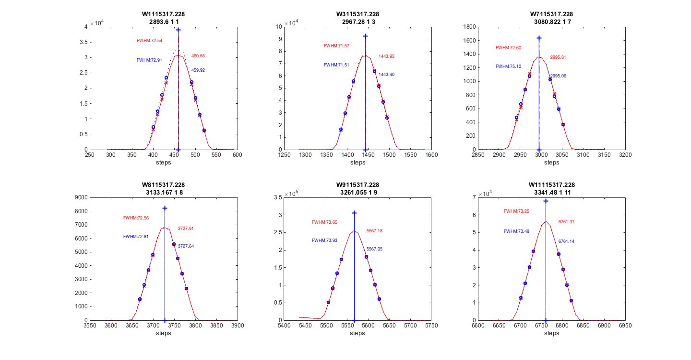 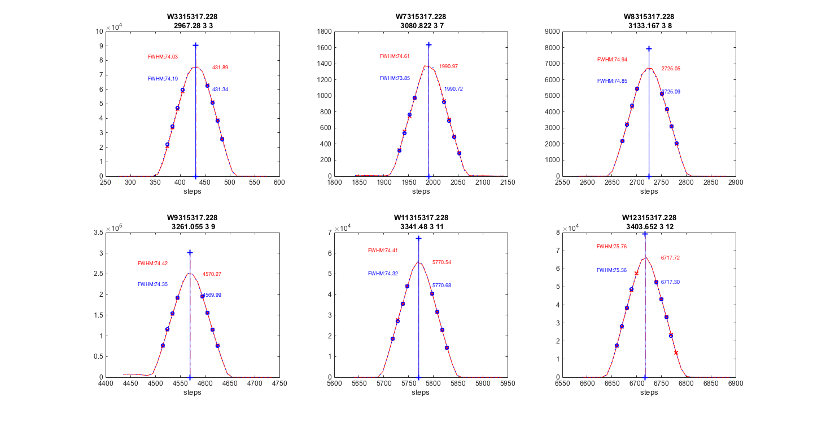 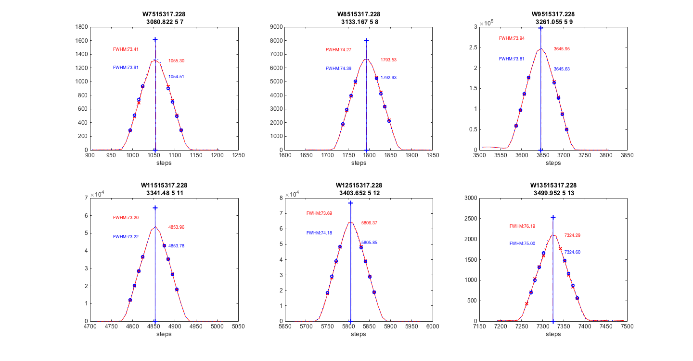 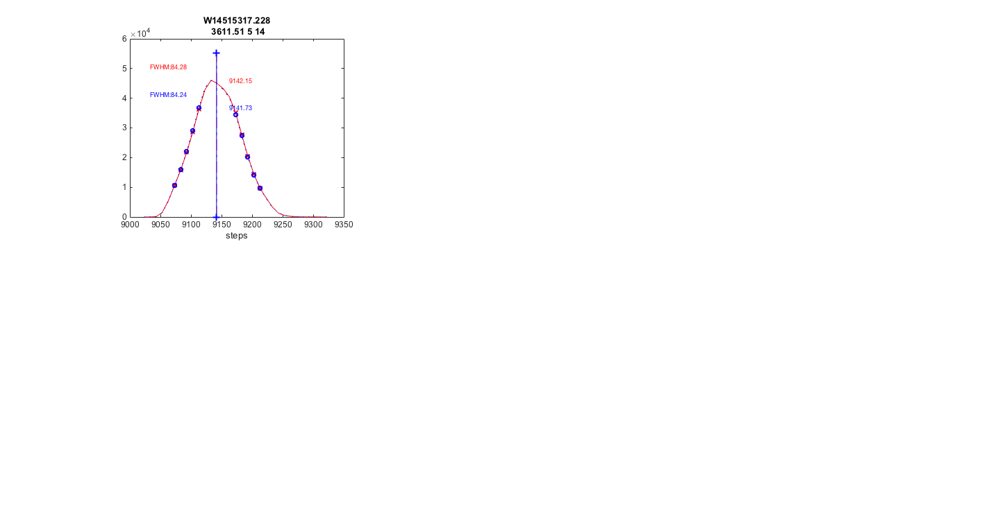 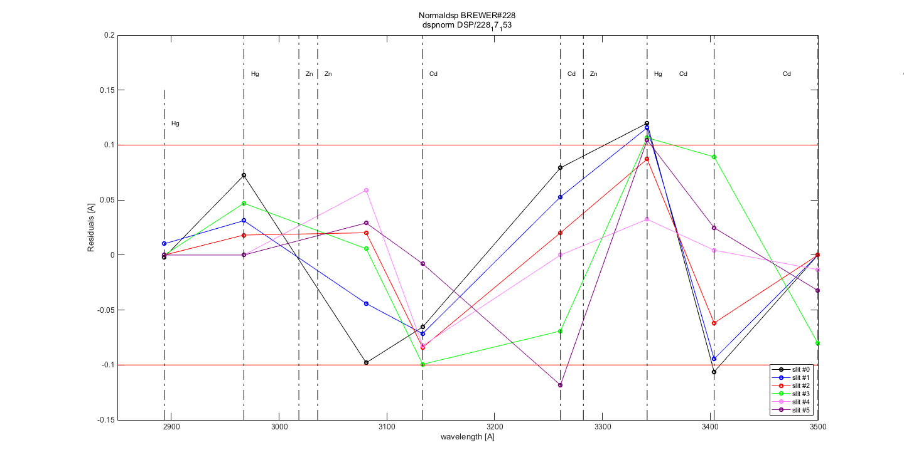 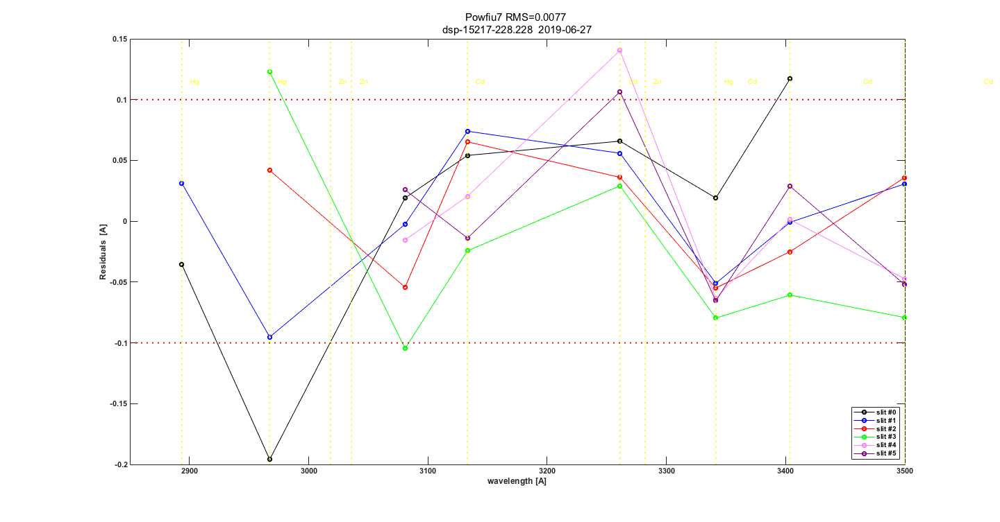 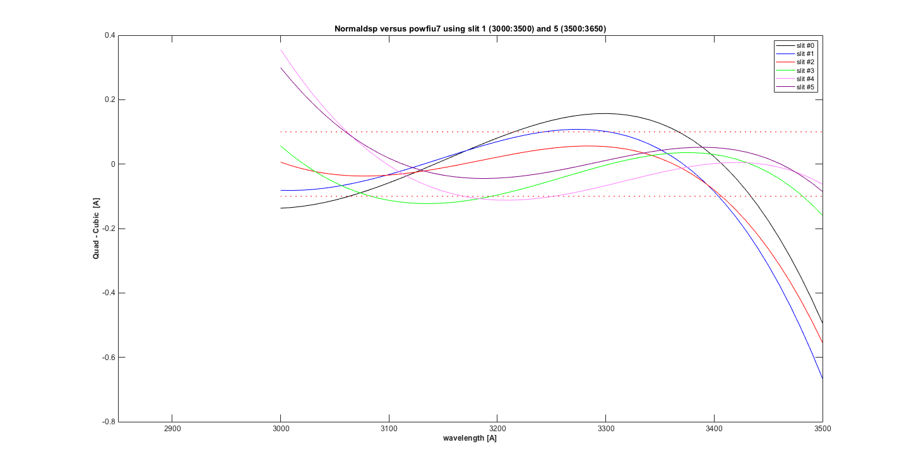 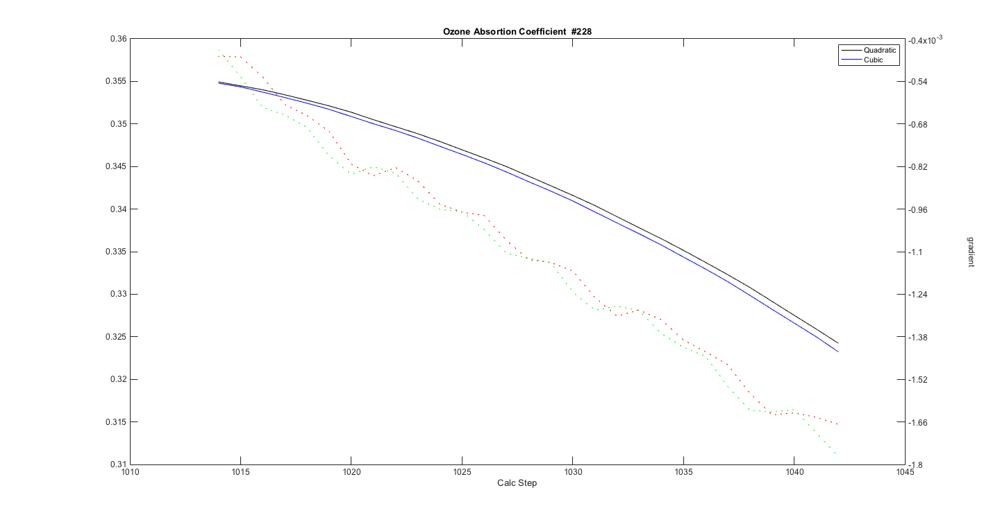 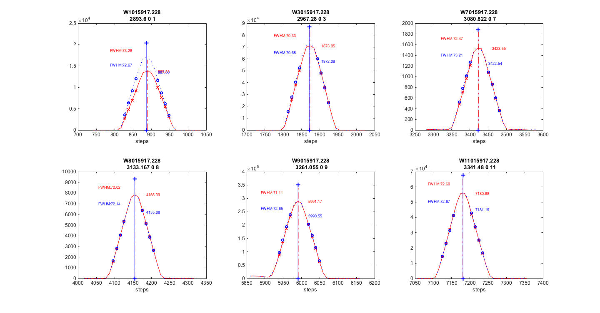
datefile =
737599
ans =
'22-Jun-2019'
now:W1017319.228
now:W3017319.228
now:W7017319.228
now:W8017319.228
now:W9017319.228
now:W11017319.228
now:W12017319.228
now:W1117319.228
now:W3117319.228
now:W7117319.228
now:W8117319.228
now:W9117319.228
now:W11117319.228
now:W12117319.228
now:W13117319.228
now:W3217319.228
now:W7217319.228
now:W8217319.228
now:W9217319.228
now:W11217319.228
now:W12217319.228
now:W13217319.228
now:W3317319.228
now:W7317319.228
now:W8317319.228
now:W9317319.228
now:W11317319.228
now:W12317319.228
now:W13317319.228
now:W7417319.228
now:W8417319.228
now:W9417319.228
now:W11417319.228
now:W12417319.228
now:W13417319.228
now:W7517319.228
now:W8517319.228
now:W9517319.228
now:W11517319.228
now:W12517319.228
now:W13517319.228
now:W14517319.228
lines_dsp_17319__228
saving alldsp to DSP/228_19_174/alldsp_17319_228.228
eliminamos la linea slit 6 3133.167000 0.134862
eliminamos la linea slit 4 3080.822000 0.167269
eliminamos la linea slit 1 2967.280000 0.208381
saving normaldsp to DSP/228_19_174/dspnorm_17319_228.228 as brewer compatible file
Use polyval(pwl(2,:),wl) for calculating normal wavelengths
Saving ozonecoeffs to DSP/228_19_174/opos17319_228.228
1018 WL(A) 3031.80 3062.66 3100.12 3134.58 3167.50 3199.50
Res(A) 10.56 10.63 10.49 10.67 10.53 10.31
O3abs(1/cm) 2.6009 1.7885 1.0065 0.6793 0.3743 0.2978 O3: 0.3498
Daumt O3abs(1/cm) 2.6080 1.7826 0.9982 0.6724 0.3674 0.2976 O3: 0.3597
So2abs(1/cm) 3.4279 5.5647 2.3610 1.9717 1.0461 0.6283
Bremen O3abs(1/cm) 2.6117 1.7859 1.0038 0.6820 0.3725 0.2989 O3: 0.3513
Nicolet 1e4*Rayabs(1/cm) 5051.4 4834.6 4587.2 4373.6 4181.4 4004.7 R: 9.3030
Bates(fix) 1e4*Rayabs(1/cm) 0.0 4870.0 4620.0 4410.0 4220.0 4040.0 R: -1.0000
Bodhaine 1e4*Rayabs(1/cm) 5048.0 4832.6 4586.7 4374.3 4183.0 4007.0 R: 8.9335
I0(mW m^-2nm^-1) 11695.56 9408.68 7350.27 4915.65 4079.17 3234.31 ETC: 1417
Ozone offset due to Rayleigh (RayCOeff/O3Coeff): -2.7 DU
Ozone offset due to Rayleigh (Bodhaine): -2.8 DU
Ratio Ozone for So2(A3)= 1.1695, So2/O3(A2)= 2.7203
O3 factor from Bass & Paur to Daumont = 0.9724
O3 factor from Bass & Paur to Bremen = 0.9957
1019 WL(A) 3031.88 3062.73 3100.19 3134.65 3167.57 3199.57
Res(A) 10.56 10.63 10.49 10.67 10.53 10.31
O3abs(1/cm) 2.5984 1.7870 1.0063 0.6792 0.3743 0.2975 O3: 0.3489
Daumt O3abs(1/cm) 2.6054 1.7813 0.9979 0.6724 0.3674 0.2974 O3: 0.3590
So2abs(1/cm) 3.4111 5.5899 2.3681 1.9600 1.0475 0.6263
Bremen O3abs(1/cm) 2.6092 1.7845 1.0035 0.6820 0.3725 0.2986 O3: 0.3506
Nicolet 1e4*Rayabs(1/cm) 5050.9 4834.1 4586.7 4373.2 4181.0 4004.3 R: 9.3016
Bates(fix) 1e4*Rayabs(1/cm) 0.0 4870.0 4620.0 4410.0 4220.0 4040.0 R: -1.0000
Bodhaine 1e4*Rayabs(1/cm) 5047.4 4832.1 4586.2 4373.9 4182.6 4006.6 R: 8.9346
I0(mW m^-2nm^-1) 11688.62 9401.89 7322.87 4913.02 4068.39 3228.77 ETC: 1405
Ozone offset due to Rayleigh (RayCOeff/O3Coeff): -2.7 DU
Ozone offset due to Rayleigh (Bodhaine): -2.8 DU
Ratio Ozone for So2(A3)= 1.1668, So2/O3(A2)= 2.7379
O3 factor from Bass & Paur to Daumont = 0.9717
O3 factor from Bass & Paur to Bremen = 0.9952
1020 WL(A) 3031.95 3062.80 3100.26 3134.72 3167.64 3199.64
Res(A) 10.56 10.63 10.49 10.67 10.53 10.31
O3abs(1/cm) 2.5960 1.7854 1.0060 0.6789 0.3743 0.2971 O3: 0.3481
Daumt O3abs(1/cm) 2.6029 1.7799 0.9976 0.6724 0.3674 0.2971 O3: 0.3584
So2abs(1/cm) 3.3944 5.6149 2.3751 1.9486 1.0488 0.6242
Bremen O3abs(1/cm) 2.6068 1.7830 1.0032 0.6819 0.3725 0.2983 O3: 0.3498
Nicolet 1e4*Rayabs(1/cm) 5050.4 4833.6 4586.3 4372.8 4180.6 4004.0 R: 9.3001
Bates(fix) 1e4*Rayabs(1/cm) 0.0 4870.0 4620.0 4410.0 4220.0 4040.0 R: -1.0000
Bodhaine 1e4*Rayabs(1/cm) 5046.9 4831.6 4585.8 4373.4 4182.2 4006.3 R: 8.9312
I0(mW m^-2nm^-1) 11681.69 9395.10 7297.63 4908.94 4057.63 3223.09 ETC: 1396
Ozone offset due to Rayleigh (RayCOeff/O3Coeff): -2.7 DU
Ozone offset due to Rayleigh (Bodhaine): -2.9 DU
Ratio Ozone for So2(A3)= 1.1639, So2/O3(A2)= 2.7558
O3 factor from Bass & Paur to Daumont = 0.9714
O3 factor from Bass & Paur to Bremen = 0.9950
1021 WL(A) 3032.02 3062.88 3100.33 3134.79 3167.71 3199.71
Res(A) 10.56 10.63 10.49 10.67 10.53 10.31
O3abs(1/cm) 2.5935 1.7839 1.0058 0.6787 0.3743 0.2967 O3: 0.3473
Daumt O3abs(1/cm) 2.6003 1.7786 0.9973 0.6723 0.3674 0.2969 O3: 0.3576
So2abs(1/cm) 3.3789 5.6396 2.3823 1.9370 1.0501 0.6221
Bremen O3abs(1/cm) 2.6043 1.7816 1.0029 0.6817 0.3726 0.2980 O3: 0.3490
Nicolet 1e4*Rayabs(1/cm) 5049.8 4833.1 4585.8 4372.4 4180.2 4003.6 R: 9.2987
Bates(fix) 1e4*Rayabs(1/cm) 0.0 4870.0 4620.0 4410.0 4220.0 4040.0 R: -1.0000
Bodhaine 1e4*Rayabs(1/cm) 5046.4 4831.2 4585.3 4373.0 4181.8 4005.9 R: 8.9291
I0(mW m^-2nm^-1) 11674.77 9388.33 7280.01 4904.59 4046.91 3217.26 ETC: 1394
Ozone offset due to Rayleigh (RayCOeff/O3Coeff): -2.7 DU
Ozone offset due to Rayleigh (Bodhaine): -2.9 DU
Ratio Ozone for So2(A3)= 1.1611, So2/O3(A2)= 2.7732
O3 factor from Bass & Paur to Daumont = 0.9711
O3 factor from Bass & Paur to Bremen = 0.9949
1022 WL(A) 3032.09 3062.95 3100.40 3134.86 3167.78 3199.78
Res(A) 10.56 10.63 10.49 10.67 10.53 10.31
O3abs(1/cm) 2.5910 1.7824 1.0055 0.6784 0.3744 0.2963 O3: 0.3464
Daumt O3abs(1/cm) 2.5978 1.7772 0.9969 0.6722 0.3674 0.2966 O3: 0.3568
So2abs(1/cm) 3.3645 5.6630 2.3899 1.9249 1.0514 0.6200
Bremen O3abs(1/cm) 2.6019 1.7801 1.0026 0.6816 0.3726 0.2977 O3: 0.3482
Nicolet 1e4*Rayabs(1/cm) 5049.3 4832.6 4585.4 4371.9 4179.8 4003.2 R: 9.2973
Bates(fix) 1e4*Rayabs(1/cm) 0.0 4870.0 4620.0 4410.0 4220.0 4040.0 R: -1.0000
Bodhaine 1e4*Rayabs(1/cm) 5045.9 4830.7 4584.9 4372.6 4181.4 4005.5 R: 8.9291
I0(mW m^-2nm^-1) 11667.87 9381.57 7262.94 4900.24 4036.20 3211.27 ETC: 1392
Ozone offset due to Rayleigh (RayCOeff/O3Coeff): -2.7 DU
Ozone offset due to Rayleigh (Bodhaine): -2.9 DU
Ratio Ozone for So2(A3)= 1.1582, So2/O3(A2)= 2.7897
O3 factor from Bass & Paur to Daumont = 0.9708
O3 factor from Bass & Paur to Bremen = 0.9948
1023 WL(A) 3032.17 3063.02 3100.47 3134.93 3167.85 3199.85
Res(A) 10.56 10.63 10.49 10.67 10.53 10.31
O3abs(1/cm) 2.5885 1.7809 1.0052 0.6780 0.3745 0.2959 O3: 0.3454
Daumt O3abs(1/cm) 2.5954 1.7758 0.9966 0.6720 0.3674 0.2963 O3: 0.3560
So2abs(1/cm) 3.3502 5.6849 2.3978 1.9129 1.0527 0.6178
Bremen O3abs(1/cm) 2.5995 1.7786 1.0023 0.6814 0.3726 0.2974 O3: 0.3473
Nicolet 1e4*Rayabs(1/cm) 5048.8 4832.2 4584.9 4371.5 4179.4 4002.9 R: 9.2959
Bates(fix) 1e4*Rayabs(1/cm) 0.0 4870.0 4620.0 4410.0 4220.0 4040.0 R: -1.0000
Bodhaine 1e4*Rayabs(1/cm) 5045.3 4830.2 4584.4 4372.2 4181.0 4005.1 R: 8.9281
I0(mW m^-2nm^-1) 11660.97 9374.82 7246.40 4895.90 4025.53 3204.77 ETC: 1390
Ozone offset due to Rayleigh (RayCOeff/O3Coeff): -2.7 DU
Ozone offset due to Rayleigh (Bodhaine): -2.9 DU
Ratio Ozone for So2(A3)= 1.1551, So2/O3(A2)= 2.8054
O3 factor from Bass & Paur to Daumont = 0.9704
O3 factor from Bass & Paur to Bremen = 0.9946
1024 WL(A) 3032.24 3063.09 3100.54 3135.00 3167.92 3199.92
Res(A) 10.56 10.63 10.49 10.67 10.53 10.31
O3abs(1/cm) 2.5860 1.7794 1.0050 0.6777 0.3745 0.2954 O3: 0.3443
Daumt O3abs(1/cm) 2.5929 1.7743 0.9963 0.6719 0.3675 0.2959 O3: 0.3551
So2abs(1/cm) 3.3360 5.7067 2.4057 1.9013 1.0540 0.6156
Bremen O3abs(1/cm) 2.5971 1.7770 1.0019 0.6812 0.3727 0.2970 O3: 0.3464
Nicolet 1e4*Rayabs(1/cm) 5048.3 4831.7 4584.4 4371.1 4179.0 4002.5 R: 9.2944
Bates(fix) 1e4*Rayabs(1/cm) 0.0 4870.0 4620.0 4410.0 4220.0 4040.0 R: -1.0000
Bodhaine 1e4*Rayabs(1/cm) 5044.8 4829.7 4584.0 4371.7 4180.6 4004.8 R: 8.9250
I0(mW m^-2nm^-1) 11654.09 9368.08 7230.36 4891.57 4014.88 3193.78 ETC: 1381
Ozone offset due to Rayleigh (RayCOeff/O3Coeff): -2.7 DU
Ozone offset due to Rayleigh (Bodhaine): -2.9 DU
Ratio Ozone for So2(A3)= 1.1516, So2/O3(A2)= 2.8218
O3 factor from Bass & Paur to Daumont = 0.9697
O3 factor from Bass & Paur to Bremen = 0.9940
1025 WL(A) 3032.31 3063.17 3100.62 3135.08 3167.99 3199.99
Res(A) 10.56 10.63 10.49 10.67 10.53 10.31
O3abs(1/cm) 2.5835 1.7779 1.0047 0.6774 0.3746 0.2949 O3: 0.3432
Daumt O3abs(1/cm) 2.5905 1.7729 0.9960 0.6717 0.3675 0.2956 O3: 0.3541
So2abs(1/cm) 3.3229 5.7279 2.4137 1.8897 1.0553 0.6133
Bremen O3abs(1/cm) 2.5948 1.7755 1.0016 0.6810 0.3728 0.2967 O3: 0.3454
Nicolet 1e4*Rayabs(1/cm) 5047.7 4831.2 4584.0 4370.7 4178.6 4002.1 R: 9.2930
Bates(fix) 1e4*Rayabs(1/cm) 0.0 4870.0 4620.0 4410.0 4220.0 4040.0 R: -1.0000
Bodhaine 1e4*Rayabs(1/cm) 5044.3 4829.2 4583.5 4371.3 4180.2 4004.4 R: 8.9243
I0(mW m^-2nm^-1) 11647.21 9361.35 7214.80 4887.24 4004.25 3182.82 ETC: 1373
Ozone offset due to Rayleigh (RayCOeff/O3Coeff): -2.7 DU
Ozone offset due to Rayleigh (Bodhaine): -2.9 DU
Ratio Ozone for So2(A3)= 1.1482, So2/O3(A2)= 2.8378
O3 factor from Bass & Paur to Daumont = 0.9691
O3 factor from Bass & Paur to Bremen = 0.9936
1026 WL(A) 3032.39 3063.24 3100.69 3135.15 3168.06 3200.06
Res(A) 10.56 10.63 10.49 10.67 10.53 10.31
O3abs(1/cm) 2.5811 1.7763 1.0045 0.6771 0.3747 0.2944 O3: 0.3420
Daumt O3abs(1/cm) 2.5881 1.7714 0.9957 0.6715 0.3676 0.2952 O3: 0.3531
So2abs(1/cm) 3.3111 5.7481 2.4220 1.8775 1.0566 0.6111
Bremen O3abs(1/cm) 2.5924 1.7739 1.0013 0.6807 0.3729 0.2963 O3: 0.3444
Nicolet 1e4*Rayabs(1/cm) 5047.2 4830.7 4583.5 4370.2 4178.2 4001.7 R: 9.2916
Bates(fix) 1e4*Rayabs(1/cm) 0.0 4870.0 4620.0 4410.0 4220.0 4040.0 R: -1.0000
Bodhaine 1e4*Rayabs(1/cm) 5043.8 4828.7 4583.1 4370.9 4179.8 4004.0 R: 8.9241
I0(mW m^-2nm^-1) 11640.35 9354.63 7199.45 4882.91 3993.65 3171.88 ETC: 1364
Ozone offset due to Rayleigh (RayCOeff/O3Coeff): -2.7 DU
Ozone offset due to Rayleigh (Bodhaine): -2.9 DU
Ratio Ozone for So2(A3)= 1.1446, So2/O3(A2)= 2.8535
O3 factor from Bass & Paur to Daumont = 0.9686
O3 factor from Bass & Paur to Bremen = 0.9933
1027 WL(A) 3032.46 3063.31 3100.76 3135.22 3168.13 3200.12
Res(A) 10.56 10.63 10.49 10.67 10.53 10.31
O3abs(1/cm) 2.5788 1.7745 1.0042 0.6766 0.3748 0.2939 O3: 0.3410
Daumt O3abs(1/cm) 2.5858 1.7699 0.9954 0.6713 0.3677 0.2948 O3: 0.3521
So2abs(1/cm) 3.2993 5.7665 2.4307 1.8654 1.0578 0.6087
Bremen O3abs(1/cm) 2.5901 1.7723 1.0010 0.6805 0.3730 0.2959 O3: 0.3433
Nicolet 1e4*Rayabs(1/cm) 5046.7 4830.2 4583.1 4369.8 4177.8 4001.4 R: 9.2902
Bates(fix) 1e4*Rayabs(1/cm) 0.0 4870.0 4620.0 4410.0 4220.0 4040.0 R: -1.0000
Bodhaine 1e4*Rayabs(1/cm) 5043.2 4828.2 4582.6 4370.5 4179.4 4003.7 R: 8.9220
I0(mW m^-2nm^-1) 11633.50 9347.92 7181.55 4878.59 3983.08 3160.98 ETC: 1353
Ozone offset due to Rayleigh (RayCOeff/O3Coeff): -2.7 DU
Ozone offset due to Rayleigh (Bodhaine): -2.9 DU
Ratio Ozone for So2(A3)= 1.1409, So2/O3(A2)= 2.8677
O3 factor from Bass & Paur to Daumont = 0.9684
O3 factor from Bass & Paur to Bremen = 0.9932
1028 WL(A) 3032.53 3063.38 3100.83 3135.29 3168.20 3200.19
Res(A) 10.56 10.63 10.48 10.67 10.53 10.31
O3abs(1/cm) 2.5765 1.7728 1.0039 0.6761 0.3749 0.2934 O3: 0.3399
Daumt O3abs(1/cm) 2.5834 1.7684 0.9951 0.6710 0.3678 0.2944 O3: 0.3510
So2abs(1/cm) 3.2876 5.7849 2.4394 1.8537 1.0591 0.6064
Bremen O3abs(1/cm) 2.5879 1.7707 1.0007 0.6802 0.3731 0.2955 O3: 0.3422
Nicolet 1e4*Rayabs(1/cm) 5046.1 4829.7 4582.6 4369.4 4177.4 4001.0 R: 9.2887
Bates(fix) 1e4*Rayabs(1/cm) 0.0 4870.0 4620.0 4410.0 4220.0 4040.0 R: -1.0000
Bodhaine 1e4*Rayabs(1/cm) 5042.7 4827.7 4582.2 4370.1 4179.0 4003.3 R: 8.9199
I0(mW m^-2nm^-1) 11626.66 9341.22 7163.73 4874.27 3972.53 3153.77 ETC: 1348
Ozone offset due to Rayleigh (RayCOeff/O3Coeff): -2.7 DU
Ozone offset due to Rayleigh (Bodhaine): -2.9 DU
Ratio Ozone for So2(A3)= 1.1372, So2/O3(A2)= 2.8820
O3 factor from Bass & Paur to Daumont = 0.9682
O3 factor from Bass & Paur to Bremen = 0.9932
saving powfiu7 to DSP/228_19_174/dsp_17319_228.228
freecoef =
4
freecoef =
9
freecoef =
9
freecoef =
9
freecoef =
9
freecoef =
9
freecoef =
9
freecoef =
9
freecoef =
9
freecoef =
9
saving data to file:DSP/228_19_174/dsp_17319_228.228
Use brstps2 to calculate steps and wavelengths
Saving ozonecoeffs to DSP/228_19_174/opos_pow7_17319_228.228
1018 WL(A) 3031.74 3062.72 3100.14 3134.57 3167.47 3199.41
Res(A) 10.56 10.63 10.49 10.68 10.52 10.31
O3abs(1/cm) 2.6033 1.7873 1.0065 0.6793 0.3743 0.2984 O3: 0.3506
Daumt O3abs(1/cm) 2.6102 1.7815 0.9981 0.6724 0.3674 0.2979 O3: 0.3601
So2abs(1/cm) 3.4422 5.5855 2.3631 1.9735 1.0456 0.6310
Bremen O3abs(1/cm) 2.6139 1.7847 1.0037 0.6821 0.3725 0.2992 O3: 0.3518
Nicolet 1e4*Rayabs(1/cm) 5051.9 4834.2 4587.1 4373.7 4181.6 4005.2 R: 9.6509
Bates(fix) 1e4*Rayabs(1/cm) 0.0 4870.0 4620.0 4410.0 4220.0 4040.0 R: -1.0000
Bodhaine 1e4*Rayabs(1/cm) 5048.4 4832.2 4586.6 4374.3 4183.1 4007.5 R: 9.2817
I0(mW m^-2nm^-1) 11701.45 9403.03 7342.26 4916.09 4083.65 3241.76 ETC: 1411
Ozone offset due to Rayleigh (RayCOeff/O3Coeff): -2.8 DU
Ozone offset due to Rayleigh (Bodhaine): -2.9 DU
Ratio Ozone for So2(A3)= 1.1700, So2/O3(A2)= 2.7464
O3 factor from Bass & Paur to Daumont = 0.9736
O3 factor from Bass & Paur to Bremen = 0.9967
1019 WL(A) 3031.81 3062.79 3100.21 3134.64 3167.54 3199.48
Res(A) 10.56 10.63 10.49 10.68 10.52 10.31
O3abs(1/cm) 2.6005 1.7857 1.0062 0.6792 0.3743 0.2980 O3: 0.3497
Daumt O3abs(1/cm) 2.6076 1.7801 0.9978 0.6724 0.3674 0.2977 O3: 0.3595
So2abs(1/cm) 3.4253 5.6107 2.3701 1.9618 1.0469 0.6290
Bremen O3abs(1/cm) 2.6113 1.7833 1.0034 0.6820 0.3725 0.2990 O3: 0.3511
Nicolet 1e4*Rayabs(1/cm) 5051.3 4833.7 4586.6 4373.3 4181.2 4004.9 R: 9.6486
Bates(fix) 1e4*Rayabs(1/cm) 0.0 4870.0 4620.0 4410.0 4220.0 4040.0 R: -1.0000
Bodhaine 1e4*Rayabs(1/cm) 5047.9 4831.7 4586.1 4373.9 4182.7 4007.1 R: 9.2772
I0(mW m^-2nm^-1) 11694.50 9396.25 7314.92 4913.47 4072.85 3236.42 ETC: 1400
Ozone offset due to Rayleigh (RayCOeff/O3Coeff): -2.8 DU
Ozone offset due to Rayleigh (Bodhaine): -2.9 DU
Ratio Ozone for So2(A3)= 1.1672, So2/O3(A2)= 2.7645
O3 factor from Bass & Paur to Daumont = 0.9728
O3 factor from Bass & Paur to Bremen = 0.9961
1020 WL(A) 3031.89 3062.87 3100.28 3134.71 3167.61 3199.55
Res(A) 10.56 10.63 10.49 10.68 10.52 10.31
O3abs(1/cm) 2.5981 1.7841 1.0060 0.6790 0.3743 0.2976 O3: 0.3489
Daumt O3abs(1/cm) 2.6050 1.7788 0.9975 0.6724 0.3673 0.2975 O3: 0.3589
So2abs(1/cm) 3.4085 5.6354 2.3772 1.9504 1.0483 0.6270
Bremen O3abs(1/cm) 2.6088 1.7818 1.0031 0.6819 0.3725 0.2987 O3: 0.3504
Nicolet 1e4*Rayabs(1/cm) 5050.8 4833.2 4586.1 4372.8 4180.8 4004.5 R: 9.6462
Bates(fix) 1e4*Rayabs(1/cm) 0.0 4870.0 4620.0 4410.0 4220.0 4040.0 R: -1.0000
Bodhaine 1e4*Rayabs(1/cm) 5047.3 4831.2 4585.7 4373.5 4182.3 4006.8 R: 9.2777
I0(mW m^-2nm^-1) 11687.57 9389.48 7292.19 4909.63 4062.08 3230.94 ETC: 1393
Ozone offset due to Rayleigh (RayCOeff/O3Coeff): -2.8 DU
Ozone offset due to Rayleigh (Bodhaine): -2.9 DU
Ratio Ozone for So2(A3)= 1.1644, So2/O3(A2)= 2.7819
O3 factor from Bass & Paur to Daumont = 0.9722
O3 factor from Bass & Paur to Bremen = 0.9957
1021 WL(A) 3031.96 3062.94 3100.35 3134.78 3167.68 3199.61
Res(A) 10.56 10.63 10.49 10.68 10.52 10.31
O3abs(1/cm) 2.5956 1.7827 1.0057 0.6787 0.3743 0.2972 O3: 0.3481
Daumt O3abs(1/cm) 2.6025 1.7774 0.9972 0.6723 0.3673 0.2972 O3: 0.3582
So2abs(1/cm) 3.3918 5.6592 2.3844 1.9388 1.0496 0.6250
Bremen O3abs(1/cm) 2.6064 1.7803 1.0028 0.6817 0.3725 0.2984 O3: 0.3497
Nicolet 1e4*Rayabs(1/cm) 5050.3 4832.7 4585.7 4372.4 4180.4 4004.1 R: 9.6439
Bates(fix) 1e4*Rayabs(1/cm) 0.0 4870.0 4620.0 4410.0 4220.0 4040.0 R: -1.0000
Bodhaine 1e4*Rayabs(1/cm) 5046.8 4830.7 4585.2 4373.1 4181.9 4006.4 R: 9.2752
I0(mW m^-2nm^-1) 11680.64 9382.72 7274.74 4905.28 4051.33 3225.31 ETC: 1392
Ozone offset due to Rayleigh (RayCOeff/O3Coeff): -2.8 DU
Ozone offset due to Rayleigh (Bodhaine): -3.0 DU
Ratio Ozone for So2(A3)= 1.1616, So2/O3(A2)= 2.7987
O3 factor from Bass & Paur to Daumont = 0.9719
O3 factor from Bass & Paur to Bremen = 0.9955
1022 WL(A) 3032.03 3063.01 3100.42 3134.85 3167.75 3199.68
Res(A) 10.56 10.63 10.49 10.68 10.52 10.31
O3abs(1/cm) 2.5931 1.7812 1.0054 0.6784 0.3744 0.2968 O3: 0.3473
Daumt O3abs(1/cm) 2.6000 1.7760 0.9969 0.6722 0.3674 0.2970 O3: 0.3574
So2abs(1/cm) 3.3767 5.6811 2.3922 1.9268 1.0509 0.6229
Bremen O3abs(1/cm) 2.6039 1.7788 1.0025 0.6816 0.3726 0.2982 O3: 0.3489
Nicolet 1e4*Rayabs(1/cm) 5049.8 4832.2 4585.2 4372.0 4180.0 4003.7 R: 9.6415
Bates(fix) 1e4*Rayabs(1/cm) 0.0 4870.0 4620.0 4410.0 4220.0 4040.0 R: -1.0000
Bodhaine 1e4*Rayabs(1/cm) 5046.3 4830.2 4584.7 4372.7 4181.5 4006.0 R: 9.2709
I0(mW m^-2nm^-1) 11673.73 9375.96 7257.83 4900.94 4040.61 3219.54 ETC: 1391
Ozone offset due to Rayleigh (RayCOeff/O3Coeff): -2.8 DU
Ozone offset due to Rayleigh (Bodhaine): -3.0 DU
Ratio Ozone for So2(A3)= 1.1588, So2/O3(A2)= 2.8139
O3 factor from Bass & Paur to Daumont = 0.9716
O3 factor from Bass & Paur to Bremen = 0.9954
1023 WL(A) 3032.11 3063.08 3100.49 3134.92 3167.82 3199.75
Res(A) 10.56 10.63 10.49 10.68 10.52 10.31
O3abs(1/cm) 2.5906 1.7797 1.0052 0.6781 0.3744 0.2965 O3: 0.3464
Daumt O3abs(1/cm) 2.5975 1.7746 0.9966 0.6721 0.3674 0.2967 O3: 0.3567
So2abs(1/cm) 3.3623 5.7030 2.4001 1.9147 1.0522 0.6208
Bremen O3abs(1/cm) 2.6015 1.7773 1.0022 0.6814 0.3726 0.2979 O3: 0.3481
Nicolet 1e4*Rayabs(1/cm) 5049.2 4831.7 4584.8 4371.6 4179.6 4003.4 R: 9.6391
Bates(fix) 1e4*Rayabs(1/cm) 0.0 4870.0 4620.0 4410.0 4220.0 4040.0 R: -1.0000
Bodhaine 1e4*Rayabs(1/cm) 5045.8 4829.8 4584.3 4372.2 4181.1 4005.7 R: 9.2696
I0(mW m^-2nm^-1) 11666.82 9369.22 7241.45 4896.60 4029.91 3213.61 ETC: 1390
Ozone offset due to Rayleigh (RayCOeff/O3Coeff): -2.8 DU
Ozone offset due to Rayleigh (Bodhaine): -3.0 DU
Ratio Ozone for So2(A3)= 1.1558, So2/O3(A2)= 2.8296
O3 factor from Bass & Paur to Daumont = 0.9711
O3 factor from Bass & Paur to Bremen = 0.9951
1024 WL(A) 3032.18 3063.15 3100.56 3134.99 3167.89 3199.82
Res(A) 10.56 10.63 10.49 10.68 10.52 10.31
O3abs(1/cm) 2.5882 1.7782 1.0049 0.6778 0.3745 0.2961 O3: 0.3454
Daumt O3abs(1/cm) 2.5950 1.7731 0.9962 0.6719 0.3674 0.2964 O3: 0.3558
So2abs(1/cm) 3.3479 5.7242 2.4080 1.9031 1.0535 0.6186
Bremen O3abs(1/cm) 2.5991 1.7757 1.0019 0.6812 0.3727 0.2975 O3: 0.3472
Nicolet 1e4*Rayabs(1/cm) 5048.7 4831.2 4584.3 4371.2 4179.2 4003.0 R: 9.6368
Bates(fix) 1e4*Rayabs(1/cm) 0.0 4870.0 4620.0 4410.0 4220.0 4040.0 R: -1.0000
Bodhaine 1e4*Rayabs(1/cm) 5045.3 4829.3 4583.8 4371.8 4180.8 4005.3 R: 9.2687
I0(mW m^-2nm^-1) 11659.93 9362.49 7225.55 4892.27 4019.24 3207.52 ETC: 1390
Ozone offset due to Rayleigh (RayCOeff/O3Coeff): -2.8 DU
Ozone offset due to Rayleigh (Bodhaine): -3.0 DU
Ratio Ozone for So2(A3)= 1.1527, So2/O3(A2)= 2.8448
O3 factor from Bass & Paur to Daumont = 0.9708
O3 factor from Bass & Paur to Bremen = 0.9950
1025 WL(A) 3032.25 3063.23 3100.64 3135.06 3167.96 3199.89
Res(A) 10.56 10.63 10.49 10.68 10.52 10.31
O3abs(1/cm) 2.5856 1.7765 1.0046 0.6774 0.3746 0.2956 O3: 0.3444
Daumt O3abs(1/cm) 2.5926 1.7717 0.9959 0.6717 0.3675 0.2961 O3: 0.3549
So2abs(1/cm) 3.3338 5.7449 2.4160 1.8916 1.0548 0.6164
Bremen O3abs(1/cm) 2.5968 1.7742 1.0015 0.6810 0.3727 0.2972 O3: 0.3462
Nicolet 1e4*Rayabs(1/cm) 5048.2 4830.8 4583.9 4370.7 4178.8 4002.6 R: 9.6344
Bates(fix) 1e4*Rayabs(1/cm) 0.0 4870.0 4620.0 4410.0 4220.0 4040.0 R: -1.0000
Bodhaine 1e4*Rayabs(1/cm) 5044.7 4828.8 4583.4 4371.4 4180.4 4004.9 R: 9.2655
I0(mW m^-2nm^-1) 11653.04 9355.77 7210.13 4887.94 4008.60 3198.02 ETC: 1384
Ozone offset due to Rayleigh (RayCOeff/O3Coeff): -2.8 DU
Ozone offset due to Rayleigh (Bodhaine): -3.0 DU
Ratio Ozone for So2(A3)= 1.1492, So2/O3(A2)= 2.8607
O3 factor from Bass & Paur to Daumont = 0.9702
O3 factor from Bass & Paur to Bremen = 0.9946
1026 WL(A) 3032.32 3063.30 3100.71 3135.14 3168.03 3199.96
Res(A) 10.56 10.63 10.49 10.68 10.52 10.31
O3abs(1/cm) 2.5831 1.7748 1.0044 0.6771 0.3747 0.2951 O3: 0.3432
Daumt O3abs(1/cm) 2.5901 1.7702 0.9956 0.6715 0.3675 0.2957 O3: 0.3540
So2abs(1/cm) 3.3211 5.7633 2.4245 1.8794 1.0560 0.6142
Bremen O3abs(1/cm) 2.5944 1.7726 1.0012 0.6808 0.3728 0.2968 O3: 0.3453
Nicolet 1e4*Rayabs(1/cm) 5047.6 4830.3 4583.4 4370.3 4178.4 4002.3 R: 9.6321
Bates(fix) 1e4*Rayabs(1/cm) 0.0 4870.0 4620.0 4410.0 4220.0 4040.0 R: -1.0000
Bodhaine 1e4*Rayabs(1/cm) 5044.2 4828.3 4582.9 4371.0 4180.0 4004.6 R: 9.2617
I0(mW m^-2nm^-1) 11646.17 9349.06 7194.04 4883.61 3997.98 3187.05 ETC: 1375
Ozone offset due to Rayleigh (RayCOeff/O3Coeff): -2.8 DU
Ozone offset due to Rayleigh (Bodhaine): -3.0 DU
Ratio Ozone for So2(A3)= 1.1455, So2/O3(A2)= 2.8750
O3 factor from Bass & Paur to Daumont = 0.9696
O3 factor from Bass & Paur to Bremen = 0.9941
1027 WL(A) 3032.40 3063.37 3100.78 3135.21 3168.10 3200.03
Res(A) 10.56 10.63 10.49 10.67 10.52 10.31
O3abs(1/cm) 2.5808 1.7731 1.0041 0.6767 0.3747 0.2946 O3: 0.3421
Daumt O3abs(1/cm) 2.5878 1.7687 0.9953 0.6713 0.3676 0.2954 O3: 0.3530
So2abs(1/cm) 3.3093 5.7817 2.4332 1.8673 1.0573 0.6120
Bremen O3abs(1/cm) 2.5921 1.7710 1.0009 0.6805 0.3729 0.2964 O3: 0.3442
Nicolet 1e4*Rayabs(1/cm) 5047.1 4829.8 4583.0 4369.9 4178.0 4001.9 R: 9.6297
Bates(fix) 1e4*Rayabs(1/cm) 0.0 4870.0 4620.0 4410.0 4220.0 4040.0 R: -1.0000
Bodhaine 1e4*Rayabs(1/cm) 5043.7 4827.8 4582.5 4370.5 4179.6 4004.2 R: 9.2620
I0(mW m^-2nm^-1) 11639.31 9342.36 7176.17 4879.29 3987.39 3176.10 ETC: 1364
Ozone offset due to Rayleigh (RayCOeff/O3Coeff): -2.8 DU
Ozone offset due to Rayleigh (Bodhaine): -3.0 DU
Ratio Ozone for So2(A3)= 1.1418, So2/O3(A2)= 2.8894
O3 factor from Bass & Paur to Daumont = 0.9692
O3 factor from Bass & Paur to Bremen = 0.9938
1028 WL(A) 3032.47 3063.44 3100.85 3135.28 3168.17 3200.10
Res(A) 10.56 10.63 10.49 10.67 10.52 10.31
O3abs(1/cm) 2.5784 1.7714 1.0038 0.6762 0.3748 0.2941 O3: 0.3410
Daumt O3abs(1/cm) 2.5854 1.7671 0.9950 0.6711 0.3677 0.2950 O3: 0.3520
So2abs(1/cm) 3.2974 5.7993 2.4419 1.8555 1.0586 0.6096
Bremen O3abs(1/cm) 2.5898 1.7694 1.0006 0.6802 0.3730 0.2960 O3: 0.3432
Nicolet 1e4*Rayabs(1/cm) 5046.6 4829.3 4582.5 4369.5 4177.6 4001.5 R: 9.6274
Bates(fix) 1e4*Rayabs(1/cm) 0.0 4870.0 4620.0 4410.0 4220.0 4040.0 R: -1.0000
Bodhaine 1e4*Rayabs(1/cm) 5043.2 4827.3 4582.0 4370.1 4179.2 4003.8 R: 9.2596
I0(mW m^-2nm^-1) 11632.46 9335.67 7158.37 4874.97 3976.82 3165.18 ETC: 1353
Ozone offset due to Rayleigh (RayCOeff/O3Coeff): -2.8 DU
Ozone offset due to Rayleigh (Bodhaine): -3.0 DU
Ratio Ozone for So2(A3)= 1.1382, So2/O3(A2)= 2.9029
O3 factor from Bass & Paur to Daumont = 0.9689
O3 factor from Bass & Paur to Bremen = 0.9937
Warning: The EraseMode property is no longer supported and will error in a
future release.
Warning: The EraseMode property is no longer supported and will error in a
future release.
Warning: The EraseMode property is no longer supported and will error in a
future release.
Warning: The EraseMode property is no longer supported and will error in a
future release.
Warning: The EraseMode property is no longer supported and will error in a
future release.
Warning: The EraseMode property is no longer supported and will error in a
future release.
Warning: The EraseMode property is no longer supported and will error in a
future release.
Warning: The EraseMode property is no longer supported and will error in a
future release.
Warning: The EraseMode property is no longer supported and will error in a
future release.
Warning: The EraseMode property is no longer supported and will error in a
future release.
Warning: The EraseMode property is no longer supported and will error in a
future release.
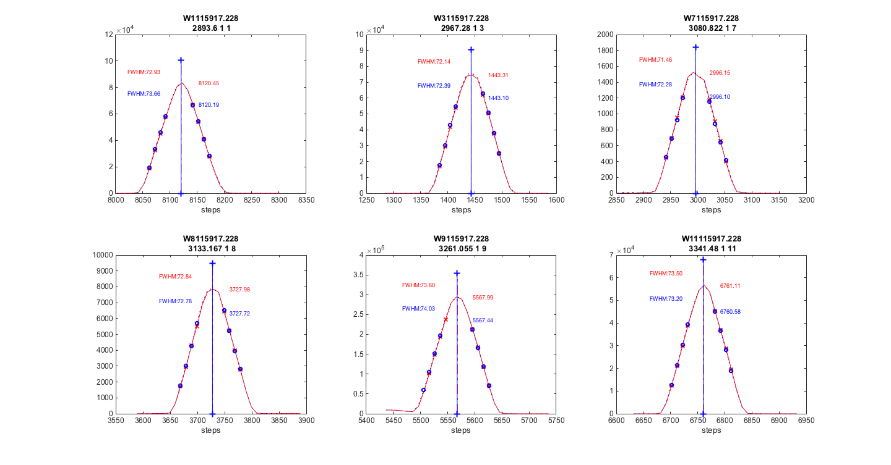
end
load(Cal.file_save,'dsp_summary');
dates=sscanf(cell2str(cat(2,ldsp')),'%03d_%03d_%03d,',[3,Inf]);
dates=datejul(dates(2:3,:)');dates=dates(:,1);
dsp_summary{Cal.n_inst}.info=cellstr(datestr(dates))';
dsp_summary{Cal.n_inst}.res=res;
dsp_summary{Cal.n_inst}.detail=detail;
dsp_summary{Cal.n_inst}.salida=salida;
save(Cal.file_save,'-APPEND','dsp_summary');
ix=sort(findobj('tag','DSP_QUAD_RES'));
printfiles_report(ix',Cal.dir_figs,'aux_pattern',ix);
close all
naux =
1
figura =
'228_figures_DSP_QUAD_RES_1'
naux =
2
figura =
'228_figures_DSP_QUAD_RES_2'
naux =
3
figura =
'228_figures_DSP_QUAD_RES_3'
naux =
4
figura =
'228_figures_DSP_QUAD_RES_4'
naux =
5
Tabla - resumen con resultados DSP y Umkehr
QUAD_SUM_table={}; rows={}; tabla_QuadSum={}; format short g;
if config_orig(14)~=config_def(14)
idx=1:length(res)+1; idx(end-1)=0; idx(end)=length(res);
for t=[1:length(res)-1,length(res)+1]
tabla_QuadSum{t}=num2cell(round(res{idx(t)}(end-1,:,1)*10^4)/10^4);
end
old_step=num2cell(round(res{length(res)}(res{length(res)}(:,1,1)==config_orig(14),:,1)*10^4)/10^4);
if ~isempty(old_step)
tabla_QuadSum{length(res)}=old_step(1,:);
else
disp('step too far')
tabla_QuadSum{length(res)}= num2cell([config_orig(14),NaN*ones(1,8)]);
end
Q_SUM_table_RowLabels={'Current',dsp_summary{Cal.n_inst}.info{:},dsp_summary{Cal.n_inst}.info{end},'Final'};
else
for t=1:length(res)
tabla_QuadSum{t}=num2cell(round(res{t}(end-1,:,1)*10^4)/10^4);
end
Q_SUM_table_RowLabels={'Current',dsp_summary{Cal.n_inst}.info{:},'Final'};
end
tabla_QuadSum_str=cat(1,tabla_QuadSum{:});
data_ini=cellfun(@(x) (round(x(:,1)*10^4))/10^4,{config_orig(8),config_orig(9),config_orig(10)},'UniformOutput',false);
data_fin=cellfun(@(x) (round(x(:,1)*10^4))/10^4,{config_def(8),config_def(9),config_def(10)},'UniformOutput',false);
QUAD_SUM_table=[{config_orig(14),data_ini{:}}
tabla_QuadSum_str(:,[1 2 4 5])
{config_def(14),data_fin{:}}];
disp([Q_SUM_table_RowLabels',QUAD_SUM_table]);
label_1={'slit\#0','slit\#1','slit\#2','slit\#3','slit\#4','slit\#5'};
UMK_TABLE={};
for um=1:length(res)
steps_umk=res{um}(end-1:end,1,1);
UMK_TABLE{um}=[];
for iumk=1:2
label_2={sprintf('step= %d ',fix(steps_umk(iumk)));'WL(A)';'Res(A)';'O3abs(1/cm)';'Ray abs(1/cm)'};
if iumk==2, dumk=0; else dumk=iumk; end
data=[label_2,[label_1;num2cell([round(detail{um}(1,:,end-dumk,1));detail{um}(2:4,:,end-dumk,1)])]];
UMK_TABLE{um}=[UMK_TABLE{um};data];
end
end
step too far
'Current' [1030] [ 0.341] [4.4707] [ 1.153]
'06-Aug-2014' [1030] [ 0.356] [3.0745] [1.1881]
'30-May-2015' [1030] [0.3467] [3.2834] [1.1567]
'02-Jun-2017' [1030] [0.3416] [3.3073] [1.1414]
'08-Jun-2017' [1030] [ 0.343] [3.3207] [1.1434]
'23-Jun-2019' [1030] [ NaN] [ NaN] [ NaN]
'23-Jun-2019' [1023] [0.3454] [3.2404] [1.1551]
'Final' [1023] [0.3455] [4.4707] [ 1.153]
Tablas y ficheros de definiciones latex
indx=1;
for t=1:length(res)
if t==1 indx=[]; else indx=t-1; end
matrix2latex_QDETAIL(QUAD_DETAIL{t},...
fullfile(Cal.file_latex,['table_QDETAIL',num2str(indx),'_',Cal.brw_str{Cal.n_inst},'.tex']),...
'alignment','c','resize',0.9,'size','footnotesize');
matrix2latex_ctable(UMK_TABLE{t},...
fullfile(Cal.file_latex,['table_UMK',num2str(indx),'_',Cal.brw_str{Cal.n_inst},'.tex']),...
'alignment','c','resize',0.9,'size','footnotesize');
end
matrix2latex_ctable(QUAD_SUM_table,fullfile(Cal.file_latex,['table_dsp','_',Cal.brw_str{Cal.n_inst},'.tex']),...
'Columnlabels',{'Calc-step', 'O3abs coeff.', 'SO2abs coeff.', 'O3/SO2'},...
'RowLabels', Q_SUM_table_RowLabels,'alignment', 'c',...
'resize',0.8,'format',{'%d','%6.4f','%6.4f','%6.4f'},'size','footnotesize');
if length(res)>1
d_p=[length(res)-1 length(res)]; tags={'','new'};
else
d_p=1; tags={'new'};
end
idx=1;
for t=d_p
latexcmd(fullfile(Cal.file_latex,['cal_wavelengthDSP',tags{idx},'_',Cal.brw_str{Cal.n_inst}]),...
['\Auno',tags{idx}],round(res{t}(end-1,2,1)*10000)/10000,...
['\Ados',tags{idx}],round(res{t}(end-1,4,1)*10000)/10000,...
['\Atres',tags{idx}],round(res{t}(end-1,5,1)*10000)/10000,...
['\UMKoffset',tags{idx}],fix(res{t}(end,1)));
idx=idx+1;
end
r=cell2mat(res');
r=reshape(r,15,[],9,2);
mq=median(squeeze(r(7,:,:,1)))
mc=round(median(squeeze(r(7,:,:,2)))*10000)/10000
figure;
plot(dates,squeeze(r(7,:,2,1)),'r:o'); hold on
plot(dates,squeeze(r(7,:,2,2)),'b:+')
hline(mq(:,2),'r',sprintf(' %.4f ',mq));
hline(mc(:,2),'b',sprintf(' %.4f ',mc));
legend('quad','cubic')
datetick;
grid
title(Cal.brw_name(Cal.n_inst))
mq =
Columns 1 through 6
1030 0.34543 9.4419 3.2834 1.1551 1390.4
Columns 7 through 9
0.35596 0.34731 9.0735
mc =
Columns 1 through 6
1030 0.3453 9.6559 3.3029 1.1518 1390.5
Columns 7 through 9
0.3561 0.3474 9.2855
Eto para escribir resultados a hoja excel.
for dsps=1:length(ldsp)
legend1={'step',sprintf('ICF (%d, %d)',CSN_icf{dsps}(1),CSN_icf{dsps}(3)),'abs step','A1 Q','A1 S'};
dsp_table=NaN*ones(9,size(legend1,2));
dsp_table(:,1:5)=[res{dsps}(:,1,1),NaN*ones(9,1),res{dsps}(:,1,1)+salida{dsps}{1}.cal_ozonepos,...
res{dsps}(:,2,1)*10000,res{dsps}(:,2,2)*10000];
dsp_table(end-1,2)=CSN_icf{dsps}(2)*10000; aux=round(dsp_table); aux(:,[2 4 5])=aux(:,[2 4 5])/10000;
aux=[legend1;num2cell(aux)];
cell2str(aux,'\t')
xlswrite('./DSP/dsp_todo.xls',ldsp(dsps),Cal.brw_name{Cal.n_inst},['A',num2str(1+(dsps-1)*11)]);
xlswrite('./DSP/dsp_todo.xls',aux,Cal.brw_name{Cal.n_inst},['B',num2str(1+(dsps-1)*11)]);
end
xlswrite('./DSP/dsp_IZO2.xls',[Q_SUM_table_RowLabels',QUAD_SUM_table],[Cal.brw_name{Cal.n_inst},'_sum']);